和 有结合律：
和 对彼此都有分配律：
吸收律：
德摩根律：
异或有交换律和结合律：
所以
// 利用异或的性质
// x == y 时会将 *x 和 *y 清零
void swap(int* x, int* y) {
*y = *x ^ *y;
*x = *x ^ *y;
*y = *x ^ *y;
}
位运算的性质：
与 异或：取补
与 异或：保留
与 与：保留
与 与：置零
与 或：置位
与 或：保留
C 中的移位运算：
反码（Ones' Complement）：最高有效位的权是 而不是 。此时，
原码（Sign-Magnitude）：最高有效位是符号位。
这两种编码都存在正负 的问题。
有符号数和无符号数的转换：数值可能改变，但位模式不变。
C 中，有符号数和无符号数运算时，会将有符号数转换为无符号数。
扩展位表示：
（ 和 都是 的补码表示）
// 既有扩展 又有符号的转换
short sx = -12345;
// 从短补码转换到长无符号
unsigned uy = sx;
printf("uy = %u:\t", uy);
show_bytes((BytePtr)&uy, sizeof(unsigned));
// 输出：uy = 4294954951: ff ff cf c7（大端）
// C 标准规定：先扩展，再转换符号
截断：直接丢弃高位
// buggy
float sum_elements(float a[], unsigned len) {
int i;
float res = 0.0;
for (i = 0; i <= len - 1; i++)
res += a[i];
return res;
}
// hack: len = 0，造成死循环（内存错误）
// 改正：len 声明为 int，或循环条件改为 i < len
无符号整数加法：加，然后截断，即模数加法。溢出当且仅当 。如果溢出，则实际结果比真实值小 。
int uadd_ok(unsigned x, unsigned y) {
return x + y >= x;
}
无符号数的求反：
补码加法：加，然后截断。存在正溢出和负溢出。
补码加形成一个 Abel 群。
int buggy_tadd_ok(int x, int y) {
int s = x + y;
return (s - x == y) && (s - y == x); // 永远返回 true
// 正确做法：分别判断有无正溢出和负溢出
}
int buggy_tsub_ok(int x, int y) {
return t_add_ok(x, -y);
// y == TMin 时，y == -y，函数出错
}
补码的求反：
计算补码非的技巧：
无符号乘法：乘，然后截断。
补码乘法：乘，然后截断。
补码乘法和无符号乘法同样具有位级等价性：完整的乘积的位级表示可能不同，但截断后的乘积的位级表示是相同的。
完整的位级表示不同，是因为溢出的位有零扩展和符号扩展两种方式。
// 检验补码乘法是否溢出
int tmult_ok(int x, int y) {
int p = x * y;
return !x || p/x == y;
}
int tmult_ok2(int x, int y) {
int64_t pll = static_cast<int64_t>(x * y); // 这里也要转换！
return pll == static_cast<int>(pll);
}
void* copy_elements(void* ele_src[], int ele_cnt, size_t ele_size) {
// malloc 的参数是可能溢出的算术表达式
// 一种可能的溢出情况是 malloc 分配了太少的空间
// 导致下面的 for 循环破坏了缓冲区之外的内存
void* res = malloc(ele_cnt * ele_size);
if (!res) return NULL;
void* next = res;
for (int i = 0; i < ele_cnt; i++) {
memcpy(next, ele_src[i], ele_size);
next += ele_size;
}
return res;
}
// 如果改成这样呢？
uint64_t asize = ele_cnt * (uint64_t)ele_size;
void* res = malloc(asize);
// ...
// 完全没用
// malloc 的参数类型是 size_t 还是一样溢出
// malloc 压根不可能分配得出一个超过 size_t 范围的内存空间
// 直接拒绝分配即可
uint64_t required_size = ele_cnt * (uint64_t)ele_size;
size_t request_size = (size_t)required_size;
if (request_size != required_size) return NULL;
void* res = malloc(asize);
计算 ： 的二进制表示为 ，因此编译器可以将常数乘法优化为 (x << 3) + (x << 2) + (x << 1) 或 (x << 4) - (x << 1)（也可能不优化，直接用乘法指令计算）。
int x, y;
unsigned ux = x, uy = y;
x + y == ux + uy; // always true
x * y == ux * uy; // always true
// 补码与其对应的无符号具有相同的位级表示
// 因此执行加法和截断乘法的结果是相同的
整数除法总是向 舍入，。
对于无符号数和补码，向下舍入的 总是等价于 （无符号数逻辑右移，补码算术右移）。右移导致向下舍入，是因为低位消失了。
通过偏置（biasing），可以令负数除法向上舍入：
这是因为
加上偏置就等价于“如果低 位不是全 ，那么将结果向上进 ”
对于使用算术右移的补码机器，(x < 0 ? x + (1 << k) - 1 : x) >> k 将会计算
// 不使用除法/模运算/乘法/条件语句的除以16
int div16(int x) {
// 诀窍：如果 x < 0，那么 x << 31 全 1
// 否则 x << 31 全 0
int bias = (x << 31) & 0xf; // 掩码
return (x + bias) >> 4;
}
无法用除以 的幂的除法的组合表示除以任意常数的除法。
IEEE 浮点表示
浮点数的格式：
float： 位的 s， 位的 exp， 位的 fracdouble： 位的 s， 位的 exp， 位的 frac浮点数的值：
规格化的值：当 exp 既不是全 ，也不是全 时。阶码值 。小数字段 frac 为二进制小数 的值，尾数 （隐含的以 1 开头表示，白得一个额外的精度位）
（单精度 ，双精度 ）。
的范围 或 。
非规格化的值：当阶码域 exp 全 时。阶码值 ，尾数 ，不包含隐含的 1.
特殊值：当阶码全为 时。若小数域全 ，则得到 或 ，否则得到 NaN.
为什么要有非规格化的值？规格化的值无法表示 ，以及 附近的极小值。引入非规格化的值可以平滑地表示 、 以及非常接近于 的数（gradual underflow）。
为什么要去掉尾数中的隐含 ？为了表示 以及 附近的数。
为什么要特别令阶码 ，而不是直接取 ？为了过渡更平滑。
浮点数的范围：
| 描述 | exp |
frac |
单精度值 | 双精度值 |
|---|---|---|---|---|
| 0 | ||||
| 最小非规格化数 | ||||
| 最大非规格化数 | ||||
| 最小规格化数 | ||||
| 1 | ||||
| 最大规格化数 |
具有二进制表示 ，小数点左移 位得 ，丢弃开头的 ，并在末尾添加 个 ，得小数字段 。阶码为 ，加上符号位的 ，就得到浮点表示 .
浮点数的舍入：向偶数舍入。“正中间”的值（也就是形如 的值， 为要舍入到的位）向偶数（ 时去尾， 时进位）舍入，不是“正中间”的值向最接近的数舍入。例如将一下数字舍入到最接近的二分之一：
浮点加法和乘法：可交换，但不可结合，乘法对加法没有分配律。
浮点加法有单调性：若 且 ，则 . 乘法同理.
在 C 语言中：
int -> float：不会溢出，可能被舍入（向 0 舍入）int 或 float -> double：保留精确的数值double -> float：可能溢出成 或 ，也可能被舍入float 或 double -> int：向 0 舍入，可能会溢出（此时的值标准未指定，Intel 指定了整数不确定值 ）int isTmax(int x) {
// Tmax = 0x7fffffff
int k = x + x + 2; // 利用溢出是 UB
int s1 = !k;
int s2 = !!(x + 1);
return s1 & s2; // x = 0x7fffffff 时，-O0 返回1 -O1 返回0
}
若 y = 0x7fffffff，则 ~y == y + 1。又因为补码有：~y = -y - 1，联立可知只需要排除 -1 即可。通过溢出凑 0 的判断方法和编译器行为有关，使用异或判等：x^x == 0。
int isTmax(int x) {
return !(~x ^ (x + 1)) & !!(x + 1);
}
int howManyBits(int x) {
// 其实就是返回 最高有效位+1 因此负数和正数是一样的
// 用二分法找
int t = x ^ (x >> 31); // 负数取反 正数不变
int z = ~!t + 1; // z = t == 0 ? 0xffffffff : 0x0
int b16, b8, b4, b2, b1;
b16 = (!(!(t >> 16))) << 4; // 高16位非空 ? 16 : 0
t = t >> b16;
b8 = !(!(t >> 8)) << 3;
t = t >> b8;
b4 = !(!(t >> 4)) << 2;
t = t >> b4;
b2 = !(!(t >> 2)) << 1;
t = t >> b2;
b1 = !(!(t >> 1));
// t = 0 需要特判
return ((b1 + b2 + b4 + b8 + b16 + 2) & ~z) | (1 & z);
}
// 计算 x 的前导 0
// w 的作用在于处理 x == 0 的边界情况
int nlz(unsigned x) {
double w = 0.5; // [0.5, 1)
double y = (double) x + w;
long long z;
memcpy(&z, &y, sizeof(y));
return ____ - (z >> __);
}
先讨论 x 非零的情况：
利用整数转换为浮点数时的规则，设前导 0 有 k 个，则 ，而 e == (z >> 52)，因此 k == 1054 - (z >> 52).
再讨论 x 为零的情况，此时需要保证 w 的阶码位为 0111 1111 110，因此 的双精度浮点数都满足要求。
我们采用 ATT 格式汇编代码，它是 gcc、objdump 等工具的默认格式。微软和 Intel 使用 Intel 格式汇编，其主要区别在于
- 省略了指示大小的后缀：
movpushpop- 省略了寄存器前的
%- 内存引用：
QWORD PTR [rbx]- 操作数顺序相反
| C 声明 | Intel 数据类型 | 汇编代码后缀 | 大小（字节） |
|---|---|---|---|
char |
字节 | b |
1 |
short |
字 | w |
2 |
int |
双字 | l |
4 |
long |
四字 | q |
8 |
char *（指针） |
四字 | q |
8 |
float |
单精度 | s |
4 |
double |
双精度 | l |
8 |
x86-64 的 CPU 包含一组 16 个存储 64 位值的通用目的寄存器。
| 四字（64 位） | 双字（32 位） | 字（16 位） | 字节（8 位） | 用途 |
|---|---|---|---|---|
%rax |
%eax |
%ax |
%al |
返回值（调用者保存） |
%rbx |
%ebx |
%bx |
%bl |
被调用者保存 |
%rcx |
%ecx |
%cx |
%cl |
第 4 个参数（调用者保存） |
%rdx |
%edx |
%dx |
%dl |
第 3 个参数（调用者保存） |
%rsi |
%esi |
%si |
%sil |
第 2 个参数（调用者保存） |
%rdi |
%edi |
%di |
%dil |
第 1 个参数（调用者保存） |
%rbp |
%ebp |
%bp |
%bpl |
被调用者保存 |
%rsp |
%esp |
%sp |
%spl |
栈指针 |
%r8 |
%r8d |
%r8w |
%r8b |
第 5 个参数（调用者保存） |
%r9 |
%r9d |
%r9w |
%r9b |
第 6 个参数（调用者保存） |
%r10 |
%r10d |
%r10w |
%r10b |
调用者保存 |
%r11 |
%r11d |
%r11w |
%r11b |
调用者保存 |
%r12 |
%r12d |
%r12w |
%r12b |
被调用者保存 |
%r13 |
%r13d |
%r13w |
%r13b |
被调用者保存 |
%r14 |
%r14d |
%r14w |
%r14b |
被调用者保存 |
%r15 |
%r15d |
%r15w |
%r15b |
被调用者保存 |
任何为寄存器生成 32 位值的指令都会把目的寄存器的高 32 位清零。
| 类型 | 格式 | 操作数值 | 名称 |
|---|---|---|---|
| 立即数 | 立即数 | ||
| 寄存器 | 寄存器 | ||
| 存储器 | 比例变址寻址 |
比例因子 必须是 中的一个，因此 (, %rax, 3) 不合法。
在比例变址（scaled indexed）寻址中，r_b 是基址寄存器（base register），r_i 是变址寄存器（index register），s 是比例因子（scale factor），Imm 是偏移量（displacement）。基址寄存器和变址寄存器必须都是 64 位的。
MOV 类指令把数据从源位置复制到目的位置。MOV 类指令包括：
movb：字节movw：字movl：双字，会将目的寄存器的高 32 位清零movq：四字，常规的 movq 指令只能以表示 32 位补码的立即数作为源操作数，把这个值符号扩展得到 64 位的值，放到目的位置。
movabsq 指令只能以任意 64 位立即数值作为源操作数，且只能以寄存器作为目的位置。
x86-64 限制传送指令的两个操作数不能都指向内存位置（只能为 内存 -> 寄存器 -> 内存 的形式）。
movl $0x4050,%eax ; Imm -> Reg
movw %bp,%sp ; Reg -> Reg
movb (%rdi,%rcx),%al ; Mem -> Reg
movb $-17,(%rsp) ; Imm -> Mem
movq %rax,-12(%rbp) ; Reg -> Mem
MOVZ 类和 MOVS 类将较小的源值复制到较大的目的位置。MOVZ 类指令执行零扩展，MOVS 类指令执行符号扩展。这些指令的目的位置必须是寄存器。
movzbq：字节 -> 四字（零扩展）
movzbl：字节 -> 双字（零扩展），隐式地将目的寄存器的高 32 位清零
movzwl：字 -> 双字（零扩展），隐式地将目的寄存器的高 32 位清零
movzbq：字节 -> 四字（零扩展）
movzwq：字 -> 四字（零扩展）
没有 movzlq
movsbw：字节 -> 字（符号扩展）
movsbl：字节 -> 双字（符号扩展），隐式地将目的寄存器的高 32 位清零
movswl：字 -> 双字（符号扩展），隐式地将目的寄存器的高 32 位清零
movsbq：字节 -> 四字（符号扩展）
movswq：字 -> 四字（符号扩展）
movslq：双字 -> 四字（符号扩展）
cltq：%eax -> %rax（符号扩展）
为什么没有 movzlq？因为不同于 movb 和 movw，movl 会把高位的字节置 0，因此不需要双字到四字的零扩展。
movzbq 经常被 movzbl 替代，因为 movzbl 的编码更短。movzwl 和 movzwq 也是如此。
cltq 无操作数，完全等价于 movslq %eax,%rax，但编码更紧凑。
示例：
src_t* sp;
dest_t* dp;
*dp = (dest_t) *sp;
假设 sp 和 dp 分别存储在寄存器 %rdi 和 %rsi 中，对于 src_t 和 dest_t 的各种情况，给出数据传送的两条指令。第一条从内存中读数，做适当转换，把结果写到寄存器 %rax 的适当部分；第二条把 %rax 的适当部分写到内存。
src_t |
dest_t |
第一条指令 | 第二条指令 | 注释 |
|---|---|---|---|---|
long |
long |
movq (%rdi),%rax |
movq %rax,(%rsi) |
|
char |
int |
movsbl (%rdi),%eax |
movl %eax,(%rsi) |
符号扩展 |
char |
unsigned |
movsbl (%rdi),%eax |
movl %eax,(%rsi) |
符号扩展 |
char |
short |
movsbw (%rdi),%ax |
movw %ax,(%rsi) |
符号扩展 |
unsigned char |
long |
movzbq (%rdi),%rax |
movq %rax,(%rsi) |
零扩展 |
int |
char |
movl (%rdi),%eax |
movb %al,(%rsi) |
截断 |
x86-64 的 char 是有符号的。扩展时采用符号扩展还是零扩展，取决于 src_t 是否为有符号表示。这是因为 C 语言在类型转换时先扩展，再转换符号，即若 ch 类型为 char，则(unsigned) ch 等价于 (unsigned) (int) ch。
pushq Src：等价于 subq $8, %rsp movq Src, (%rsp)popq Dest：等价于 movq (%rsp), Dest addq $8, %rsppushq 先减栈指针，后压栈；popq 先弹栈，后加栈指针。
栈指针 %rsp 保存着栈顶元素的地址。
pushq %rsp 将会把 %rsp 的旧值压栈，然后将它减 。
popq %rsp 将会把栈顶元素弹出到 %rsp。
leaq、一元操作、二元操作、移位操作 leaq （load effective address）指令是 movq 的变形。leaq S, D 将把 S 作为一个有效地址（而不是它的内容）复制到 D。
leaq 7(%rdx, %rdx, 4), %rax 设置 %rax 的值为 5 * %rdx + 7。
leaq 的目的操作数必须是寄存器，leaq 没有其他大小的变种。
INC Dest：加 1DEC Dest：减 1NEG Dest：取负NOT Dest：取补以上四个一元操作中，Dest 可以是寄存器或内存位置
ADD Src, Dest：加SUB Src, Dest：减IMUL Src, Dest：乘XOR Src, Dest：异或OR Src, Dest：或AND Src, Dest：与以上二元操作中，第一个操作数可以是立即数、寄存器或内存位置，第二个操作数可以是寄存器或内存位置。第二个操作数既是源又是目的位置，例如 subq %rax, %rdx 就相当于 %rdx -= %rax。
SAL k, Dest：左移SHL k, Dest：左移（等同于 SAL）SAR k, Dest：算术右移（补码）SHR k, Dest：逻辑右移（无符号数）移位操作中，第一个操作数（移位量 k）可以是立即数或者单字节寄存器 %cl。
x86-64 中，移位量是由 %cl 寄存器的低位给出的。即，若 %cl 的值为 0xFF，则 salb %cl, %rax 会将 %rax 的值左移 位，salw 会移 位，sall 会移 位，而 salq 会移 位。
以上指令中，除了右移指令要求区分补码和无符号数以外，其他指令都不区分补码和无符号数。这是补码的优点：兼容无符号数。
x86-64 有限地支持 128 位数操作，它们被称为八字（oct word）
imulq Src：将 Src 和 %rax 做补码乘法，结果的高 64 位存放在 %rdx 中，低 64 位存放在 %rax 中。Src 可以是立即数、寄存器或内存位置。
mulq Src：将 Src 和 %rax 做无符号数乘法，结果的高 64 位存放在 %rdx 中，低 64 位存放在 %rax 中。Src 可以是立即数、寄存器或内存位置。
cqto：将 %rax 符号扩展到 128 位，扩展出的高 64 位存放在 %rdx 中。
idivq Src：%rdx（高 64 位）和 %rax（低 64 位）组成的 128 位数是被除数，Src 是除数，将它们补码除法的商放在 %rax 中，余数放在 %rdx 中。
divq Src：%rdx（高 64 位）和 %rax（低 64 位）组成的 128 位数是被除数，Src 是除数，将它们无符号除法的商放在 %rax 中，余数放在 %rdx 中。
上一节介绍了
imulq的双操作数形式：imulq Src，Dest。注意到乘积被截断为 64 位后，无符号乘法和补码乘法的结果是一样的，因此 64 位乘法指令不区分无符号和补码。
在 Intel 文档里，cqto 叫做 cqo。
void remdiv(long x, long y, long* qp, long* rp) {
long q = x / y;
long r = x % y;
*qp = q;
*rp = r;
}
// x86asm
; void remdiv(long x, long y, long* qp, long* rp)
; x in %rdi, y in %rsi, qp in %rdx, rp in %rcx
remdiv:
movq %rdx, %r8 // save rdx for idivq
movq %rdi, %rax
cqto
idivq %rsi
movq %rax, (%r8)
movq %rdx, (%rcx)
ret
常用的条件码（condition code）：
CF：进位标志。最近的操作使最高位产生了进位。可用于检查无符号数的溢出。ZF：零标志。最近的操作结果为 0.SF：符号标志。最近的操作结果为负数。OF：溢出标志。最近的操作导致补码溢出。它们被保存在 CPU 的一组单个位的条件码寄存器里。
leaq 不会改变任何条件码。
除此之外，所有的算术和逻辑指令（INC DEC NEG NOT ADD SUB IMUL XOR OR AND SAL SHL SAR SHR）都会更新条件码。
逻辑操作的进位标志 CF和溢出标志 OF会被置 0.
移位操作的进位标志 CF会被设置为最后一个被移出的位，溢出标志 OF会被设置为 0。右移也会改变进位标志
INC DEC 指令会设置溢出标志 OF和零标志 ZF，但不会改变进位标志 CF。
CMP 指令和 TEST 指令只设置条件码，不改变其他寄存器。
CMP S1, S2 等价于 SUB S1, S2，而 TEST S1, S2 等价于 AND S1, S2。区别在于它们不会改变 S2 的值。
SET 指令根据条件码的某种组合设置一个字节的值。
| 指令 | 同义名 | 条件码组合 | 设置条件 |
|---|---|---|---|
sete D |
setz |
ZF |
相等 / 零 |
setne D |
setnz |
~ZF |
不等 / 非零 |
sets D |
SF |
负 | |
setns D |
~SF |
非负 | |
setg D |
setnle |
~(SF ^ OF) & ~ZF（非负且未溢出 / 正溢出，且非零） |
大于（有符号 >） |
setge D |
setnl |
~(SF ^ OF)（非负且未溢出 / 正溢出） |
大于等于（有符号 >=） |
setl D |
setnge |
SF ^ OF（负且未溢出 / 负溢出） |
小于（有符号 <） |
setle D |
setng |
(SF ^ OF) | ZF（负且未溢出 / 负溢出，或零） |
小于等于（有符号 <=） |
seta D |
setnbe |
~CF & ~ZF（未进位且非零） |
超过（无符号 >） |
setae D |
setnb |
~CF |
超过或相等（无符号 >=） |
setb D |
setnae |
CF |
低于（无符号 <） |
setbe D |
setna |
CF | ZF |
低于或相等（无符号 <=） |
有符号比较使用 SF 和 OF 条件码，无符号比较使用 CF 和 ZF 条件码。
set D 中的目标位置 D 必须是单字节寄存器。
int comp(data_t a, data_t b)
// x86-64 asm
a in %rdi, b in %rsi
comp:
cmpq %rsi, %rdi // cmpq b, a
setl %al // if (a < b), %al = 1; else %al = 0
movzbl %al, %eax // 和 movzbq %al, %rax 相同
ret
jmp Label
jmp *Operand
jXX Label
直接跳转：jmp .L1 跳转目标是作为指令的一部分编码的
间接跳转：jmp *%rax jmp *(%rax) 跳转目标从寄存器或内存中读出
无条件跳转可以是直接跳转，也可以是间接跳转。
条件跳转只能是直接跳转。
跳转指令有几种不同的编码，最常用的是 PC 相对（PC-relative）的，其次是给出“绝对”地址。一般只会在很大（> 2 MB）的程序中使用绝对寻址。
PC 相对的机器代码会将目标指令的地址与紧跟在跳转指令之后的指令的地址之间的差作为目标的编码，这些地址偏移量可以编码为 1, 2 或 4 字节。
// PC-relative 编码示例：
// 这是链接前的 .o 文件反汇编的结果
// 链接后 地址 8 会被填写为 4004d8 但 jmp 的编码不变
0: 48 89 f8 mov %rdi, %rax
// 地址 0x8 被编码为 03，表示下一条指令的地址 0x5 + 0x3
3: eb 03 jmp 8 <loop+0x8>
5: 48 d1 f8 sar %rax
8: 48 85 c0 test %rax, %rax
// 同理，0x5 = 0xd + 0xf8 = 13 - 8 = 0x5
b: 7f f8 jg 5 <loop+0x5>
d: f3 c3 repz retq
“绝对”地址的编码直接用 4 个字节指定目标。
当执行 PC 相对寻址时，程序计数器的值是跳转指令的后一条指令的地址。这与 CPU 的早期实现有关。当时的 CPU 将更新 PC 的值作为执行指令的第一步。通过使用 PC 相对寻址，指令的编码可以很简洁，且目标代码可以在链接过程中不做改变。
repz是rep的同义名，而retq是ret的同义名。此处的rep是一种空操作，避免 AMD 处理器的一个缺陷：当通过 JMP 指令跳转到ret时，处理器不能正确预测ret的目的。
// C 中的 if-else
if (test-expr)
then-statement
else
else-statement
// 通常的汇编实现
t = test-expr
if (!t)
goto false;
then-statement
goto done;
false:
else-statement
done:
// 为什么判断的是 !t，而不是 t？
// 如果判断 t：
t = test-expr
if (t)
goto true;
else-statement
goto done;
true:
then-statement
done:
// 对于无 else 的 if：
// 通常版本：
t = test-expr
if (!t)
goto done;
then-statement
done:
// 改后版本：
t = test-expr
if (t)
goto true;
goto done;
true:
then-statement
done:
// 因此，判断 !t 的通常写法可以省一个 goto，性能更好
数据的条件转移计算一个条件操作的两种结果，然后根据条件是否满足从中选取一个。这种操作无法完全替代跳转指令，但更符合现代处理器的性能特性。它可以用一条条件传送指令实现。
格式：cmovXX Src, Dest
条件传送指令的源操作数可以是寄存器或内存地址，目的操作数必须是寄存器
源和目的的值必须是 16、32 或 64 位长，条件传送指令没有单字节版本。
无条件指令的操作数长度显式编码在指令名中（如 movw）；对于条件传送指令，汇编器可以从目标寄存器推断操作数长度，因此不需要在指令名中显式指定。
和条件传送（JMP）不同，处理器无需预测测试的结果就可以执行条件传送。
// 示例：cmov 和 jmp 的区别：
// 考虑以下 C 代码：
v = test-expr ? then-expr : else-expr;
// 若编码为跳转指令，等价的 C 代码为：
if (!test-expr)
goto false;
v = then-expr
goto done;
false:
v = else-expr
done:
// then-expr 和 else-expr 中只有一个会被求值
// 若编码为 cmov：
v = then-expr;
ve = else-expr;
if (!test-expr)
v = ve;
// then-expr 和 else-expr 都会被求值
如果求值包含错误或副作用，如 return (ptr ? *ptr : 0); 就必须用分支代码编译，否则会出现解引用空指针的错误。
如果 then-expr 或 else-expr 计算很复杂，那么用条件传送指令实现可能反而降低性能。
// do-while
do {
body-statement
} while (test-expr);
// 会被编译成
loop:
body-statement
if (test-expr)
goto loop;
// while
while (test-expr)
body-statement
// 会被编译成
// 1. jump to middle
// 在 do-while 语句汇编代码的开头加上了 goto test
goto test;
loop:
body-statement
test:
if (test-expr)
goto loop;
// 2. guarded-do
// 在 do-while 语句汇编代码的开头加了一次 !test-expr 的判断
// 当初始条件被认为恒真时，guarded-do 开头的条件检查可以被优化掉，少一次 goto，性能更好
if (!test-expr)
goto done;
loop:
body-statement
if (test-expr)
goto loop;
done:
优化等级较高时，gcc 会生成 guarded-do 的代码。
// 示例
long fact_while(long n) {
long res = 1;
while (n > 1) {
res *= n;
n -= 1;
}
return res;
}
// x86asm-like c
long fact_while_jm_goto(long n) {
long res = 1;
goto test;
loop:
res *= n;
n -= 1;
test:
if (n > 1)
goto loop;
return res;
}
// x86asm-like c
long fact_while_gd_goto(long n) {
long res = 1;
if (n <= 1)
goto done;
loop:
res *= n;
n -= 1;
if (n != 1) // 条件被优化成 !=
goto loop;
done:
return res;
}
以及 for：
for (init-expr; test-expr; update-expr)
body-statement
// 一定程度上相当于
init-expr;
while (test-expr) {
body-statement
update-expr;
}
for 和以上 while 转写的区别：
for (init-expr; test-expr; update-expr) {
// ...
continue;
// ...
}
// 并不等价于
init-expr;
while (test-expr) {
// ...
continue;
// ...
update-expr; // will be jumped over by continue!
}
gcc 为 for 循环生成的代码是 while 循环的两种翻译之一，这取决于优化等级。因此 for 循环对应的 x86asm-like c 代码为：
// jump to middle
init-expr;
goto test;
loop:
body-statement
update-expr;
test:
if (test-expr)
goto loop;
// guarded-do
init-expr;
if (!test-expr)
goto done;
loop:
body-statement
update-expr;
if (test-expr)
goto loop;
done:
switch 语句可能被实现为跳转表。
跳转表（jump table）是一个数组，表项 i 是开关索引值为 i 时对应的代码段的地址。和使用一大堆 if-else 语句相比，跳转表的优点是执行 switch 语句的用时与开关情况数量无关，即它是 的。
gcc 根据开关情况的数量和稀疏程度决定是否使用跳转表。开关情况较多、值的范围较密，gcc 就会使用跳转表。
// c 中的一个 switch 语句
// 101 和 105 没有标号
// 有的情况有多个标号：104, 106
// 有的情况会 fall through：102
void switch_eg(long x, long n, long* dest) {
long val = x;
switch (n) {
case 100:
val *= 13;
break;
case 102:
val += 100; /* Fall through */
case 103:
val += 11;
break;
case 104:
case 106:
val *= val;
break;
default:
val = 0;
}
*dest = val;
}
// x86asm-like c
// Case 100: loc_A
// Case 101: loc_def
// Case 102: loc_B (Fall through)
// Case 103: loc_C
// Case 104: loc_D
// Case 105: loc_def
// Case 106: loc_D
void switch_eg_impl(long x, long n, long* dest) {
static void* jt[7] = {
&&loc_A, &&loc_def, &&loc_B, &&loc_C,
&&loc_D, &&loc_def, &&loc_D
}; // 跳转表，gcc 扩展语法
unsigned long index = n - 100;
long val;
if (index > 6)
goto loc_def;
goto *jt[index]; // computed goto, gcc 扩展语法
loac_A: /* Case 100 */
val = x * 13;
goto done;
loc_B: /* Case 102 */
x += 10;
/* Fall through */
loc_C: /* Case 103 */
val = x + 11;
goto done;
loc_D: /* Cases 104, 106 */
val = x * x;
goto done;
loc_def: /* Default case */
val = 0;
done:
*dest = val;
}
// x86-64
x in %rdi, n in %rsi, dest in %rdx
switch_eg:
subq $100, %rsi
cmpq $6, %rsi
ja .L8
jmp *.L4(,%rsi,8) // 8 表示每个表项占 8 字节
.L3:
leaq (%rdi,%rdi,2), %rax
leaq (%rdi,%rax,4), %rdi
jmp .L2
.L5:
addq $10, %rdi
.L6:
addq $11, %rdi
jmp .L2
.L7:
imulq %rdi, %rdi
jmp .L2
.L8:
movl $0, %edi
.L2:
movq %rdi, (%rdx)
ret
// 跳转表
.section .rodata // read-only data
.align 8 // 8 字节对齐地址
.L4:
// 以下是 7 个四字 值为目标地址
.quad .L3 // case 100: loc_A
.quad .L8 // case 101: loc_def
.quad .L5 // case 102: loc_B
.quad .L6 // case 103: loc_C
.quad .L7 // case 104: loc_D
.quad .L8 // case 105: loc_def
.quad .L7 // case 106: loc_D
过程 P 调用过程 Q，Q 执行后返回到 P。这些动作包括以下机制：
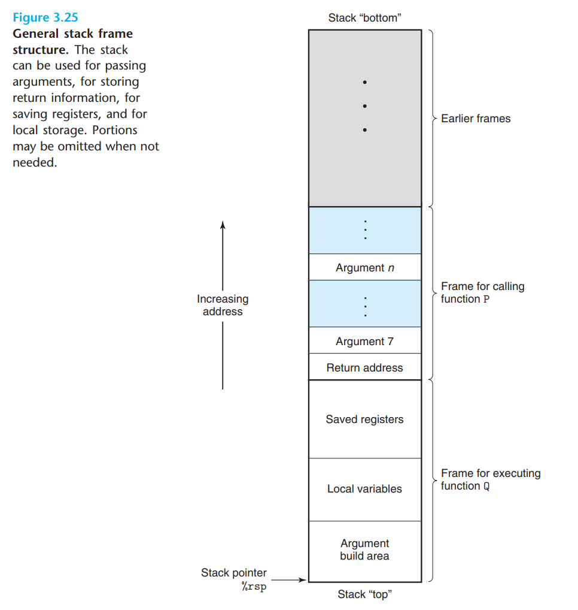
通过减小和增加栈指针的值，我们可以在栈上分配和释放内存。
当 x86-64 过程所需的存储空间超出寄存器能够存放的大小时，就会在栈上分配空间。这一部分就是过程的栈帧（stack frame）。
P 调用 Q 时，P 的返回地址被压入栈中；Q 的代码会扩展当前栈，保存寄存器的值、分配局部变量的空间、为它调用的过程设置参数。多数过程的栈帧是定长的，在过程的开始被分配完毕。
通过寄存器，P 可以传递最多 6 个整数值，但若 Q 需要更多的参数，P 可以在调用 Q 之前在自己的栈帧里存储好这些参数。
为提高时空效率，x86-64 过程只分配需要的栈帧。例如，参数若少于或等于 6 个，那么就会用寄存器传递所有的参数。有的函数的所有变量都可以保存在寄存器，且不会调用任何其他函数，完全不需要栈帧。
| 指令 | 描述 |
|---|---|
call Label |
直接过程调用 |
call *Operand |
间接过程调用 |
ret |
返回 |
（它们和 callq retq 完全等价）
call Q 会把返回地址（call Q 的下一条指令的地址）压入栈中，并把 PC 设置为 Q 的起始地址。
ret 会从栈中弹出返回地址，并把 PC 设置为该地址。
参数按顺序依次存储在 %rdi、%rsi、%rdx、%rcx、%r8 和 %r9 中，它们都是调用者保存寄存器。
如果函数有大于 6 个整数参数，那么超出部分需要存储在调用者的栈帧中。第 7 个参数位于栈顶。
通过栈传递参数时，所有数据大小向 8 的倍数对齐（每个参数都占据 字节的空间）。
局部数据必须存放在内存中的时候：
& 取地址// 例：参数过多，局部变量存放在栈上
long call_proc() {
long x1 = 1;
int x2 = 2;
short x3 = 3;
char x4 = 4;
proc(x1, &x1, x2, &x2, x3, &x3, x4, &x4);
return (x1 + x2) * (x3 - x4);
}
// x86-64
long call_proc()
call_proc:
// 准备参数
subq $32, %rsp
movq $1, 24(%rsp) // store 1 in &x1
movl $2, 20(%rsp) // store 2 in &x2
movw $3, 18(%rsp) // store 3 in &x3
movb $4, 17(%rsp) // store 4 in &x4
leaq 17(%rsp), %rax // create &x4
movq %rax, 8(%rsp) // store &x4 as arg8
movl $4, (%rsp) // store 4 as arg7
leaq 18(%rsp), %r9 // pass &x3 as arg6
movl $3, %r8d // pass 3 as arg5
leaq 20(%rsp), %rcx // pass &x2 as arg4
movl $2, %edx // pass 2 as arg3
leaq 24(%rsp), %rsi // pass &x1 as arg2
movl $1, %edi // pass 1 as arg1
call proc
movslq 20(%rsp), %rdx // long(x2)
addq 24(%rsp), %rdx // x1 + x2
movswl 18(%rsp), %eax // int(x3)
movsbl 17(%rsp), %ecx // int(x4)
subl %ecx, %eax // x3 - x4
cltq // long(x3 - x4)
imulq %rdx, %rax // (x1 + x2) * (x3 - x4)
addq $32, %rsp // 释放栈帧
ret
%rbx、%rbp、%r12、%r13、%r14、%r15 是被调用者保存寄存器。被调用者要么不改变这些寄存器的值，要么把他们的原始值压入栈中，然后在返回前恢复。
%rax、%rdi、%rsi、%rdx、%rcx、%r8、%r9、%r10、%r11 都是调用者保存寄存器。调用后，这些寄存器的值可能会被修改。
%rsp 既不是被调用者保存寄存器，也不是调用者保存寄存器
x86-64 的内存引用指令可以简化数组访问。例如：
int E[5]; // E in %rdx
int i = 2; // i in %rcx
E[i]; // (%rdx, %rcx, 4)
ptr + 1 相当于 &(ptr[1])， ptr0 - ptr1 结果的类型为 long。
int a[5][3]; // a in %rdi
int i = 2, j = 1; // i in %rsi, j in %rdx
a[i][j]; // a + 4 * (3 * i + j)
// leaq (%rsi, %rsi, 2), %rax 3 * i
// leaq (%rdi, %rax, 4), %rax a + 4 * (3 * i)
// movl (%rax, %rdx, 4), %eax a + 12 * i + 4 * j
编译器对定长多维数组常常有优化，体现在将重复的二维数组地址计算转化为指针解引用，即将 B[j][k] 优化为 *Bptr，将 j++ 优化为 Bptr += N。
一维数组地址计算（leaq (arr, index, 4), dest; addq $1, index）不必优化为指针解引用（movq (ptr), dest; addq $4, ptr），这对性能影响不大。
// -O1
#define N = 16;
typedef int fix_mat[N][N];
// A's ith row times B's jth column
int fix_prod_ele (fix_mat A, fix_mat B, long i, long k) {
long j;
int res = 0;
for (j = 0; j < N; j++) {
res += A[i][j] * B[j][k];
}
return res;
}
// 编译器会自动优化成：
int fix_prod_ele_opt(fix_mat A, fix_mat B, long i, long k) {
int* Aptr = &A[i][0];
int* Bptr = &B[0][k];
int* Bend = &B[N][k];
int res = 0;
do {
res += *Aptr * *Bptr;
Aptr++;
Bptr += N;
} while (Bptr != Bend);
return res;
} // 去掉了整数索引 j，把数组引用全部变成了指针解引用
// x86-64
A in %rdi, B in %rsi, i in %rdx, k in %rcx
fix_prod_ele:
salq $6, %rdx // i * 64 (16 * 4)
addq %rdx, %rdi // Aptr = A + i * 64 = &A[i][0]
leaq (%rsi, %rcx, 4), %rcx // Bptr = B + k * 4 = &B[0][k]
leaq 1024(%rcx), %rsi // Bend = B + k * 4 + 1024 = &B[N][k]
movl $0, %eax // res = 0
.L7:
movl (%rdi), %edx // *Aptr
imull (%rcx), %edx // *Aptr * *Bptr
addl %edx, %eax // res += *Aptr * *Bptr
addq $4, %rdi // Aptr++
addq $64, %rcx // Bptr += N
cmpq %rsi, %rcx
jne .L7 // Bptr != Bend
rep// ret
C99 引入了变长数组。
int var_ele(long n, int A[n][n], long i, long j) {
return A[i][j];
}
// x86-64
n in %rdi, A in %rsi, i in %rdx, j in %rcx
var_ele:
imulq %rdx, %rdi ; i * n
leaq (%rsi, %rdi, 4), %rax ; A + 4 * (i * n)
movl (%rax, %rcx, 4), %eax ; A[i][j]
ret
对于定长数组，n 是一个常数，可以通过 salq 和 leaq 等指令计算 i * n；而变长数组必须使用 imultq 计算，因此变长数组的性能可能一般。
不过，在循环中引用变长数组时，编译器往往可以识别出程序访问多维数组的步长，从而优化索引的计算（即可以把二维数组引用优化成指针解引用，从而避免直接数组引用导致的乘法）。
int var_prod_ele_opt(long n, int A[n][n], int B[n][n], long i, long k) {
int* Arow = A[i];
int* Bptr = &B[0][k];
int res = 0;
for (j = 0; j < n; j++) {
res += Arow[j] * *Bptr; // 将二维数组引用优化为指针解引用
Bptr += n;
}
}
编译器维护关于结构体的类型信息，指示每个字段的字节偏移，结构体的所有组成部分存放在一段连续的内存里。
联合体用不同的字段引用相同的内存块，绕过了 C 的类型限制。联合体所有字段的偏移量都是 0，它们重叠地放在同一块内存中。联合体的总大小等于它最大字段的大小。
例如，某种二叉树每个叶子节点都存放一个 double[2]；每个内部节点存放两个指向子节点的指针，但不存放数据。即数据字段和指针字段的使用是互斥的。那么就可以用联合体定义：
typedef enum { N_LEAF, N_INTERNAL } nodetype_t;
typedef struct node_t {
nodetype_t type; // tag
union {
struct {
struct node_t* left;
struct node_t* right;
} internal;
double data[2];
} info;
} node_t;
// 4 + 4 + 8 * 2 = 24 Bytes
// 和给代码造成的麻烦比起来 并没有节省什么空间
联合体还可以用来访问不同数据类型的位模式。
unsigned long double2bits(double d) {
union {
double d;
unsigned long bits;
} u;
u.d = d;
return u.bits;
}
// 如果使用 union 实现数据的拼接，那么就需要注意大端法和小端法的问题
数据对齐：一些计算机系统对基本数据类型的合法地址做出了限制，要求某种类型对象的地址必须是某个 K 的倍数。
例如，如果处理器总是一次性从内存读取 个字节，那么为了能够一次性读出一个 double，就需要要求这个 double 的地址是 的倍数。
无论数据是否对齐，x86-64 硬件都能正确工作。
对齐原则：K 字节的基本对象的地址必须是 K 的倍数。
汇编中，.align 8 可以保证其后面的数据的起始地址是 8 的倍数。
struct S1 {
int i;
char c;
int j;
};
// 编译器会在 i 和 c 之间填充 3 个字节，从而保证 j 满足 4 字节对齐
// 整个结构体的大小就会变成 12 字节
struct S1* p; // p 的值就是它指向的结构体的地址，它必须 4 字节对齐，从而保证 p->i p->c p->j 是对齐的
结构体必须按照它数据成员的对齐数的最小公倍数对齐.
编译器还会在结构体的末尾填充空字节，以保证结构体数组的每个元素是对齐的。
struct S2 {
int i;
int j;
char c;
};
// 对于单个 S2 对象来说，只要 S2 的地址是 4 字节对齐的，那么其元素就都会是对齐的
// 然而如果 S2 对象组成数组，那么数组的其他 S2 对象可能不是对齐的
// 编译器会在 c 之后填充 3 个字节，以保证 S2 的数组的元素是数据对齐的
struct S3 {
char c;
char* ptr;
}; // 因此 S3 的大小是 16 字节
struct P1 { int i; char c; int j; char d; };：4 + 4 + 4 + 4 = 16 字节，结构体自身 4 字节对齐struct P2 { short w[3]; char c[3]; };：6 + 3 + 1 = 10 字节，结构体自身 2 字节对齐struct P3 { short w[5]; char* c[3]; };：10 + 6 + 24 = 40 字节，结构体自身 8 字节对齐struct {
char* a;
short b;
double c;
char d;
float e;
char f;
long g;
int h;
} rec; // 8 + 2+6 + 8 + 1+3 + 4 + 1+7 + 8 + 4+4 = 56 字节
// 重排字段顺序为 a c g e h b d f，则总大小变成 8 + 8 + 8 + 4 + 4 + 2 + 1 + 1+4 = 40 字节
// （字段按**对齐数 (不一定是实际占用大小)**递减放置 结尾补 4 字节）
如果数据没有对齐，某些 Intel 和 AMD 处理器的 SSE 指令可能无法正确执行（这些指令要求操作数必须 16 字节对齐）。于是编译器和运行时系统需要保证，可能被 SSE 指令使用的数据必须是 16 字节对齐的，即：内存分配函数（
allocamalloccallocrealloc）生成的块的起始地址必须是 16 的倍数；多数函数栈帧的边界必须是 16 字节的倍数（有例外）。较新的 AVX 指令是 SSE 的超集，且不需要强制对齐
C 对数组引用不进行任何边界检查，且局部变量和状态信息（例如保存的寄存器值和返回地址）都存放在栈中。对越界的数组元素的写操作会破坏存储在栈中的状态信息，从而导致程序出错。
缓冲区溢出（buffer overflow）是一种常见的状态破坏。
// 标准库 gets 的实现
char* gets(char* s) {
int c;
char* dest = s;
while ((c = getchar()) != '\n' && c != EOF) {
*dest++ = c;
}
if (c == EOF && dest == s) {
return NULL;
}
*dest++ = '\0';
return s;
} // 不会检查输入的长度是否会越界访问 s
void echo() {
char buf[8];
gets(buf);
puts(buf);
}
// x86-64
echo:
subq $24, %rsp // 在栈上分配 24 字节
movq %rsp, %rdi // buf 存放在栈中
call gets // 越界超过 24 字节 就会覆盖返回地址 甚至破坏 caller 的栈帧
movq %rsp, %rdi
call puts
addq $24, %rsp
ret
gets strcpy strcat sprintf 等库函数都可能导致缓冲区溢出漏洞。
栈随机化：攻击者需要在字符串中插入攻击代码和执行攻击代码的指针。而产生这个指针需要知道这个字符串放置的栈地址。栈随机化使得栈的位置在程序每次运行时都有变化。
栈随机化的实现方法：程序开始时，在栈上分配一段 0 ~ n 字节内随机大小的空间。这段空间不被使用，仅用于改变程序每次执行时后续的栈的地址。
Linux 中，栈随机化是标准行为，它是更大的技术地址空间布局随机化（Address-Space Layout Randomization, ASLR）的一部分。采用 ASLR，每次运行时程序的不同部分（程序代码、库代码、栈、全局变量、堆数据）都会被加载到内存的不同区域。
栈随机化以及其他 ASLR 技术保证了同样的程序运行在不同机器上，地址映射会大相径庭，从而预防了一些攻击。
然而攻击者可以反复用不同的地址攻击。比如在实际攻击代码之前插入很长一段 nop 指令（只递增程序计数器的指令），只要攻击者能够猜中这段序列的某个地址，攻击代码就能被执行。即，空操作雪橇（nop sled）。如果建立 字节的 nop sled，就能通过最多 次枚举破解 的随机化；不过，对 64 位的情况，难度就有点大了。栈随机化和其他 ASLR 技术增加攻击的难度，大大降低了病毒和蠕虫的传播速度。
gcc 提供了栈保护者（stack protector）机制来检测缓冲区越界。它在栈帧中任何局部缓冲区和栈状态之间存储一个金丝雀值（canary value） / 哨兵值（guard value）。金丝雀值在程序每次运行时随机产生，在恢复寄存器状态和从函数返回之前，程序检查金丝雀值是否被修改，如果是，则程序异常中止。
gcc 会试着确定函数是否容易被栈溢出攻击（有无局部 char 缓冲区），自动插入这种一处检测，除非启用 -fno-stack-protector 选项。
void echo() {
char buf[8];
gets(buf);
puts(buf);
}
// x86-64 with stack protector
echo:
subq $24, %rsp
movq %fs:40, %rax // retrieve canary
movq %rax, 8(%rsp) // store canary on stack
xorl %eax, %eax // zero out %eax
movq %rsp, %rdi
call gets
movq %rsp, %rdi
call puts
movq 8(%rsp), %rax // retrieve canary
xorq %fs:40, %rax // check canary
je .L9 // if = goto ok
call __stack_chk_fail
.L9:
addq $24, %rsp
ret
%fs:40 指明金丝雀值是用段寻址（segmented addressing）从内存中读入的。金丝雀值被存放在一个特殊的只读段中，不会被攻击者覆盖。在恢复寄存器状态和函数返回之前，程序会检查金丝雀值是否被修改，如果是，则调用一个错误处理例程。
gcc 只在函数有局部 char 类型缓冲区时插入金丝雀值检测。
典型程序中，只有保存编译器产生的代码的内存才需要是可执行的，其他部分可以被限制为只允许读和写。以前的 x86 体系结构将读和执行访问控制合并成一个 1 位的标志，即可读的页也是可执行的。栈必须可读且可写，因而是可执行的。虽然有能够限制一些页可读但不可执行的机制，但性能较差。
最近的 AMD 处理器引入了 NX（No-Execute）位，将读和执行访问模式分开，栈可以被标记被可读、可写但不可执行的，性能上也没有损失。
当函数调用 alloca 或声明局部变长数组时，我们会需要实现变长栈帧。
变长栈帧的一大麻烦是对齐。
long vframe(long n, long idx, long* q) {
long i;
long* p[n];
p[0] = &i;
for (i = 1; i < n; i++) {
p[i] = q;
}
return *p[idx];
}
// x86-64
n in rdi, idx in rsi, q in rdx
vframe:
pushq %rbp
movq %rsp, %rbp // set frame ptr
subq $16, %rsp
leaq 22(, %rdi, 8), %rax
andq $-16, %rax // round to nearest lower 16, -16 == 0b1111 1111 1111 0000
subq %rax, %rsp // allocate for p
leaq 7(%rsp), %rax
shrq $3, %rax
leaq 0(, %rax, 8), %r8
movq %r8, %rcx // round to nearest higher 8, rcx = p
// ...
// Code for initializing p
i in rax and on stack, n in rdi, p in rcx, q in rdx
.L3:
movq %rdx, (%rcx, %rax, 8) // p[i] = q
addq $1, %rax
movq %rax, -8(%rbp) // store i on stack
.L2:
movq -8(%rbp), %rax // load i
cmpq %rdi, %rax
jl .L3
// Code for function exit
leave
ret
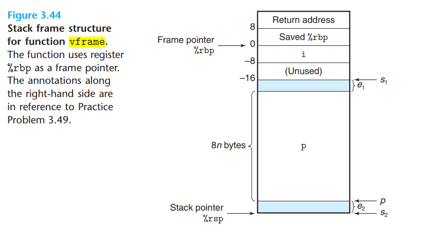
s1 是第一次执行 subq 后 %rsp 指向的位置，s2 是第二次执行 subq 后 %rsp 指向的位置。e1 和 e2 是空置的。
寄存器 %rbq 作为帧指针（frame pointer）或基指针（base pointer）管理变长栈帧。由于 %rbq 是被调用者保存寄存器，代码必须先将 %rbq 的值保存在栈中，然后执行 mov %rsp, %rbp。之后不再改变 %rbp 的值。用固定长度的局部变量（例如 i）相对于 %rbq 的偏移量来访问它们。
leave 指令将帧指针恢复到原始值，释放整个栈帧。执行它如同执行 movq %rbp, %rsp; popq %rbp。
注意第一部分代码的数据对齐。s2 - s1 被向下舍入到最近的 16 的倍数，而 p 的起始地址被向上舍入到最近的 8 的倍数。
处理器的浮点体系结构包括：
Pentium / MMX 时代，Intel 和 AMD 引入了媒体（media）指令，支持图形图像处理。这些指令本意是允许对多个不同的数据并行执行同一个操作，称为单指令多数据（SIMD）。MMX 发展成 SSE（Streaming SIMD Extension），又发展为最新的 AVX（Advanced Vector Extension）。
MMX 中，寄存器被称为“MM”寄存器，SSE 中被称为“XMM”寄存器，AVX 中被称为“YMM”寄存器。它们分别是 64 位、128 位和 256 位的。
2000 年 Pentium 4 引入了 SSE2，媒体指令开始包括对标量浮点数操作的指令。这些指令使用 XMM 或 YMM 寄存器的低 32 位或 64 位的单个值。x86-64 浮点数是基于 SSE 或 AVX 的。我们基于 AVX2 讨论浮点数（gcc 给定编译选项 -mavx2）。
AVX 浮点体系结构允许数据存储在 16 个 YMM 寄存器中，每个 YMM 寄存器都是 256 位的。当对标量数据操作时，这些寄存器只保存浮点数，只使用低 32 位或低 64 位，汇编代码用寄存器的 SSE XMM 寄存器名字引用它们，它们是对应 YMM 寄存器的低 128 位。
| 媒体寄存器（YMM） | 媒体寄存器（XMM） | 用途 |
|---|---|---|
| %ymm0 | %xmm0 | 1st FP arg. 返回值 |
| %ymm1 | %xmm1 | 2nd FP 参数 |
| %ymm2 | %xmm2 | 3rd FP 参数 |
| %ymm3 | %xmm3 | 4th FP 参数 |
| %ymm4 | %xmm4 | 5th FP 参数 |
| %ymm5 | %xmm5 | 6th FP 参数 |
| %ymm6 | %xmm6 | 7th FP 参数 |
| %ymm7 | %xmm7 | 8th FP 参数 |
| %ymm8 | %xmm8 | 调用者保存 |
| %ymm9 | %xmm9 | 调用者保存 |
| %ymm10 | %xmm10 | 调用者保存 |
| %ymm11 | %xmm11 | 调用者保存 |
| %ymm12 | %xmm12 | 调用者保存 |
| %ymm13 | %xmm13 | 调用者保存 |
| %ymm14 | %xmm14 | 调用者保存 |
| %ymm15 | %xmm15 | 调用者保存 |
| 指令 | 源 | 目的 | 描述 |
|---|---|---|---|
vmovss |
单精度数 | ||
vmovss |
单精度数 | ||
vmovsd |
双精度数 | ||
vmovsd |
双精度数 | ||
vmovaps |
对齐的封装好的单精度数 | ||
vmovapd |
对齐的封装好的双精度数 |
上表给出了 XMM 寄存器和内存之间以及 XMM 寄存器之间不做任何转换地传送浮点的指令。引用内存的指令是标量指令，它们只对单个（而不是一组封装好的数据）进行操作。无论数据对其与否，指令都能正常执行，但建议 32 位数据 4 字节对齐，64 位数据 8 字节对齐。
vmovaps 和 vmovapd 指令中的 a 意为 aligned，d 意为 packed。读写内存时，如果地址不满足 16 字节对齐，则它们会引发异常。在寄存器之间传送数据不会出现错误对齐。
| 指令 | 源 | 目的 | 描述 |
|---|---|---|---|
vcvttss2si |
单精度数 -> 整数（截断） | ||
vcvttsd2si |
双精度数 -> 整数（截断） | ||
vcvttss2siq |
单精度数 -> 四字整数（截断） | ||
vcvttsd2siq |
双精度数 -> 四字整数（截断） |
上表的指令把 XMM 寄存器或内存中读出的浮点数转换成整数，并把结果写入通用寄存器。
| 指令 | 源 1 | 源 2 | 目的 | 描述 |
|---|---|---|---|---|
vcvtsi2ss |
整数 -> 单精度数 | |||
vcvtsi2sd |
整数 -> 双精度数 | |||
vcvtsi2ssq |
四字整数 -> 单精度数 | |||
vcvtsi2sdq |
四字整数 -> 双精度数 |
上表的指令第一个操作数从内存或通用寄存器读取，第二个操作数从XMM 寄存器读取，结果写入 XMM 寄存器。第二个操作数只会影响结果的高位字节。常见的使用场景中，第二个操作数和目的操作数是同一个寄存器。
| 指令 | 源 1 | 源 2 | 目的 | 描述 |
|---|---|---|---|---|
vcvtss2sd |
单精度数 -> 双精度数 | |||
vcvtsd2ss |
双精度数 -> 单精度数 |
假如 %xmm0 的低位 4 字节保存着一个单精度值，那么 vcvtss2sd %xmm0, %xmm0, %xmm0 就能把它转换为双精度值。然而 gcc 会生成：
vunpcklps %xmm0, %xmm0, %xmm0 ; unpack and interleave low packed single
vcvtps2pd %xmm0, %xmm0
vunpcklps 指令可以交叉放置两个源 XMM 寄存器的值，结果存储在目标寄存器中。如果第一个源寄存器的内容为字 ，第二个源寄存器的内容为字 ，那么 vunpcklps 的结果为 。vcvtps2pd 指令把源 XMM 寄存器中的两个低位单精度值扩展成目的 XMM 寄存器中的两个双精度值。对 应用此指令会得到 。gcc 生成的代码更麻烦也更莫名其妙。
对于单精度到双精度的转换，相比于 vcvtsd2ss，gcc 会生成类似的代码：
vmovddup %xmm0, %xmm0
vcvtpd2psx %xmm0, %xmm0
假如 %xmm0 保存着两个双精度值 ，那么 vmovddup 会将其设置为 ，vcvtpd2psx 将它们转换成单精度，再存放在寄存器的低位一半中，并将高位一半清零。这同样是麻烦而莫名其妙的代码。
| 指令 1 | 指令 2 | 描述 |
|---|---|---|
vunpcklps %xmm0, %xmm0, %xmm0 |
vcvtps2pd %xmm0, %xmm0 |
单精度数 -> 双精度数 |
vmovddup %xmm0, %xmm0 |
vcvtpd2psx %xmm0, %xmm0 |
双精度数 -> 单精度数 |
double fcvt(int i, float* fp, double* dp, long* lp)
{
float f = *fp;
double d = *dp;
long l = *lp;
*lp = (long)d;
*fp = (float)i;
*dp = (double)l;
return (double)f;
}
// x86-64
i in edi, fp in rsi, dp in rdx, lp in rcx
fcvt:
vmovss (%rsi), %xmm0 // f = *fp
movq (%rcx), %rax // l = *lp
vcvttsd2siq (%rdx), %r8 // d = (long)*dp
movq %r8, (%rcx) // *lp = d
vcvtsi2ss %edi, %xmm1, %xmm1 // (float)i
vmovss %xmm1, (%rsi) // *fp = (float)i
vcvtsi2sdq %rax, %xmm1, %xmm1 // (double)l
vmovsd %xmm1, (%rdx) // *dp = (double)l
vunpcklps %xmm0, %xmm0, %xmm0
vcvtps2pd %xmm0, %xmm0 // (double)f
ret
XMM 寄存器用来向函数传递浮点参数和从函数返回浮点值。
%xmm0 ~ xmm7 最多可以传递 8 个浮点参数，多余的参数用栈传递。%xmm0 用来返回浮点值。浮点参数的寄存器分配按 %xmm0 -> %xmm7 的顺序；其他参数按 %rdi %rsi %rdx %rcx %r8 %r9 的顺序分配。
| 单精度指令 | 双精度指令 | 描述 |
|---|---|---|
vaddss |
vaddsd |
加 |
vsubss |
vsubsd |
减 |
vmulss |
vmulsd |
乘 |
vdivss |
vdivsd |
除 |
vmaxss |
vmaxsd |
最大值 |
vminss |
vminsd |
最小值 |
sqrtss |
sqrtsd |
算术平方根 |
这是一组执行算术运算的 AVX2 浮点指令，它们有一个或两个源操作数和一个目标操作数。第一个源操作数可以是 XMM 寄存器或内存位置，第二个源操作数和目的操作数必须是 XMM 寄存器。注意，vdivss S1 S2 D 计算的结果为 S2/S1。
AVX 浮点操作不能以立即数值作为操作数，编译器必须为所有的常量值分配和初始化存储空间。
double cel2fahr(double temp) {
return 1.8 * temp + 32.0;
}
// x86-64
temp in %xmm0
cel2fahr:
vmulsd .LC2(%rip), %xmm0, %xmm0
vaddsd .LC3(%rip), %xmm0, %xmm0
ret
.LC2:
.long 3435973837 // low 4 bytes of 1.8
.long 1073532108 // high 4 bytes of 1.8
.LC3:
.long 0 // low 4 bytes of 32.0
.long 1077936128 // high 4 bytes of 32.0
这里的 .long 声明的是 32 位常量，而不是 64 位常量。
| 单精度位级操作 | 双精度位级操作 | 描述 |
|---|---|---|
vxorps S1 S2 D |
vorpd S1 S2 D |
异或 |
vandps S1 S2 D |
andpd S1 S2 D |
与 |
这些操作作用于封装好的数据，更新整个目的 XMM 寄存器。
| 浮点比较指令 | 基于 | 描述 |
|---|---|---|
ucomiss S1, S2 |
S2 - S1 | 比较单精度值 |
ucomisd S1, S2 |
S2 - S1 | 比较双精度值 |
S1 可以是 XMM 寄存器或内存位置，S2 必须是 XMM 寄存器。
浮点比较指令会设置三个条件码：
ZF：零标志位CF：进位标志位PF：奇偶标志位奇偶标志位：对于整数操作，如果最近的一次算术 / 逻辑运算产生的值的最低位字节是偶校验的（即此字节中有偶数个 1），那么 PF 就被设置为 1。对于浮点操作，如果两个操作数中存在 NaN，那么 PF 被设置为 1。根据惯例，C 中如果有参数为 NaN，那么比较操作的结果为 false。例如，x 为 NaN 时，x == x 得到 0。
条件码的设置条件
| 顺序 S2 : S1 | CF | ZF | PF |
|---|---|---|---|
| 无序 | 1 | 1 | 1 |
| S2 < S1 | 1 | 0 | 0 |
| S2 = S1 | 0 | 1 | 0 |
| S2 > S1 | 0 | 0 | 0 |
无序：如果两个操作数中至少有一个是 NaN，那么结果就是无序的。
jp（jump on parity）：当 PF 为 1 时跳转。
typedef enum { NEG, ZERO, POS, OTHER } range_t;
range_t find_range(float x) {
int res;
if (x < 0)
res = NEG;
else if (x == 0)
res = ZERO;
else if (x > 0)
res = POS;
else
res = OTHER;
return res;
}
// x86-64
x in %xmm0
find_range:
vxorps %xmm1, %xmm1, %xmm1
vucomiss %xmm0, %xmm1
ja .L5
vucomiss %xmm1, %xmm0
jp .L8
movl $1, %eax
je .L3
.L8:
vucomiss .LC0(%rip), %xmm0 // comp x : 0
setbe %al // res = NaN ? 1 : 0
movzbl %al, %eax
addl $2, %eax // res += 2
ret
.L5:
movl $0, %eax
.L3:
rep; ret
gcc 生成的汇编代码效率一般：比较了 x 和 0.0 三次，尽管一次比较即可得到结果；生成了两次浮点常数：一次用了 vxorps，另一次从内存中读出这个值。
一个处理器支持的指令和指令的字节集编码称为它的指令集体系结构（Instruction-Set Architecture, ISA）。
CISC 最先出现，区别如下：
| CISC | Early RISC |
|---|---|
| 指令数量多 | 指令数量少 |
| 有些指令延迟很长（在内存之间复制整块、将多个寄存器值复制到内存） | 没有较长延迟的指令 |
| 编码可变长度（x86-64 1~15 字节） | 编码固定长度（通常 4 字节） |
| 寻址模式多样 | 通常只有基址和偏移量寻址 |
| 可以对内存和寄存器进行算术逻辑运算 | 只能对寄存器进行算术逻辑运算（load/store 体系结构） |
| 有条件码 | 无条件码 |
| 栈密集的过程链接 | 寄存器密集的过程链接（参数和返回地址用寄存器存放，通常有更多的寄存器） |
程序员可见的状态：
%rax、%rcx、%rdx、%rbx、%rsp、%rbp、%rsi、%rdi、%r8、%r9、%r10、%r11、%r12、%r13、%r14，除 %rsp 以外，寄存器没有固定的含义或值。ZF、符号 SF、溢出 OFStat：表明程序执行的总体状态（正常？异常？）Y86-64 指令集包括：
movq 被分为 irmovq、rrmovq、mrmovq、rmmovq，内存引用只支持基址 + 偏移量形式，不支持第二变址寄存器和任何寄存器值的伸缩，不允许内存之间直接传送，不允许将立即数传送到内存addq、subq、andq、xorq，只能对寄存器数据操作，会设置条件码jmp、jle、jl、je、jne、jge、jgcmovle、cmovl、cmove、cmovne、cmovge、cmovgcall、ret、pushq、popqhalt 停止指令的执行，相当于 x86-64 中的 hlt，处理器停止工作，状态码被设置为 HLT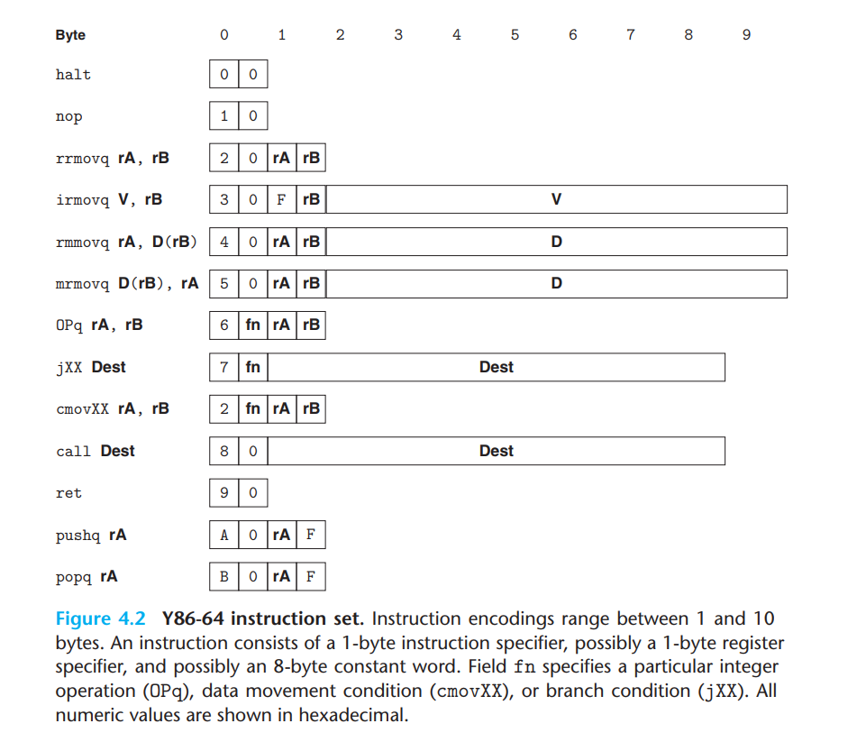
指令的第一个字节表明指令类型，其中高 4 位是*代码（code）部分，低 4 位是功能（function）*部分。
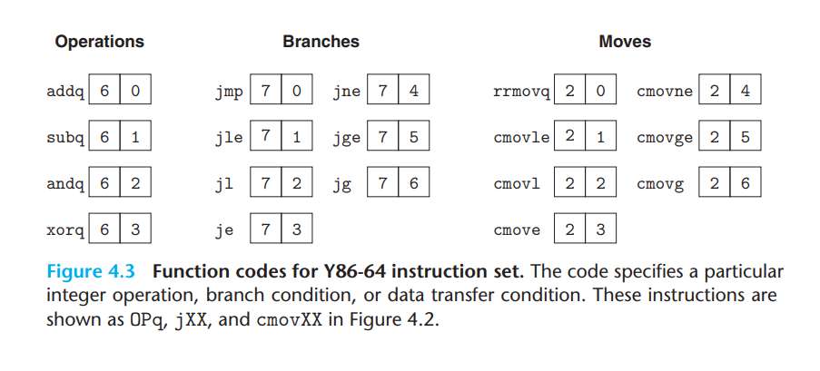
| 寄存器标识符 | 寄存器名 | 描述 |
|---|---|---|
| 0 | %rax |
返回值 |
| 1 | %rcx |
第 4 个参数 |
| 2 | %rdx |
第 3 个参数 |
| 3 | %rbx |
被调用者保存 |
| 4 | %rsp |
栈指针 |
| 5 | %rbp |
被调用者保存 |
| 6 | %rsi |
第 2 个参数 |
| 7 | %rdi |
第 1 个参数 |
| 8 | %r8 |
第 5 个参数 |
| 9 | %r9 |
第 6 个参数 |
| A | %r10 |
调用者保存 |
| B | %r11 |
调用者保存 |
| C | %r12 |
被调用者保存 |
| D | %r13 |
被调用者保存 |
| E | %r14 |
被调用者保存 |
| F | 无寄存器 | \ |
分支指令和调用指令的目的是绝对地址，不采用 PC 相对寻址方式；整数用小端法编码。
指令 rmmovq %rsp. 0x123456789abcd(%rdx) 的字节编码是 40 42 cd ab 89 67 45 23 01 00
状态码 Stat 的可能值
| 值 | 名字 | 含义 |
|---|---|---|
| 1 | AOK | 正常操作 |
| 2 | HLT | 执行 HLT 指令 |
| 3 | ADR | 非法内存地址 |
| 4 | INS | 非法指令 |
用 Y86-64 编写的完整程序的示例：
# Exec begins at address 0
.pos 0 # 从 0x0 处开始产生代码
irmovq stack, %rsp # 初始化栈指针
call main
halt
# arr of 4 elements
.align 8
array:
.quad 0x000d000d000d
.quad 0x00c000c000c0
.quad 0x0b000b000b00
.quad 0xa000a000a000
main:
irmovq array, %rdi
irmovq $4, %rsi
call sum # sum(array, 4)
ret
# long sum(long* start, long cnt)
sum:
irmovq $8, %r8
irmovq $1, %r9
xorq %rax, %rax
andq %rsi, %rsi
jmp test
loop:
mrmovq (%rdi), %r10
addq %r10, %rax
addq %r8, %rdi
subq %r9, %rsi
test:
jne loop
ret
# stack starts here and grows to lower addresses
.pos 0x200
stack:
以 . 开头的是汇编器伪指令（assembler directives），它们告诉汇编器调整地址，以便在那里产生代码或插入数据。.pos 告诉汇编器应从地址 0x0 处产生代码，这个地址是所有 Y86-64 程序的起点。
大多数现代逻辑设计采用硬件描述语言（Hardware Description Language, HDL）表达。最常用的有是 Verilog 和 VHDL。
我们用 HCL（Hardware Control Language, 硬件控制语言）描述处理器设计的控制逻辑。
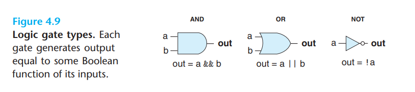
将很多逻辑门组合成网，就能构建计算块（computational block），称为组合电路（combinational circuits）。构建这样的网需要：
异或：bool xor = (a && !b) || (!a && b)
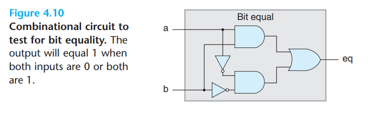
检查位相等的组合电路：bool eq = (a && b) || (!a && !b)
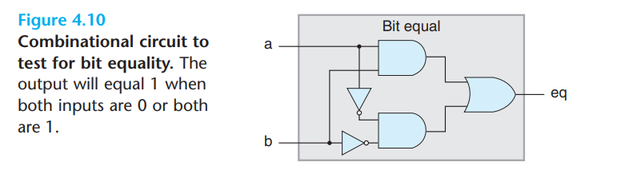
多路复用器（multiplexor, MUX）根据输入控制信号 s 的值，从一组输入信号中选出一个输出。
bool out = (!s && b) || (s && a)
把许多个位级组合电路组合起来，可以实现字级组合电路
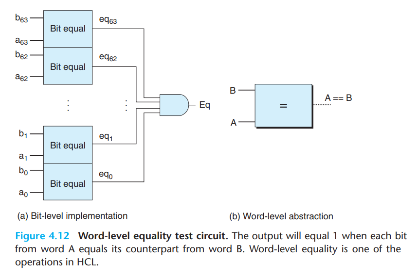
bool Eq = (A == B)
在字级抽象中，用中等粗度的线表示字级信号，用虚线表示布尔信号结果。
为了简单，HCL 中，所有字级的信号都声明为 int，不指定字的大小。
字级的多路复用器没有简单地复制 64 次位级多路复用器，它只产生一次 !s。
// 多路复用函数用情况表达式描述
[
select_1 : expr_1;
select_2 : expr_2;
...
select_n : expr_n;
]
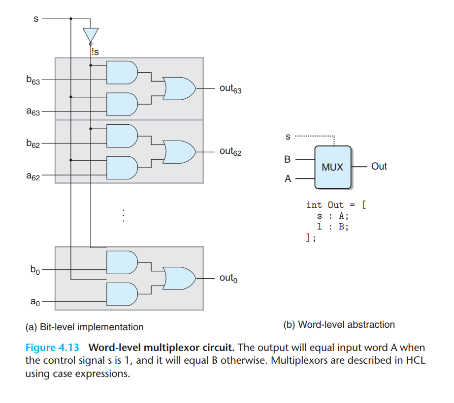
// 字级多路复用器
// 逻辑上，这些选择表达式被顺序求值，第一个求值为 1 的表达式会被输出
// 不得不要求不同的选择表达式互斥
word Out = [
s : A;
1 : B; // 相当于 default，这里即 !s && 1
]
选择表达式可以是任意布尔表达式，于是情况表达式能描述带复杂选择标准的、多种输入信号的块。
word Out4 = [
!s1 && !s0 : A; // 00
!s1 : B; // 01 即 !(!s1 && !s0) && !s1
!s0 : C; // 10
1 : D; // 11
]
// 寻找 A B C 中的最小值
word Min3 = [
A <= B && A <= C : A;
B <= A && B <= C : B;
1 : C;
// 也可以这样写
A <= B : [
A <= C : A;
1 : C;
];
1 : [
B <= C : B;
1 : C;
]
// 也可以这样写
A <= B && A <= C : A;
B <= C : B; // 不需要 B <= A 因为 A 已经不可能是结果了 只需要比较 B 和 C
1 : C;
]
算术 / 逻辑单元（ALU）是一种重要的组合电路，它接受两个数据输入 A 和 B 以及一个控制输入（对应于功能码）
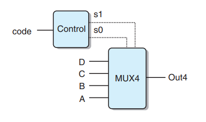
// s1 s0 为控制信号 是两位信号 code 的高位和低位
bool s1 = code in { 2, 3 }; // code == 2 || code == 3
bool s0 = code in { 1, 3 }; // code == 1 || code == 3
组合电路本质上不存储信息。为了产生时序电路（sequential circuit，有状态且基于此状态计算的系统），需要引入按位存储信息的设备。
存储设备由同一个时钟控制，时钟是一个周期性信号，决定了新值被加载到设备的时机。考虑两类存储器：
时钟寄存器（简称寄存器）：存储单个位 / 字，时钟信号控制寄存器加载输入值
随机访问存储器（简称内存）：存储多个字，用地址选择读写哪个字。包括处理器的虚拟内存系统和寄存器文件
硬件寄存器：直接把输入和输出线连接到电路其他部分的存储设备
程序寄存器：CPU 中为数不多可寻址的字，地址为寄存器 ID
硬件寄存器的工作原理：大多数时候，寄存器保持在稳定状态，其输出等于当前状态。即使一个新的寄存器输入产生，只要时钟是低电位的，寄存器的输出就保持不变。当时钟变为高电位时，寄存器将输入加载进来，变为自己新的状态，并输出。这个状态一直保持，直到下一个时钟上升沿。
寄存器是电路不同部分中的组合逻辑之间的屏障。每当每个时钟到达上升沿，值才会从寄存器的输入传送到输出。
Y86-64 处理器用时钟寄存器保存程序计数器（PC）、条件代码（CC）和程序状态（Stat）。
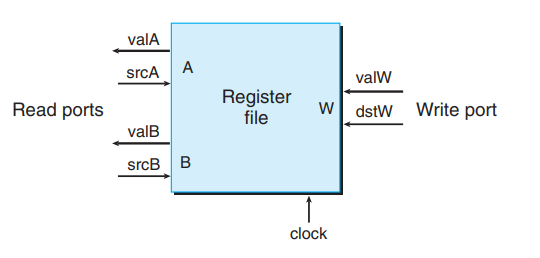
寄存器文件有两个读端口（A 和 B）和一个写端口（W）。上图的寄存器文件中，电路可以读两个程序寄存器的值，同时更新第三个寄存器的状态。srcA、srcB 和 dstW 是端口的地址输入，表明被读 / 写的寄存器的标识符。valA、valB 输出从寄存器中读出的值，valW 输入要写入寄存器的值。
寄存器文件有内部存储，不是组合电路。不过我们的实现中，从寄存器文件读数据就仿佛它是一个以地址为输入、数据为输出的组合逻辑块。
向寄存器文件写入字由时钟信号控制。每次时钟上升时，valW 的值被写入dstW 所指示的寄存器（当 dstW 为 0xF 时，不写入任何寄存器）。
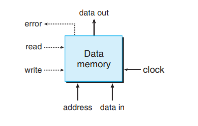
随机访问存储器存储程序数据。从内存中读的操作方式类似于组合逻辑：
0：输出地址上的数据1：将数据写入地址（由时钟控制）error 信号被置为 0，除非地址非法（这个信号由组合逻辑产生，因为这个边界检查纯粹是地址输入的函数，不涉及任何状态的保存）。我们的处理器还包括另外一个只读存储器，用于读指令。在大多数实际系统中，这两个存储器被合并为一个具有双端口的存储器：一个读指令，另一个读或写数据。
每个时钟周期上，SEQ 执行处理一条完整指令所需的所有步骤，但这需要一个很长的时钟周期时间，因此时钟周期频率会低到不可接受。
icode（指令代码） 和 ifun（指令功能）、寄存器操作数指示符 rA 和 rB、四字节常数字 valC。按顺序方式计算下一条指令的地址 valP（valP 等于 PC 的值加当前指令的长度）。valA 和 / 或 valB。valE。此阶段也可能设置条件码。对条件传送指令来说，此阶段会检验条件码和传送条件，如果条件成立，则更新目标寄存器。对跳转指令来说，此阶段决定是否应该选择分支。valM。处理器无限循环。发生异常后停止：执行 halt 指令或非法指令，或读写非法地址。
只有 OPq 指令会设置条件码。
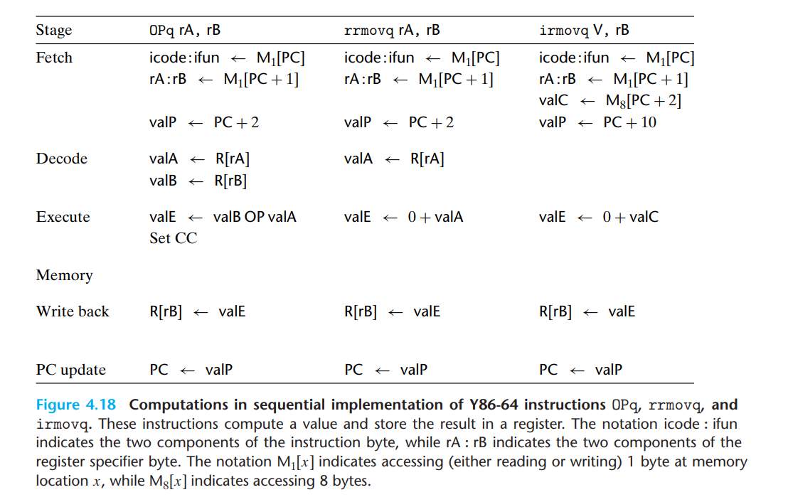
注意 mrmovq 指令的操作数顺序：先 rB 后 rA。这是因为 valA 和 valC 不能同时进入执行阶段。
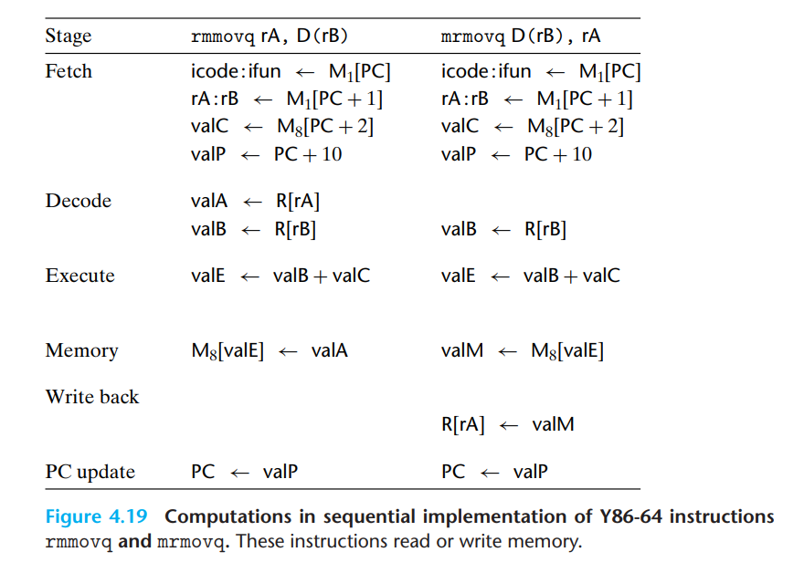
pushq 在译码阶段将 valB 赋值为 %rsp。效果上，先压栈，后更新栈指针。pushq %rsp 压入栈的是 %rsp 的原始值（M[valE]=valA），而不是减 8 后的值。
popq 在译码阶段将 valA 和 valB 都赋值为 %rsp。效果上，先弹栈，后更新栈指针。popq %rsp 弹出栈的是 %rsp 的原始值指向的内容（valM=M[valA]），而不是加 8 后指向的内容。在写回阶段，R[%rsp]=valE 和 R[rA]=valM 都会写入 %rsp，由于 M 端口优先级更高，%rsp 会被置为 valM，即弹出的值。
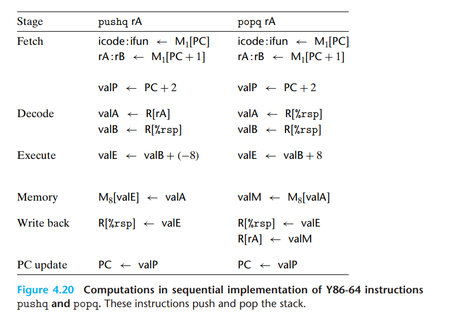
ret 指令在访存阶段使用 valA 而不是 valB，这是为了和其他指令保持一致。在我们后续的 HCL 实现中，mem_addr 的值要么来源于 valA，要么来源于 valE。
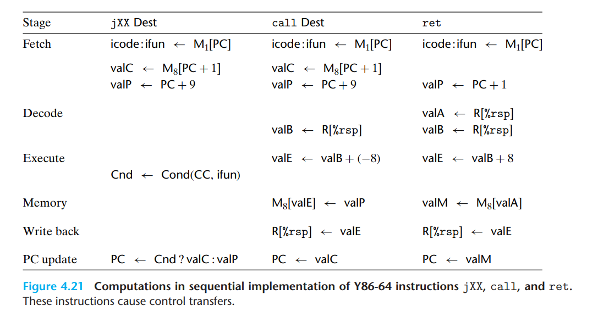
在 rrmovq 指令的基础上，条件传送指令在指令阶段增加 Cnd=Cond(CC, ifun)，并在写回阶段增加条件判断：if (Cnd) R[rB]=valE
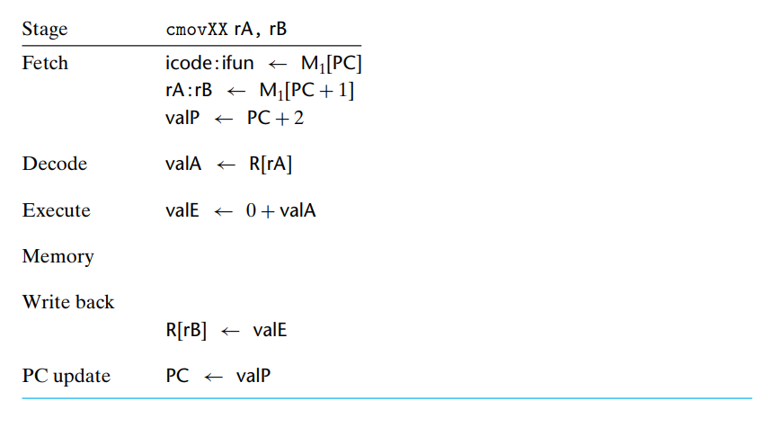
同各个阶段相关的硬件单元（hardware units）负责执行每个阶段的处理。所有硬件单元的处理都在一个时钟周期完成。
valP。A 和 B 同时读取 valA 和 valB。valE，更新条件码寄存器 CC。有条件时，根据条件码和传送条件计算 Cnd。valM，或将 valA 写入数据内存。E 用来写入 valE，端口 M 用来写入 valM。valP、valC 或 valM，并将其写入程序计数器寄存器。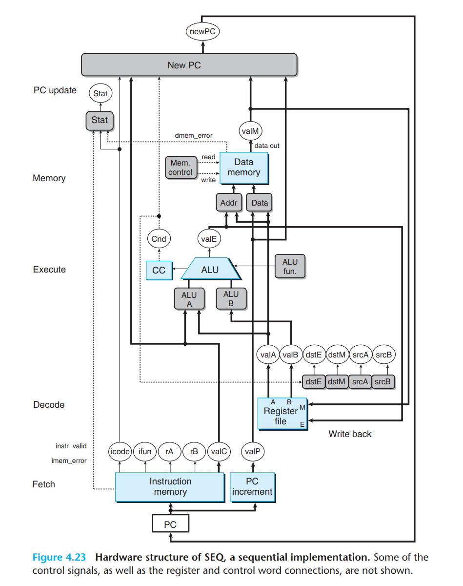
四个寄存器 ID 信号：srcA，valA 的源；srcB，valB 的源；dstE，valE 的目的；dstM，valM 的目的。
SEQ 的实现包括组合逻辑和两种存储器设备：时钟寄存器（程序计数器和条件码寄存器）以及随机访问存储器（寄存器文件、指令内存和数据内存）。组合逻辑不需要时序或控制，因为只要输入变化，其值就通过逻辑门网络传播。我们认为读随机访问存储器的操作和组合逻辑一样，只要输入的地址变化，输出的字就自动变化，并通过逻辑门网络传播。对于较小的电路，这是合理的；对于较大的电路，可以用特殊的时钟电路模拟这个效果。指令内存只用来读指令，我们可以将这个单元看作组合逻辑。
程序计数器、条件码寄存器、数据内存和寄存器文件这四个硬件单元的时序需要被明确控制。它们被一个时钟信号控制。每个时钟周期，程序计数器都会装载新的指令地址。条件码寄存器只在执行整数运算指令时被装载。数据内存只在执行 rmmovq、pushq 或 call 时被写入。寄存器文件的两个写端口允许每个时钟周期更新两个程序寄存器。
我们将每条指令拆分成了 6 个按顺序执行的阶段，但在硬件结构中，这些阶段实际上是“同时”进行的。通过寄存器和内存的时钟控制，硬件获得了如同顺序执行的效果。
能够“化同时为顺序”，是因为我们遵循了从不回读的原则。处理器从来不需要为了完成一条指令的执行而去读由该指令更新了的状态。例如，如果我们对 pushq 的实现变为先将 %rsp 减 8，再将更新后的 %rsp 值作为写操作的地址，那么我们为了执行内存操作，就需要先从寄存器文件读出更新后的 %rsp，从而违背了此原则。实际上，我们的实现是先产生出更新后的 %rsp 值作为信号 valE，然后将 valE 既作为写回栈指针的数据，又作为内存写的地址。因此，在时钟上升开始下一个周期时，处理器就可以同时执行寄存器写和内存写了。同理，popq 的实现将 %rsp 置为从栈中弹出的值，而不是栈指针被增加后的值。
又例如，有的指令（整数运算）设置条件码，有的指令（条件跳转）读取条件码，但没有指令既设置条件码，又读取条件码。在任何指令试图读之前，它们都会更新。
寄存器文件、指令内存和数据内存的读取被看成是组合逻辑。每个时钟周期开始时，状态单元（程序计数器、条件码寄存器、寄存器文件和数据内存）的值是根据上一条指令设置的。信号通过组合逻辑传播，生成新的状态单元的值。在下一个周期开始时，这些值会被加载到状态单元中。
简言之，SEQ 的硬件实现可以描述为：用时钟控制状态单元的更新，值通过组合逻辑传播。
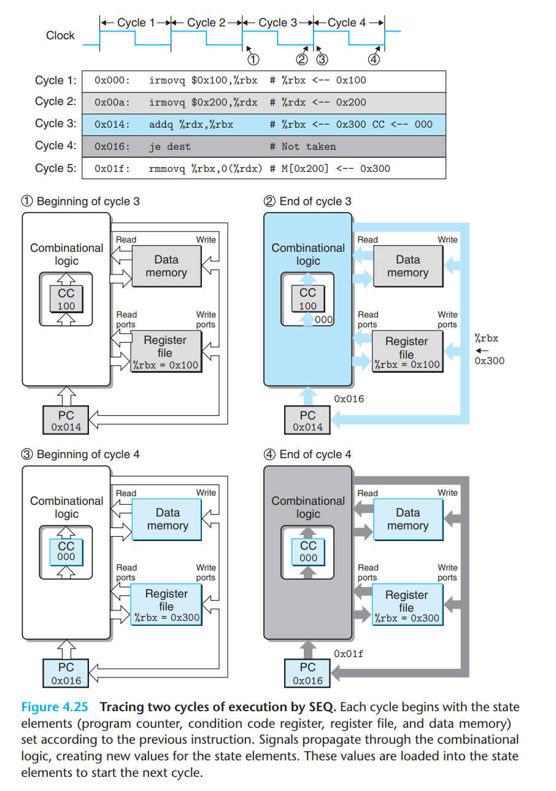
| 名称 | 值 | 含义 |
|---|---|---|
IHALT |
0x0 | halt |
INOP |
0x1 | nop |
IRRMOVQ |
0x2 | rrmovq |
IIRMOVQ |
0x3 | irmovq |
IRMMOVQ |
0x4 | rmmovq |
IMRMOVQ |
0x5 | mrmovq |
IOPQ |
0x6 | 算术 / 逻辑指令 |
IJXX |
0x7 | 条件跳转指令 |
ICALL |
0X8 | call |
IRET |
0x9 | ret |
IPUSHQ |
0xA | pushq |
IPOPQ |
0xB | popq |
FNONE |
0x0 | 默认功能码 |
RRSP |
0x4 | %rsp |
RNONE |
0xF | 空寄存器 |
ALUADD |
0x0 | 加法功能码 |
SAOK |
0x1 | 正常操作 |
SADR |
0x2 | 非法内存地址 |
SINS |
0x3 | 非法指令 |
SHLT |
0x4 | halt 状态码 |
指令内存以 PC 的值作为地址的起始字节，一次从内存中读出 10 个字节。
当指令地址不合法时（由信号 imem_error 指明），icode 置 1，ifun 置 0，对应于 nop。
根据 icode 的值，三个一位的信号被计算出来：instr-valid 检查指令合法性，need_regids 检查指令是否包括一个寄存器指示符字节，need_valC 检查指令是否包括一个常数字。（当指令地址越界时会产生的）instr_valid 和 imem_error 在访存阶段被用于产生状态码。
word icode = [
imem_error: INOP;
1: imem_icode; // Default: get from instruction memory
];
// Determine instruction function
word ifun = [
imem_error: FNONE;
1: imem_ifun; // Default: get from instruction memory
];
bool instr_valid = icode in
{ INOP, IHALT, IRRMOVQ, IIRMOVQ, IRMMOVQ, IMRMOVQ,
IOPQ, IJXX, ICALL, IRET, IPUSHQ, IPOPQ };
// Does fetched instruction require a regid byte?
bool need_regids =
icode in { IRRMOVQ, IOPQ, IPUSHQ, IPOPQ,
IIRMOVQ, IRMMOVQ, IMRMOVQ };
// Does fetched instruction require a constant word?
bool need_valC =
icode in { IIRMOVQ, IRMMOVQ, IMRMOVQ, IJXX, ICALL };
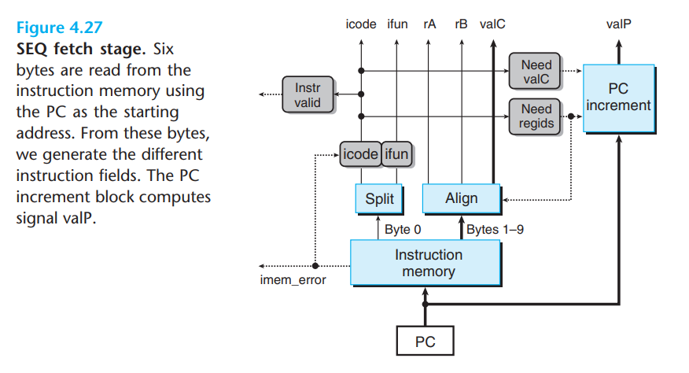
剩下 9 个字节是寄存器指示符字节和常数字的组合编码。硬件单元 Align 将他们放入寄存器字段和常数字中。若 need_regids 为 1，则第一个字节被分开放入 rA 和 rB；否则，rA 和 rB 被置为 0xF(RNONE)。Align 同时根据 need_valC 产生常数字 valC：若 need_regids 为 1，则 valC 为字节 2 ~ 9（对应于 irmovq、rmmovq、mrmovq）；否则，valC 为字节 1 ~ 8（对应于 jXX 和 call）。
PC 增加器根据 PC、need_regids 和 need_valC 的值产生信号 valP：
根据 icode 以及 rA 和 rB，可能还有 Cnd 条件信号，dstE、dstM、srcA 以及 srcB 四个块产生出四个不同的寄存器 ID。
// What register should be used as the A source?
word srcA = [
icode in { IRRMOVQ, IRMMOVQ, IOPQ, IPUSHQ } : rA;
icode in { IPOPQ, IRET } : RRSP;
1 : RNONE; // Don't need register
];
// What register should be used as the B source?
word srcB = [
icode in { IOPQ, IRMMOVQ, IMRMOVQ } : rB;
icode in { IPUSHQ, IPOPQ, ICALL, IRET } : RRSP;
1 : RNONE; // Don't need register
];
// What register should be used as the E destination?
word dstE = [
icode in { IRRMOVQ } && Cnd : rB;
icode in { IIRMOVQ, IOPQ} : rB;
icode in { IPUSHQ, IPOPQ, ICALL, IRET } : RRSP;
1 : RNONE; // Don't write any register
];
// What register should be used as the M destination?
word dstM = [
icode in { IMRMOVQ, IPOPQ } : rA;
1 : RNONE; // Don't write any register
];
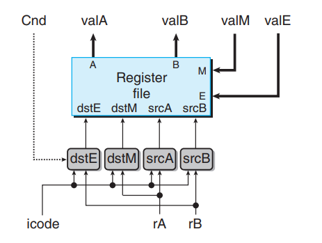
对于指令 popq %rsp，写端口 E 和 M 会同时对 %rsp 写入。为了让 popq %rsp 弹出的是 %rsp 的旧值，我们需要令 M 端口的优先级高于 E 端口。这样，当 E 和 M 端口同时写入时，只有 M 端口的写入会发生。
ALU 根据 alufun 信号，对 aluA 和 aluB 执行 ADD、SUBTRACT、AND 或 EXCLUSIVE-OR 运算。
// Select input A to ALU
word aluA = [
icode in { IRRMOVQ, IOPQ } : valA;
icode in { IIRMOVQ, IRMMOVQ, IMRMOVQ } : valC;
icode in { ICALL, IPUSHQ } : -8;
icode in { IRET, IPOPQ } : 8;
// Other instructions don't need ALU
];
// Select input B to ALU
word aluB = [
icode in { IRMMOVQ, IMRMOVQ, IOPQ, ICALL,
IPUSHQ, IRET, IPOPQ } : valB;
icode in { IRRMOVQ, IIRMOVQ } : 0;
// Other instructions don't need ALU
];
// Set the ALU function
word alufun = [
icode == IOPQ : ifun;
1 : ALUADD;
];
// Should the condition codes be updated?
bool set_cc = icode in { IOPQ };
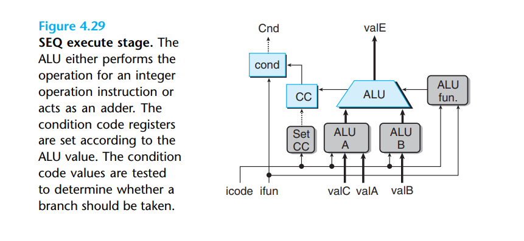
每次运行时，ALU 都会产生三个与条件码相关的信号：零、符号和溢出。我们希望只在执行 OPq 时才设置条件码，因此用控制信号 set_cc 来控制条件码是否被设置。
“cond”会根据条件码和 ifun 产生一位信号 Cnd，决定是否进行条件分支或条件数据传送。Cnd 在设置条件传送时的 dstE 和条件传送的下一个 PC 逻辑中被用到。
控制块 Mem.addr 和 Mem.data 产生内存地址和待写入数据的值，Mem. read 和 Mem. write 产生读写操作的控制信号。进行读操作时，valM 是读出的值。
// Set read control signal
bool mem_read = icode in { IMRMOVQ, IPOPQ, IRET };
// Set write control signal
bool mem_write = icode in { IRMMOVQ, IPUSHQ, ICALL };
// Select memory address
word mem_addr = [
icode in { IRMMOVQ, IPUSHQ, ICALL, IMRMOVQ } : valE;
icode in { IPOPQ, IRET } : valA;
// Other instructions don't need address
];
// Select memory input data
word mem_data = [
// Value from register
icode in { IRMMOVQ, IPUSHQ } : valA;
// Return PC
icode == ICALL : valP;
// Default: Don't write anything
];
// Determine instruction status
word Stat = [
imem_error || dmem_error : SADR;
!instr_valid: SINS;
icode == IHALT : SHLT;
1 : SAOK;
];
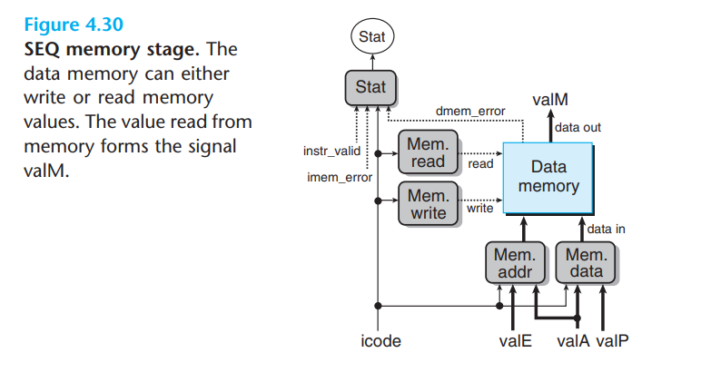
在访存阶段的最后，处理器根据取指阶段产生的 icode、imem_error、instr_valid 和数据内存产生的 dmem_error，计算状态码 Stat。
根据 icode 和 Cnd 产生 PC 的新值。
word new_pc = [
// Call. Use instruction constant
icode == ICALL : valC;
// Taken branch. Use instruction constant
icode == IJXX && Cnd : valC;
// Completion of RET instruction. Use value from stack
icode == IRET : valM;
// Default: Use incremented PC
1 : valP;
];
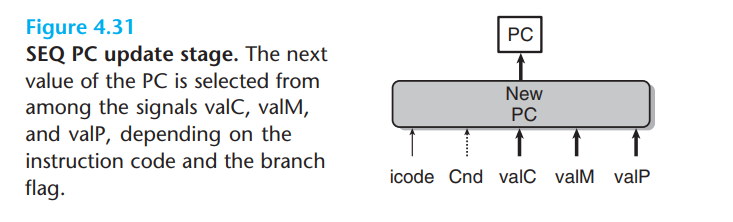
每秒十亿条指令（Giga Instructions Per Second, GIPS）是吞吐量的单位。从头到尾执行一条指令的用时称为延迟（latency）。
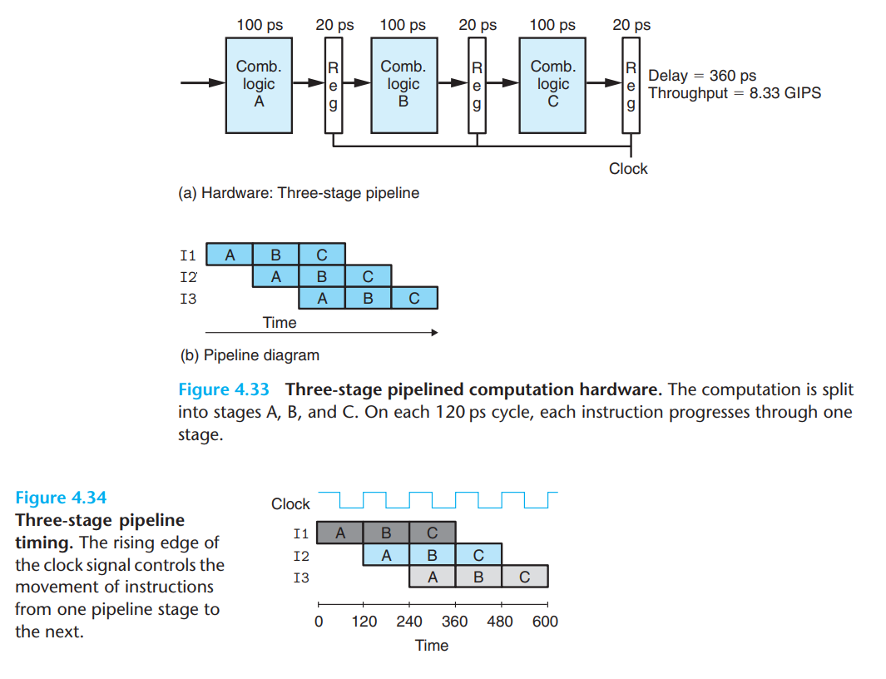
流水线化的计算硬件将计算分为三个阶段（A、B 和 C），在各个阶段之间放上流水线寄存器（pipeline register）。每条指令需要三个完整的时钟周期执行。稳定状态下，每个时钟周期，一条指令离开系统，一条新指令进入系统。我们将时钟周期设置为 ，则吞吐量为 ，延迟为 。延迟增加是由于增加的流水线寄存器的时间开销。
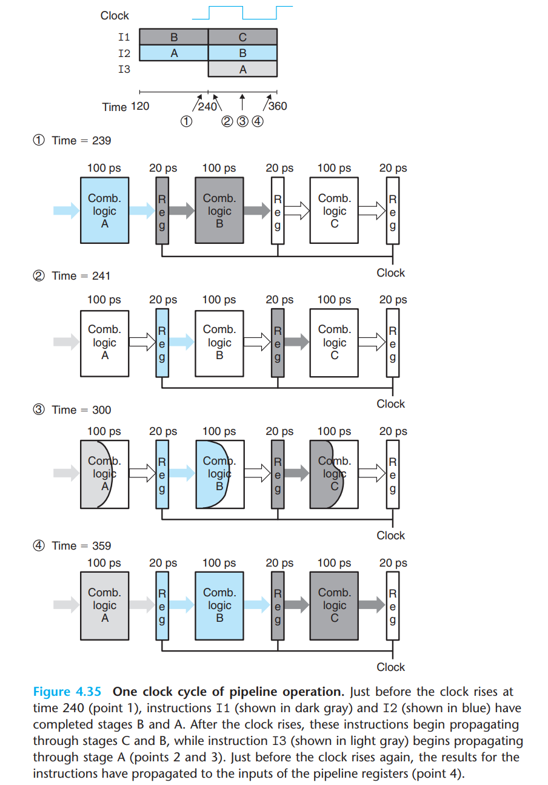
减缓时钟不会影响流水线的行为，但加快时钟可能导致值来不及通过组合逻辑。
如果不同计算阶段的延迟不相等，则时钟周期不得不被设置为最长的延迟，以保证所有阶段都能完成。这样，流水线的吞吐量就会降低。
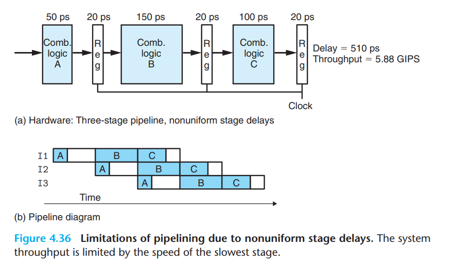
将系统计算设计划分成等延迟的阶段很难。ALU 和内存是不能被划分为多个延迟更小的单元的。
流水线寄存器也会带来延迟。随着流水线深度的增加，虽然时钟频率能够提高，但这一延迟也会越来越显著。
为了提高时钟频率，现代处理器采用了很深的（15 或更多的阶段）流水线。处理器架构师将指令的执行划分成很多非常简单的步骤，减小每个阶段的延迟。芯片设计者小心地设计时钟传播网络，以保证时钟在整个芯片上同时改变。
相邻的机器指令之间可能存在数据相关（data dependency）。例如，addq %rax, %rbx 和 subq %rbx, %rcx，第二条指令的源操作数是第一条指令的目的操作数。
loop:
subq %rdx, %rbx
jne targ
irmovq $10， %rdx
jmp loop
targ:
halt
第三行的 jne targ 产生了一个控制相关（control dependency），条件测试的结果决定下一条指令是 irmovq 还是 halt。
SEQ 设计中，这些相关是用反馈路径解决的。每条指令的结果都反馈给下一条指令：将更新的寄存器值向下传送到寄存器文件，将新的 PC 值向下传送到 PC 寄存器。我们需要小心处理反馈。
调整 SEQ 中五个阶段的顺序，使得更新 PC 阶段在一个时钟周期开始时执行。在 SEQ+ 中，我们创建状态寄存器来保存在一条指令执行过程中计算出来的信号，在新的时钟周期开始时，这些信号通过同样的逻辑来计算当前指令的 PC。我们将这些寄存器标号为 pIcode、pCnd 等等，来指明在任一给定周期，它们保存的是前一个周期中产生的控制信号。
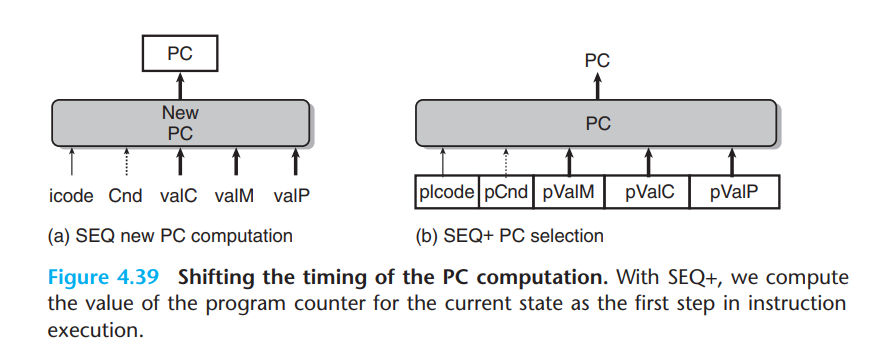
word pc = [
// Call. Use instruction constant
pIcode == ICALL : pValC;
// Taken branch. Use instruction constant
pIcode == IJXX && pCnd : pValC;
// Completion of RET instruction. Use value from stack
pIcode == IRET : pValM;
// Default: Use incremented PC
1 : pValP;
];
SEQ+ 没有硬件寄存器来存放程序计数器，而是根据从上一条指令保存的状态信息动态地计算 PC。这说明我们可以用一种与 ISA 隐含着的概念模型不同的方式实现处理器，只要保证处理器的执行效果是正确的。
这种改进称为电路重定时（circuit retiming）。重定时改变系统的状态表示，但不改变其逻辑行为。它可以平衡一个流水线系统各个阶段的延迟。
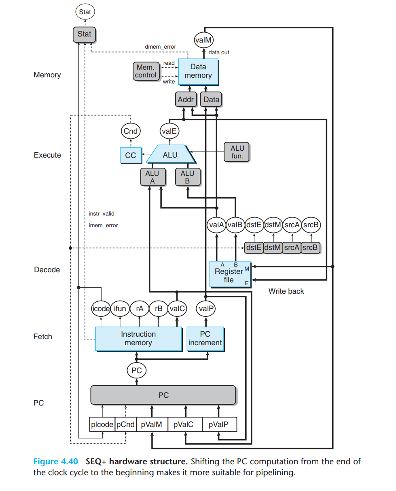
我们要在 SEQ+ 的各个阶段之前插入流水线寄存器，并对信号重新排列，得到 PIPE- 处理器。
流水线寄存器用实心方框表示，每个寄存器包括不同字段，用白色方框表示。同之前硬件结构图示的圆角方框不同，这些白色方框表示实际的硬件组成。
流水线寄存器按如下方式标号：
ret 指令时，它还要向 PC 选择逻辑提供返回地址。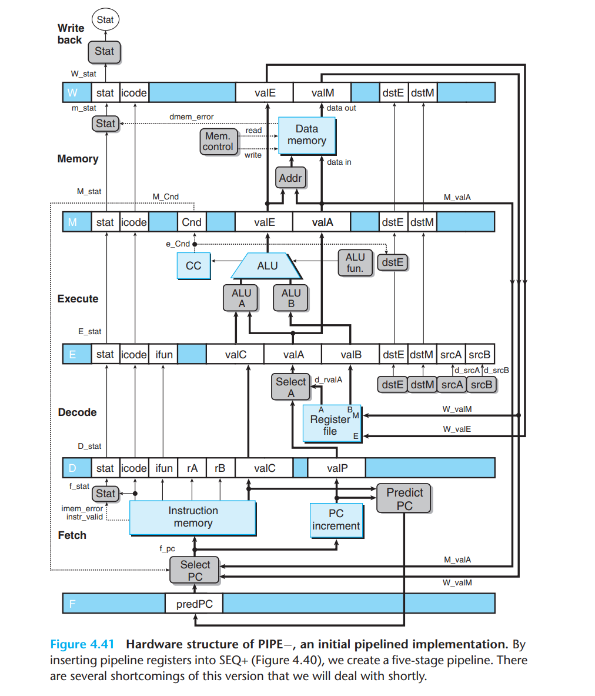
顺序实现 SEQ 和 SEQ+ 在一个时刻只处理一条指令，因此 valC、srcA 和 valE 这样的信号有唯一的值。而在流水线化的设计中，与各个指令相关联的这些值有多个版本。
对于流水线寄存器中的字段，我们加上大写的流水线寄存器名字作为前缀区分，例如 4 个状态码被命名为 D_stat、E_stat、M_stat 和 W_stat；对于在一个阶段内刚刚计算出来的信号，我们加上小写的阶段名的首字母作为前缀区分，例如取值和访存阶段标号 Stat 的控制逻辑块的输出被命名为 f_stat 和 m_stat。整个处理器的状态 Stat 是根据 W_stat 的值，经过写回阶段的块计算而得的。
SEQ+ 和 PIPE- 的译码阶段都产生信号 dstE 和 dstM，它们指明值 valE 和 valM 的目的寄存器。SEQ+ 中，我们将这些信号直接连到寄存器文件写端口的地址输入，但在 PIPE- 中，我们在流水线中一直携带这些信号穿过执行和访存阶段，直到写回阶段才送到寄存器文件。作为一条通用原则，我们要保存处于一个流水线阶段中的指令的所有信息。
PIPE- 译码阶段中的 Select A 块从来自流水线寄存器 D 的 valP 和从寄存器文件 A 端口读出的值中选择一个，作为流水线寄存器 E 的 valA。包括这个块是为了减少要携带给流水线寄存器 E 和 M 的状态数量。只有 call 指令在访存阶段需要 valP 的值，只有跳转指令在执行阶段（当不需要跳转时）需要 valP 的值，而这些指令又都不需要从寄存器文件读出的 valA。因此我们把这两个信号合并为 valA，从而减少了流水线寄存器的状态数量。这消除了 SEQ+ 中标号 Data 的块。
我们必须在取出当前指令之后，马上确定下一条指令的位置。然而，如果取出的是条件分支指令，我们就不得不等到指令通过执行阶段后才能知道是否需要跳转。类似地，如果取出的是 ret 指令，我们不得不等到访存阶段才能确定返回地址。
除了这两个例外，对于其他的指令，我们可以在取值阶段确定其下一条指令的地址。对于 call 和 jmp下一条指令的地址就是常数字 valC；对其余指令，下一条指令的地址则是 valP。因此，通过预测 PC 的下一个值，大多数情况下我们能达到每个时钟周期发射一条新指令的目的。
猜测分支方向并根据猜测开始取指的技术称为分支预测。我们的设计只使用了简单的策略，即总是预测选择了条件分支，因而预测 PC 的新值为 valC。
我们的设计使用总是选择（always taken）的预测策略，它的成功率约为 . 更复杂一些的是反向选择、正向不选择（backward taken, forward not-taken, BTFNT）的策略：当分支地址比下一条地址低时就预测选择分支，而分支地址比较高时就预测不选择分支。这种策略的成功率为 。这种改进基于一个事实：循环由后向分支结束，且循环会执行多次；前向分支用于条件操作，其可能性较小。
分支预测错误会极大地降低程序性能。可能的时候尽量用条件数据传送替代条件数据转移。
设计中，我们暂时不对 ret 指令的返回地址做任何预测。当遇到 ret 时，我们只简单地暂停处理新指令，直到 ret 通过写回阶段。
对大多数程序来说，预测返回地址很容易，因为大多数函数调用会返回到调用指令的下一条指令。高性能处理器在取指单元中放入一个硬件栈，保存过程调用指令产生的返回地址。同分支预测一样，在预测错误时必须提供一个恢复机制。这种预测通常很可靠。这个硬件栈对程序员不可见。
PIPE- 的取指阶段预测 PC 的下一个值，并为取指选择实际的 PC。标号 Predict PC 的块会从 PC 增加器计算出的 valP 和取出的指令中得到的 valC 中选择，其结果存放在流水线寄存器 F 的 predPC 字段中。标号 Select PC 的块从 pred PC、M_valA（对不选择分支的指令来说为 valP 的值） 和 W_valM（ret 指令的返回地址）
相邻指令的相关分为：
这些相关可能导致流水线产生计算错误，称为冒险（hazard）。冒险也可以分为数据冒险（data hazard）和控制冒险（control hazard）。
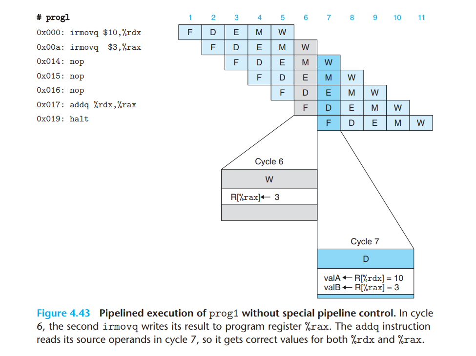
上图中，irmovq 与 addq 之间的数据相关没有造成数据冒险。但如果减少中间 nop 指令的数量，就会因为 irmovq 指令的结果来不及在写回阶段写入寄存器文件，而导致 addq 指令读到错误的值，从而产生数据冒险。
列举数据冒险的类型
对 Y86-64 而言，程序状态包括程序寄存器、程序计数器、内存、条件码寄存器和状态寄存器。
- 程序寄存器：由于之前指令的写回阶段尚未完成，导致当前指令读取到错误的值。
- 程序计数器：即控制冒险。当取指阶段的逻辑正确预测了程序计数器的新值时，就不会产生冒险。
- 内存：只有一种可能：访存阶段数据的写入和取指阶段指令的读取之间发生冲突。这种情况发生在包含自我修改代码的程序中。我们假设程序不会自我修改。
- 条件码寄存器：执行阶段条件码寄存器会被整数操作指令修改。条件传送指令会在执行阶段、条件转移指令会在访存阶段读条件码寄存器。因此不会发生冒险。
- 状态寄存器：我们的设计中，流水线的每条指令都与一个状态码相关联。因此当异常发生时，处理器可以有条理地停止。
因此，我们只需要处理寄存器数据冒险、控制冒险以及异常。
暂停（stalling）会使处理器暂停流水线中一条或多条指令的执行，直到冒险条件不再满足。
如果当前指令译码后造成数据冒险，我们就在它的执行阶段插入一个气泡（bubble），从而将该指令阻塞在译码阶段，直到它的源操作数完成写回。气泡就像自动产生的 nop，它不改变程序状态。
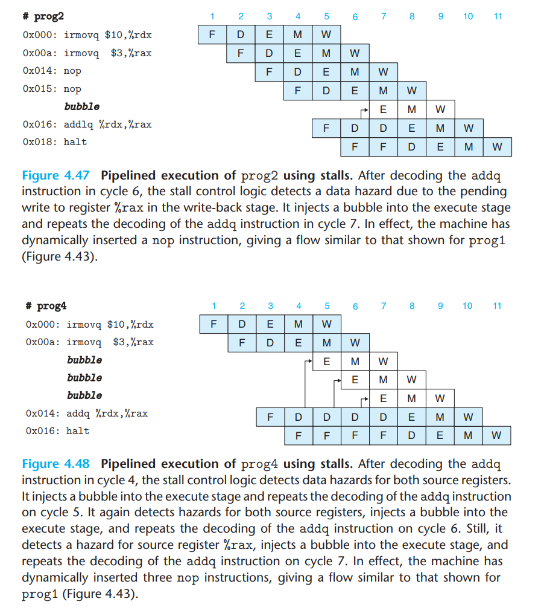
暂停机制易于实现，但性能很低。会触发暂停机制的汇编代码不胜枚举，流水线动辄暂停长达三个周期，严重降低了整体的吞吐量。
与其暂停直到写回阶段完成，不如直接将要写的值传到流水线寄存器 E 作为源操作数。
当 irmovq V, rB 和 OPq rX, rB 相邻时：
当写回阶段有对源操作数寄存器未进行的写时：译码阶段逻辑发现寄存器 %rax 是操作数 valB 的源寄存器，而在写端口 E 上还有一个对 %rax 未进行的写。我们只要将信号 W_valE 作为操作数 valB 的值，就能避免暂停。这就是数据转发（data forwarding），又称旁路（bypassing）。
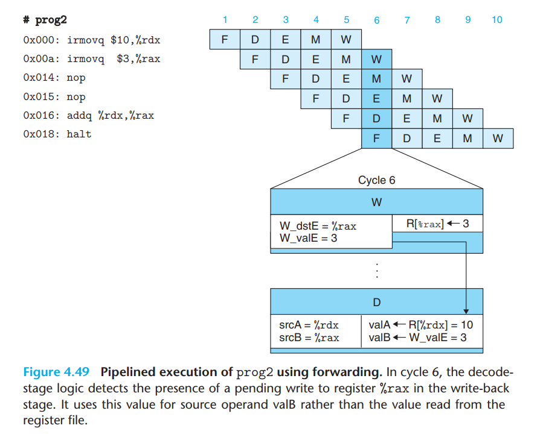
当访存阶段有对源操作数寄存器未进行的写时：译码阶段逻辑发现在写回阶段端口 E 上有对 %rdx 未进行的写，在访存阶段有对 %rax 未进行的写，它会用写回阶段的信号 W_valE 作为操作数 valA，用访存阶段的信号 M_valE 作为操作数 valB。
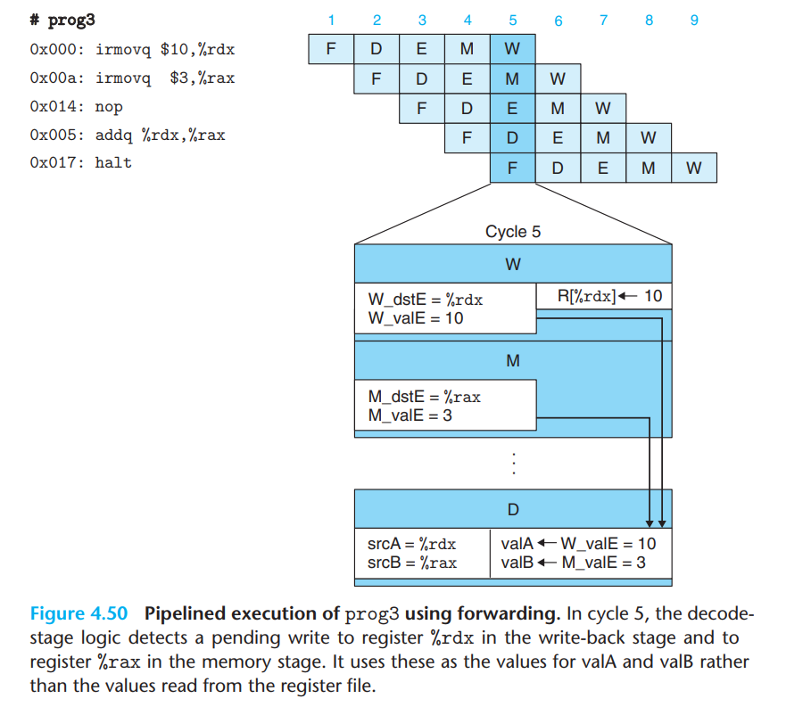
当执行阶段有对源操作数寄存器未进行的写时：译码阶段逻辑发现执行阶段中 ALU 正在计算的值稍后也会写入寄存器 %rax（此外在访存阶段也有对 %rdx 未进行的写）。它可以将访存阶段的信号 M_valE 作为操作数 valA，将 ALU 的输出信号 e_valE 作为操作数 valB。注意，使用 ALU 的输出信号不会造成时序问题：译码阶段只要在时钟周期结束之前产生好信号 valA 和 valB 即可。在下一个时钟周期开始时，ALU 的输出将已经变成合法的。
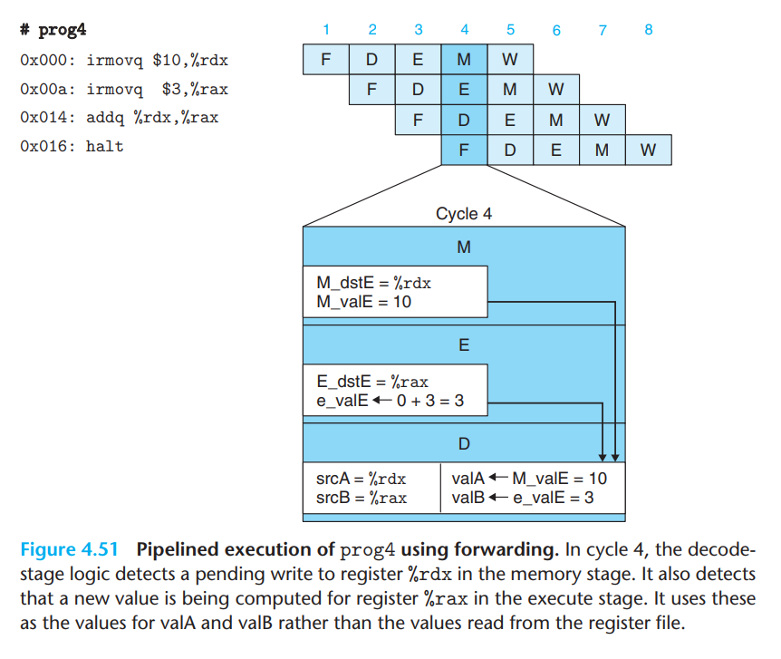
除了转发由 ALU 产生的、目标为寄存器文件的写端口 E 的值 W_valE、M_valE、e_valE 以外，还可以转发从内存中读出的、目标为寄存器文件写端口 M 的值 m_valM、W-valM。
综上，我们一共有五个转发源（W_valE、M_valE、e_valE、m_valM、W-valM）和两个转发目的（valA、valB）。
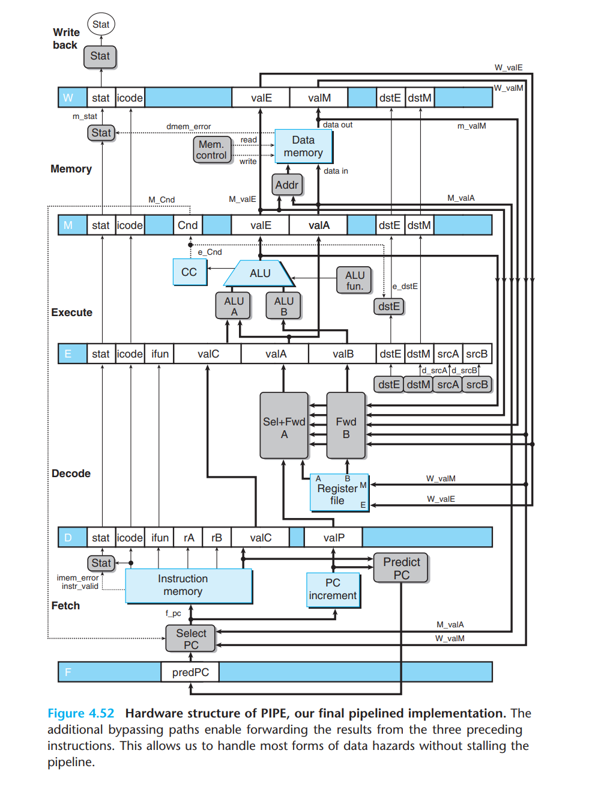
加载 / 使用冒险（load/use hazard）由 mrmovq D(rB), rA 或 popq rA 引起。它不能单纯用转发解决。
我们将暂停和转发结合起来，避免这种数据冒险。当流水线控制逻辑发现译码阶段的指令（addq）需要从内存读出来的结果，它就将译码阶段的指令暂停一个周期，即在执行阶段中插入一个气泡。
用暂停处理加载 / 使用冒险的方法称为加载互锁（load interlock）。加载互锁和转发技术结合起来就足以处理所有数据冒险了。
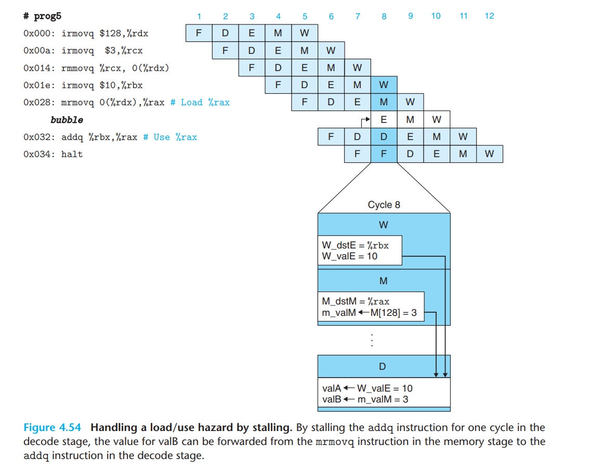
在我们的 PIPE 设计中，控制冒险只会发生在 ret 和预测错误的条件跳转。
对于 ret 指令，考虑以下汇编代码：
irmovq stack, %rsp
call proc
irmovq $10, %rdx
halt
.pos 0x20
proc:
ret
rrmovq %rdx, %rbx // Not executed
.pos 0x30
stack:
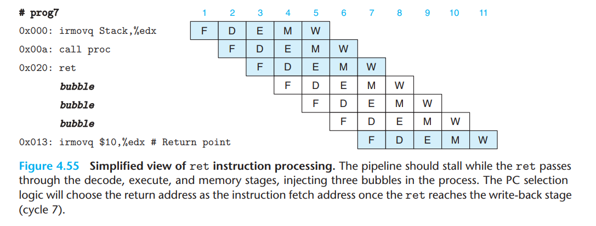
当 ret 指令进入译码阶段后，流水线暂停三个时钟周期，直到 ret 进入写回阶段，PC 选择逻辑将程序计数器设为 ret 的返回地址 valM。
对于预测错误的分支，考虑以下汇编代码：
xorq %rax, %rax
jne target
irmovq $1, %rax
halt
target:
irmovq $2, %rdx
irmovq $3, %rbx
halt
jne 指令进入执行阶段时，分支逻辑发现预测错误，此时已经取出了两条指令。幸运的是，这两条指令不会改变程序员可见的状态，因为它们都未到达执行阶段，没有改变条件码。
因此，我们只需要向 jXX 指令后已取出的两条指令（此时分别处于执行阶段和译码阶段）插入气泡，并取出跳转指令的正确结果指令，就能取消（或称指令排除, instruction squashing）那两条预测错误的指令。
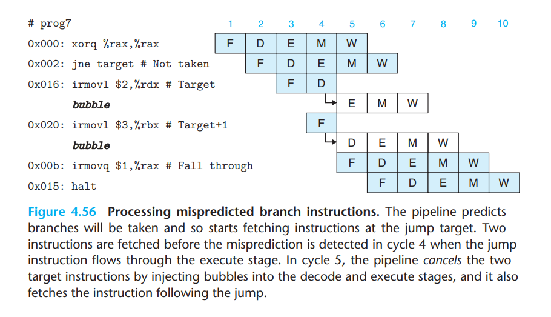
我们的指令集体系结构包括三种异常：
halt 指令导致异常的指令称为异常指令（excepting instruction）。对于访问非法地址的异常，我们想象在非法地址处有一种“虚拟的异常指令”。遇到异常时，处理器应停止并设置状态码，看上去应该是异常指令之前的所有指令正常完成，其后的指令都不应该对程序员可见状态产生影响。更完整的设计还包括调用异常处理程序（exception handler），这是操作系统的一部分。流水线的异常处理需要考虑一些细节：
第一，在流水线化的系统中，可能同时有多条指令会引起异常。例如取指阶段的 halt 和访存阶段的非法地址访问。由流水线中最深的指令引起的异常优先级最高，我们只应该向操作系统报告最深的异常。
第二，分支预测错误会导致两条错误的指令进入流水线，如果其中包含会引发异常的指令，我们不应该报告这个异常。
第三，如果一条指令导致了异常，那么这条指令之后的指令有可能在异常指令完成之前改变了部分状态。例如：
irmovq $1, %rax
xorq %rsp, %rsp // set CC to 100
pushq %rax // illegal write
addq %rax, %rax // (should not be executed) would set CC to 000
pushq 指令会在访存阶段引起异常，但此时 addq 指令已经处于执行阶段，可能会改变条件码。
我们在每个流水线寄存器中包括了一个状态码 Stat，如果一条指令在处理过程中引起了异常，那么这个状态字段就会被设置，指示异常的种类。异常状态和该指令的其他信息继续沿流水线传播，直到写回阶段，在此，流水线控制逻辑发现异常，停止执行。当处于访存或写回阶段的指令导致异常时，流水线控制逻辑必须禁止更新条件码寄存器或数据内存。上例中，控制逻辑发现访存阶段的 pushq 导致了异常，因此应禁止 addq 指令更新条件码寄存器。
总的来说，当流水线中有一个或多个阶段出现异常时，信息只是简单地存放在流水线寄存器的状态字段中。直到异常指令到达写回阶段，异常除了会禁止流水线中后面的指令更新条件码寄存器和内存（即程序员可见状态）以外，不会对流水线的指令流有其他影响。当异常指令到达写回阶段时，程序执行停止，流水线寄存器 W 中的状态码会被记录为程序状态。如果此过程中还有别的异常指令，那么它们的异常状态信息也都会被取消。
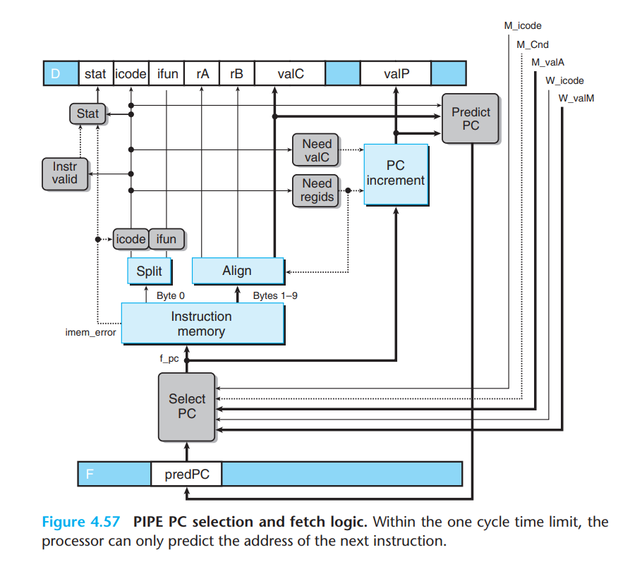
PC 选择逻辑从三个程序计数器源选择：当预测错误的分支进入访存阶段时，会从流水线寄存器 M 的信号 M_valA 中读出该指令 valP 的值。当 ret 指令进入写回阶段时，会从流水线寄存器 W 的信号 W_valM 中读出返回地址。其他情况使用存放在流水线寄存器 F 的信号 F_predPC 读出 PC 的预测值。
// What address should instruction be fetched at
word f_pc = [
// Mispredicted branch. Fetch at incremented PC
M_icode == IJXX && !M_Cnd : M_valA;
// Completion of RET instruction
W_icode == IRET : W_valM;
// Default: Use predicted value of PC
1 : F_predPC;
];
// Determine icode of fetched instruction
word f_icode = [
imem_error : INOP;
1: imem_icode;
];
// Determine ifun
word f_ifun = [
imem_error : FNONE;
1: imem_ifun;
];
// Is instruction valid?
bool instr_valid = f_icode in
{ INOP, IHALT, IRRMOVQ, IIRMOVQ, IRMMOVQ, IMRMOVQ,
IOPQ, IJXX, ICALL, IRET, IPUSHQ, IPOPQ };
// Determine status code for fetched instruction
word f_stat = [
imem_error: SADR;
!instr_valid : SINS;
f_icode == IHALT : SHLT;
1 : SAOK;
];
// Does fetched instruction require a regid byte?
bool need_regids =
f_icode in { IRRMOVQ, IOPQ, IPUSHQ, IPOPQ,
IIRMOVQ, IRMMOVQ, IMRMOVQ };
// Does fetched instruction require a constant word?
bool need_valC =
f_icode in { IIRMOVQ, IRMMOVQ, IMRMOVQ, IJXX, ICALL };
// Predict next value of PC
word f_predPC = [
f_icode in { IJXX, ICALL } : f_valC;
1 : f_valP;
];
和 SEQ 不同，我们将状态的计算分为两部分：取指阶段可以测试由于指令地址越界引起的内存错误、发现非法指令或 halt 指令，但必须在访存阶段才能发现非法数据地址。
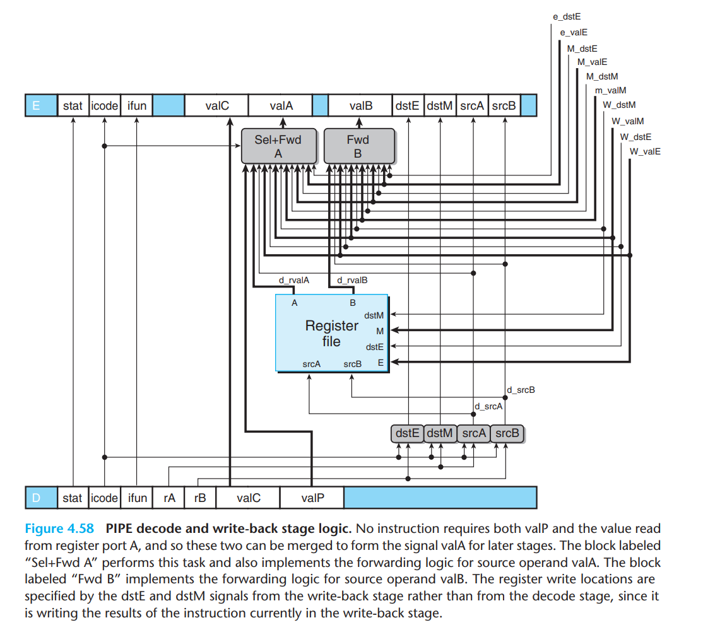
信号 d_valA 的转发源有：
| 数据字 | 寄存器 ID | 源描述 |
|---|---|---|
e_valE |
e_dstE |
ALU 输出 |
m_valM |
M_dstM |
内存输出 |
M_valE |
M_dstE |
访存阶段对端口 E 未进行的写 |
W_valM |
W_dstM |
写回阶段对端口 M 未进行的写 |
W_valE |
W_dstE |
写回阶段对端口 E 未进行的写 |
注意我们合并了信号 valP 和 valA。
// What register should be used as the A source?
word d_srcA = [
D_icode in { IRRMOVQ, IRMMOVQ, IOPQ, IPUSHQ } : D_rA;
D_icode in { IPOPQ, IRET } : RRSP; // For popping from stack in the memory stage
1 : RNONE; // Don't need register
];
// What register should be used as the B source?
word d_srcB = [
D_icode in { IOPQ, IRMMOVQ, IMRMOVQ } : D_rB;
D_icode in { IPUSHQ, IPOPQ, ICALL, IRET } : RRSP; // For computing new rsp in the execute stage
1 : RNONE; // Don't need register
];
// What register should be used as the E destination?
word d_dstE = [
D_icode in { IRRMOVQ, IIRMOVQ, IOPQ} : D_rB;
D_icode in { IPUSHQ, IPOPQ, ICALL, IRET } : RRSP;
1 : RNONE; // Don't write any register
];
// What register should be used as the M destination?
word d_dstM = [
D_icode in { IMRMOVQ, IPOPQ } : D_rA;
1 : RNONE; // Don't write any register
];
// What should be the A value?
// Forward into decode stage for valA
word d_valA = [
D_icode in { ICALL, IJXX } : D_valP; // Use incremented PC
d_srcA == e_dstE : e_valE; // Forward valE from execute
d_srcA == M_dstM : m_valM; // Forward valM from memory
d_srcA == M_dstE : M_valE; // Forward valE from memory
d_srcA == W_dstM : W_valM; // Forward valM from write back
d_srcA == W_dstE : W_valE; // Forward valE from write back
1 : d_rvalA; // Use value read from register file
];
word d_valB = [
d_srcB == e_dstE : e_valE; // Forward valE from execute
d_srcB == M_dstM : m_valM; // Forward valM from memory
d_srcB == M_dstE : M_valE; // Forward valE from memory
d_srcB == W_dstM : W_valM; // Forward valM from write back
d_srcB == W_dstE : W_valE; // Forward valE from write back
1 : d_rvalB; // Use value read from register file
];
上述 HCL 代码中的五个转发源之间存在严格的优先级。其他任何顺序都会使流水线出错。执行阶段的转发源优先于访存阶段的转发源，访存阶段的转发源优先于写回阶段的转发源。在访存或写回阶段，dstM 优先于 dstE，这和 SEQ 写回阶段 M 端口优先于 E 端口同理，保证 popq %rsp 指令被正确执行（也只有 popq %rsp 会关心访存或写回阶段这两个源的优先级）。
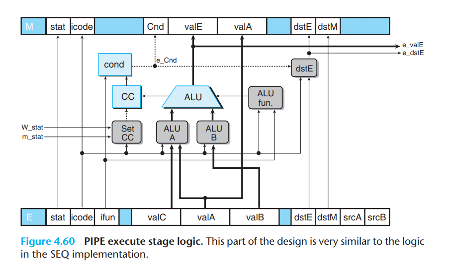
Set CC 的逻辑以信号 m_stat 和 W_stat 作为输入，决定是否更新条件码。它可以发现一条导致异常的指令是否正在通过后面的流水线阶段，决定是否允许更新条件码。
// Select input A to ALU
word aluA = [
E_icode in { IRRMOVQ, IOPQ } : E_valA;
E_icode in { IIRMOVQ, IRMMOVQ, IMRMOVQ } : E_valC;
E_icode in { ICALL, IPUSHQ } : -8;
E_icode in { IRET, IPOPQ } : 8;
// Other instructions don't need ALU
];
// Select input B to ALU
word aluB = [
E_icode in { IRMMOVQ, IMRMOVQ, IOPQ, ICALL,
IPUSHQ, IRET, IPOPQ } : E_valB;
E_icode in { IRRMOVQ, IIRMOVQ } : 0;
// Other instructions don't need ALU
];
// Set the ALU function
word alufun = [
E_icode == IOPQ : E_ifun;
1 : ALUADD;
];
// Should the condition codes be updated?
bool set_cc = E_icode == IOPQ &&
// State changes only during normal operation
!m_stat in { SADR, SINS, SHLT } && !W_stat in { SADR, SINS, SHLT };
// Generate valA in execute stage
word e_valA = E_valA; // Pass valA through stage
// Set dstE to RNONE in event of not-taken conditional move
word e_dstE = [
E_icode == IRRMOVQ && !e_Cnd : RNONE;
1 : E_dstE;
];
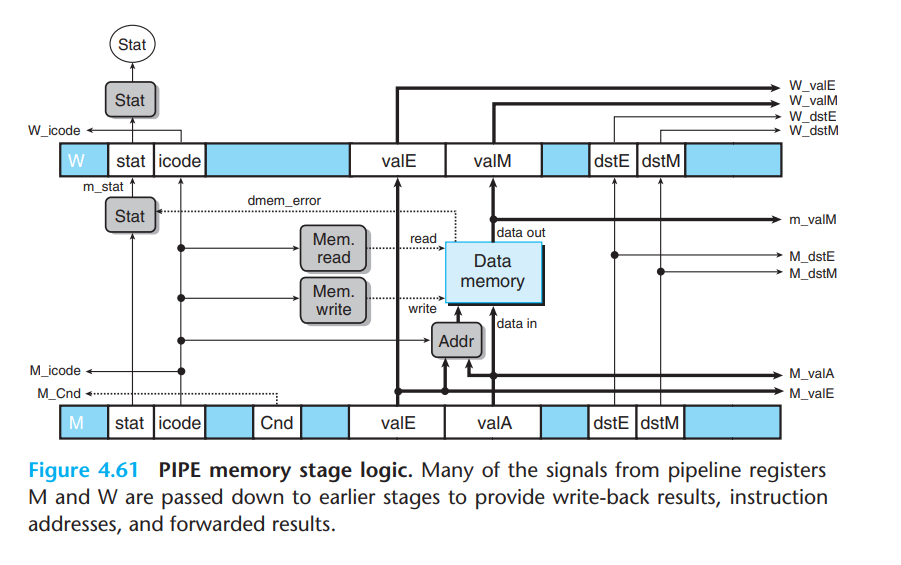
PIPE 中没有 SEQ 中标号 Data 的块。这个块本来是用来在数据源 valP 和 valA 中选择的，它被译码阶段的 Sel+Fwd A 块替代了。
写回阶段的一小部分保持不变。当写回阶段有气泡时，我们希望状态码是 AOK。
// Select memory address
word mem_addr = [
M_icode in { IRMMOVQ, IPUSHQ, ICALL, IMRMOVQ } : M_valE;
M_icode in { IPOPQ, IRET } : M_valA;
// Note that only valA and valE will become mem_addr
// Other instructions don't need address
];
// Set read control signal
bool mem_read = M_icode in { IMRMOVQ, IPOPQ, IRET };
// Set write control signal
bool mem_write = M_icode in { IRMMOVQ, IPUSHQ, ICALL };
///* $begin pipe-m_stat-hcl */
// Update the status
word m_stat = [
dmem_error : SADR;
1 : M_stat;
];
///* $end pipe-m_stat-hcl */
// Set E port register ID
word w_dstE = W_dstE;
// Set E port value
word w_valE = W_valE;
// Set M port register ID
word w_dstM = W_dstM;
// Set M port value
word w_valM = W_valM;
// Update processor status
word Stat = [
W_stat == SBUB : SAOK;
1 : W_stat;
];
流水线控制逻辑处理下面 4 种控制情况：
ret：流水线暂停三个周期，等待 ret 到达写回阶段只有 mrmovq 和 popq 会从内存中读数据，因此只有它们会引起加载 / 使用冒险。当它们处于执行阶段，且需要其目的寄存器的指令处于译码阶段时，我们应将第二条指令阻塞在译码阶段，并在下一个周期向执行阶段插入一个气泡。将流水线寄存器 D 保持为固定状态以实现阻塞，这还可以保证流水线寄存器 F 保持为固定状态，从而使下一条指令会被再取一次。
对于 ret 指令，流水线暂停三个时钟周期，直到 ret 经过访存阶段读出返回地址。我们没有办法在流水线取指阶段插入气泡，取指阶段错误地取出 ret 的下一条指令 rrmovq，但译码阶段被替换成了气泡，直到 3 个时钟周期后 ret 指令的访存阶段结束。
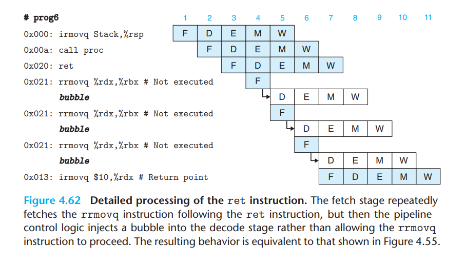
当分支预测错误时，控制逻辑会在译码和执行阶段插入气泡，取消两条错误的已取指令，同时将正确的指令读取到取指阶段。
异常要么在取指阶段被发现，要么在访存阶段被发现。程序状态可能在执行、访存、写回阶段被更新。当取指阶段的异常发生时，我们将异常信息作为指令状态的一部分通过流水线寄存器状态码记录下来，并继续取指、译码、执行，仿佛什么都没发生，直到异常指令到达访存阶段，我们才会采取措施：
| 条件 | 触发条件 |
|---|---|
处理 ret |
IRET in [ D_icode, E_icode, M_icode ] |
| 加载 / 使用冒险 | E_icode in { IMRMOVQ, IPOPQ } && E_dstM in { d_srcA, d_srcB } |
| 预测错误的分支 | E_icode == IJXX && !e_Cnd |
| 异常 | m_stat in { SADR, SINS, SHLT } || W_stat in { SADR, SINS, SHLT } |
每个流水线寄存器有两个控制输入：暂停（stall）和气泡（bubble）。
0，流水线寄存器加载它的输入作为新的状态1 时，禁止更新状态，流水线寄存器保持它的当前状态，这使得指令被阻塞在某个流水线阶段1 时，流水线寄存器状态被设置成某个固定的复位配置（reset configuration），得到一个等效 nop 的状态1 的情况例如，向流水线寄存器 D 插入气泡，我们将 icode 字段置为 INOP；向流水线寄存器 E 中插入气泡，我们将 icode 字段置为 INOP，并将 dstE、dstM、srcA 和 srcB 字段置为 RNONE。
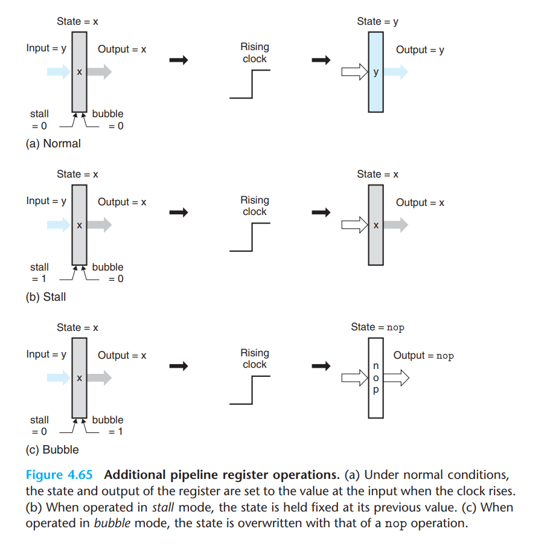
| 条件 | F | D | E | M | W |
|---|---|---|---|---|---|
处理 ret |
暂停 | 气泡 | 正常 | 正常 | 正常 |
| 加载 / 使用冒险 | 暂停 | 暂停 | 气泡 | 正常 | 正常 |
| 预测错误的分支 | 正常 | 气泡 | 气泡 | 正常 | 正常 |
我们考虑特殊控制条件的组合。可以发现，大多数特殊控制条件是互斥的，我们只需要考虑两种情况：
ret 指令紧接着预测错误的 jXX 指令ret 指令紧接着用内存数据更新 %rsp 的指令 (mrmovq D(rB), %rsp 或 popq %rsp)我们“合并”组合 A 条件的控制动作：
| 条件 | F | D | E | M | W |
|---|---|---|---|---|---|
处理 ret |
暂停 | 气泡 | 正常 | 正常 | 正常 |
| 预测错误的分支 | 正常 | 气泡 | 气泡 | 正常 | 正常 |
预测失败 + ret |
暂停 | 气泡 | 气泡 | 正常 | 正常 |
在下一个周期，PC 选择逻辑会选择正确的指令（跳转指令的下一条指令），流水线寄存器 F 发生了什么是没有关系的，这种情况能被正确处理。
| 条件 | F | D | E | M | W |
|---|---|---|---|---|---|
处理 ret |
暂停 | 气泡 | 正常 | 正常 | 正常 |
| 加载 / 使用冒险 | 暂停 | 暂停 | 气泡 | 正常 | 正常 |
加载 / 使用冒险 + ret 简单合并 |
暂停 | 气泡 + 暂停 | 气泡 | 正常 | 正常 |
加载 / 使用冒险 + ret 期望的情况 |
暂停 | 暂停 | 气泡 | 正常 | 正常 |
控制逻辑会试图暂停 ret 来避免加载 / 使用冒险，同时又会因为 ret 而向译码阶段插入一个气泡。显然，插入气泡并不是我们所期望的，我们希望它只是令译码阶段暂停。
| 条件 | F | D | E | M | W |
|---|---|---|---|---|---|
处理 ret |
暂停 | 气泡 | 正常 | 正常 | 正常 |
| 加载 / 使用冒险 | 暂停 | 暂停 | 气泡 | 正常 | 正常 |
| 预测错误的分支 | 正常 | 气泡 | 气泡 | 正常 | 正常 |
| 预测失败 + 跳转 | 暂停 | 气泡 | 气泡 | 正常 | 正常 |
加载 / 使用冒险 + ret |
暂停 | 暂停 | 气泡 | 正常 | 正常 |
| 异常 | 正常 | 正常 | 正常 | 气泡 | 如果 W 有异常, 暂停; 否则正常 |
控制逻辑产生流水线寄存器的暂停和气泡控制信号，并决定是否更新条件码寄存器。
// Should I stall or inject a bubble into Pipeline Register F?
// At most one of these can be true.
bool F_bubble = 0;
bool F_stall =
// Conditions for a load/use hazard
E_icode in { IMRMOVQ, IPOPQ } &&
E_dstM in { d_srcA, d_srcB } ||
// Stalling at fetch while ret passes through pipeline
IRET in { D_icode, E_icode, M_icode };
// Should I stall or inject a bubble into Pipeline Register D?
// At most one of these can be true.
bool D_stall =
// Conditions for a load/use hazard
E_icode in { IMRMOVQ, IPOPQ } &&
E_dstM in { d_srcA, d_srcB };
bool D_bubble =
// Mispredicted branch
(E_icode == IJXX && !e_Cnd) ||
// Stalling at fetch while ret passes through pipeline
// but not condition for a load/use hazard
!(E_icode in { IMRMOVQ, IPOPQ } && E_dstM in { d_srcA, d_srcB }) &&
IRET in { D_icode, E_icode, M_icode };
// Should I stall or inject a bubble into Pipeline Register E?
// At most one of these can be true.
bool E_stall = 0;
bool E_bubble =
// Mispredicted branch
(E_icode == IJXX && !e_Cnd) ||
// Conditions for a load/use hazard
E_icode in { IMRMOVQ, IPOPQ } &&
E_dstM in { d_srcA, d_srcB};
// Should I stall or inject a bubble into Pipeline Register M?
// At most one of these can be true.
bool M_stall = 0;
// Start injecting bubbles as soon as exception passes through memory stage
bool M_bubble = m_stat in { SADR, SINS, SHLT } || W_stat in { SADR, SINS, SHLT };
// Should I stall or inject a bubble into Pipeline Register W?
bool W_stall = W_stat in { SADR, SINS, SHLT };
bool W_bubble = 0;
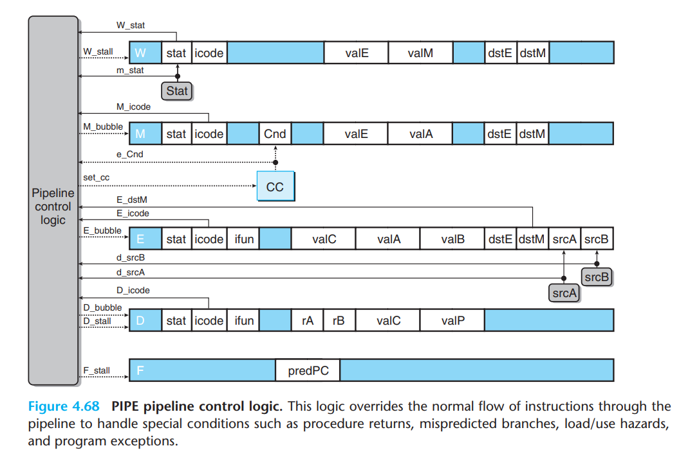
一个加载 / 使用冒险产生一个气泡，分支预测错误两个，返回指令三个。我们用CPI（Cycles Per Instruction，每指令周期数）量化这些处罚对整体性能的影响。它是流水线平均吞吐量的倒数。若假设某段时间内，处理器一共处理了 条指令和 个气泡，那么：
处罚项 表明每执行一条指令平均插入的气泡数。我们可以将它分解成三项：
整数乘法和除法、浮点运算等指令需要多个周期。在一个像 PIPE 这样性能中等的处理器中，浮点加法大约需要 3 到 4 个时钟周期，整数除法需要约 64 个时钟周期。
简单地，我们扩展执行阶段逻辑的功能，令这些指令在执行阶段逗留多个时钟周期，暂停取指和译码阶段。
更复杂地，我们采用独立于主流水线的特殊硬件功能单元。通常，整数乘除法与浮点操作都需要一个独立的功能单元。当这样的指令进入译码阶段时，它就会被发射到特殊单元，主流水线继续处理其他指令。通常，浮点单元本身也是流水线化的。
运用转发、暂停以及流水线控制等技术，我们仍能协调不同单元的操作，保证同步。
我们假设取指单元和数据内存都能在一个时钟周期内读或写内存中任意的位置，还忽略了自我修改代码。
利用高速缓存存储器、翻译后备缓冲器（Translation Look-aside Buffer, TLB），大多数时候确实可能在一个时钟周期内读指令、读写数据。然而有时还会出现高速缓存不命中（miss）的情况。如果能从较高层的高速缓存或处理器主存中找到未命中的数据，流水线会简单地暂停 3 ~ 20 个时钟周期。高速缓存不命中以及随之而来的流水线同步问题都由硬件处理，以便使所需时间尽可能缩短。
有时，被引用的存储器位置实际上在磁盘存储器上。此时硬件会产生缺页（page fault）异常信号。这导致处理器调用操作系统的异常处理程序代码，这将发起一个从磁盘到主存的传送操作。完成后，操作系统返回到原先的程序，导致缺页的指令被重新执行。让硬件调用操作系统例程，然后操作系统例程又将控制返回给硬件，使得硬件和系统软件在处理缺页时协同工作。访问磁盘需要数百万个时钟周期，因此 OS 缺页中断处理程序的开销是可以忽略不计的。
妨碍优化的因素（optimization blocker）：严重依赖于执行环境的程序行为
void twiddle1(long* xp, long* yp) {
*xp += *yp;
*xp += *yp;
}
void twiddle2(long* xp, long* yp) {
*xp += 2 * *yp;
}
第一个过程效率更低，它需要 6 次访存，而第二个过程只需要 3 次。
然而因为可能存在内存别名引用（memory aliasing），即 xp == yp，此时两个过程的行为将不一致，所以编译器无法将第一个过程优化为第二个。
*q = 3000;
*p = 1000;
t1 = *q; // t1 的值依赖于 p 和 q 是否相等
// 编译器无法确定两个指针是否指向同一位置
// 因此优化策略受到限制
函数调用也是妨碍优化的因素。编译器一般不会试图判断函数是否有副作用，它倾向于保持所有的函数调用不变。
long f();
long func1() { return f() + f(); }
long func2() { return 2 * f(); }
编译器无法将 func1 优化为 func2，因为 f 可能有副作用。
可以用内联函数替换实现对函数调用的优化。但这会为 GDB 调试和代码剖析带来麻烦。
引入每元素的周期数（Cycles Per Element, CPE）度量程序性能。
void psum1(float a[], float p[], long n) {
p[0] = a[0];
for (long i = 1; i < n; i++)
p[i] = p[i-1] + a[i];
}
void psum2(float a[], float p[], long n) {
p[0] = a[0];
for (long i = 1; i < n - 1; i += 2) {
float mid_val = p[i-1] + a[i];
p[i] = mid_val;
p[i+1] = mid_val + a[i+1];
}
// For even n, finish remaining element p[n-1]
if (i < n)
p[i] = p[i-1] + a[i];
}
许多过程含有在一组元素上迭代的循环，例如上图计算前缀和的两个函数。psum1 每次迭代计算结果向量的一个元素，psum2 利用循环展开（loop unrolling），每次迭代计算两个元素。
以时钟周期为单位，两个函数的运行时间分别近似于 和 。系数 和 称为 CPE 的有效值，较小的 CPE 优于较大的 CPE。
向量数据结构：
typedef long data_t; // Also int, float, double
typedef struct {
long len;
data_t* data;
} vec_rec, *vec_ptr;
/* Create vector of length len */
vec_ptr new_vec(long len) {
vec_ptr res = (vec_ptr)malloc(sizeof(vec_rec));
data_t* data = NULL;
if (!res) return NULL;
res->len = len;
if (len > 0) {
data = (data_t*)calloc(len, sizeof(data_t));
if (!data) {
free((void*)res);
return NULL;
}
}
res->data = data;
return res;
}
/*
* Retrieve vector element and store at dest.
* Return 0 (out of bounds) or 1 (successful)
*/
int get_vec_element(vec_ptr v, long index, data_t* dest) {
if (index < 0 || index >= v->len) return 0;
*dest = v->data[index];
return 1;
}
long vec_length(vec_ptr v) { return v->len; }
作为一个优化示例，考虑一个函数 combine1，它将一个向量中的所有元素合并为一个值：
#define IDENT 0
#define OP +
void combine1(vec_ptr v, data_t *dest) {
long i;
*dest = IDENT;
for (i = 0; i < vec_length(v); i++) {
data_t val;
get_vec_element(v, i, &val);
*dest = *dest OP val;
}
}
将对 vec_length 的调用移出循环测试，可以避免对它的重复调用。这被称为代码移动（code motion）。
void combine2(vec_ptr v, data_t *dest) {
long i;
long len = vec_length(v); // Move vec_length out of loop
*dest = IDENT;
for (i = 0; i < len; i++) {
data_t val;
get_vec_element(v, i, &val);
*dest = *dest OP val;
}
}
编译器会尝试代码移动，然而它必须对函数调用非常小心，因此程序员需要显式地进行这一工作。
combine2 中对函数 get_vec_element 的调用会检查索引越界，这是不必要的，因为显然所有的 i 都是合法索引。我们增加一个函数 get_vec_start，它返回向量的起始地址，用指针直接访问向量元素。这损害了程序的模块性，提高了耦合性，但理论上提高了性能。
data_t* get_vec_start(vec_ptr v) { return v->data; }
void combine3(vec_ptr v, data_t *dest) {
long i;
long len = vec_length(v);
data_t* data = get_vec_start(v);
*dest = IDENT;
for (i = 0; i < len; i++) {
*dest = *dest OP data[i];
}
}
然而性能并没有明显提升，反而还略有下降。内循环中的其他操作形成了瓶颈，它对性能的负面影响超过了反复进行 get_vec_element 的边界检查的开销。
当 data_t 为 double，OP 为乘法时，内循环的 x86-64 代码：
// dest in %rbx, data+i in %rdx, data+length in %rax
.L17:
vmovsd (%rbx), %xmm0 // read from mem
vmulsd (%rdx), %xmm0, %xmm0 // mult from mem
vmovsd %xmm0, (%rbx) // write back to mem
addq $8, %rdx
cmpq %rax, %rbx
jne .L17
每次迭代时从内存中读出 (%rbx)，然后再将新的值写回 (%rbx)，这很浪费。
用临时变量 acc 替换不必要的内存引用 *dest：
void combine4(vec_ptr v, data_t *dest) {
long i;
long len = vec_length(v);
data_t* data = get_vec_start(v);
data_t acc = IDENT;
for (i = 0; i < len; i++) {
acc = acc OP data[i]; // Only one mem ref per iteration
}
*dest = acc;
}
这显著提高了性能。
实际上 combine3 和 combine4 的行为可能不一致，例如当目标位置 dest 被设定为向量中的位置时（即出现内存别名引用）。这也是编译器没有将前者优化为后者的原因。
开 O2 后，combine3 的性能得到提升，利用寄存器 %xmm0 的值等于 (%rbx) 这一事实，去掉了一条 vmovsd 指令，但仍然不及 combine4：
// Compiled O2
// dest in %rbx, data+i in %rdx, data+length in %rax
.L17:
vmulsd (%rdx), %xmm0, %xmm0 // mult from mem
addq $8, %rdx
cmpq %rax, %rbx
vmovsd %xmm0, (%rbx) // write back to mem
jne .L17
实际的处理器往往同时对多条指令求值，称为指令集并行。
当一系列指令必须按照严格顺序执行时（一条未完，另一条不能开始），就会遇到延迟界限（latency bound）。它会限制程序性能。吞吐量界限（throughput bound）刻画处理器功能单元的原始计算能力，它是性能的终极限制。
超标量（superscalar）：一个时钟周期内可以执行多个操作，而且是乱序（out-of-order）的。
整个设计分为指令控制单元（Instruction Control Unit, ICU）和执行单元（Execation Unit, EU）。前者从内存中读出指令序列，并根据指令序列生成一组针对程序数据的基本操作；后者执行这些操作。
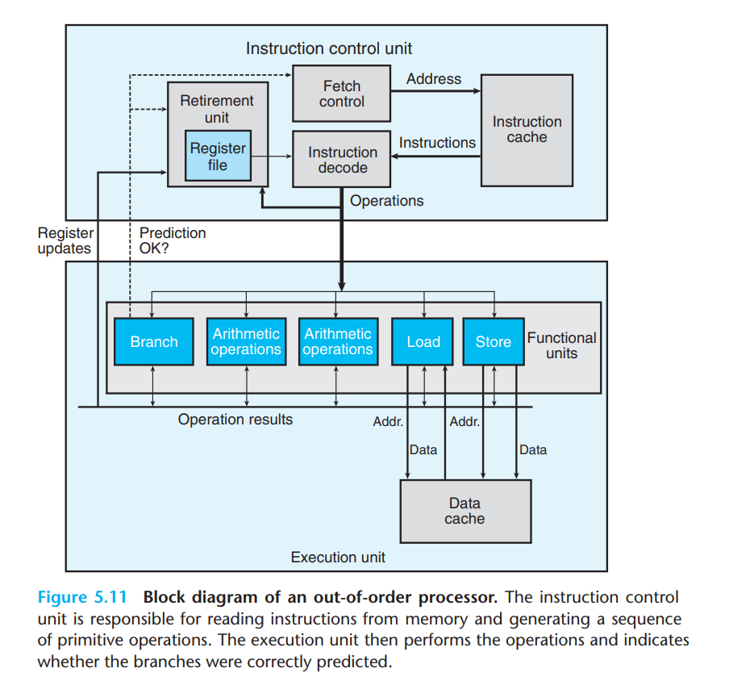
ICU 从指令高速缓存（instruction cache）读取指令。通常，ICU 会在很早之前取指，保证有充足的时间译码，并把操作发送到 EU。对于分支预测，处理器使用投机执行（speculative execution）技术，它会取出预测分支会跳到的地方的指令，对它们译码，甚至执行，若过后确定分支预测错误，会将状态重新设定回分支点的状态，并开始取出执行另一个方向上的指令。分支预测集成在取指控制的块中。指令译码逻辑接收实际的指令，将它们转换为一组基本操作（微操作）。这些操作被发送到 EU，EU 将其分派到各个功能单元加以执行。
加载单元和存储单元各有一个加法器完成地址计算，它们通过数据高速缓存（data cache）访问数据内存。数据高速缓存和退役单元是执行结果与程序寄存器和数据内存之间的一层屏障，它们保证分支预测错误造成的错误指令的执行结果不会写入寄存器和数据内存。如果分支预测错误，EU 会丢弃分支点之后计算出来的结果，并发信号给分支单元，指出分支预测错误和正确的分支目的。不同功能单元的功能往往有重合，例如 Intel Core i7 Haswell 参考机有 8 个功能单元，其中 4 个可以执行整数操作，2 个可以执行加载操作，2 个可以执行浮点乘法。
ICU 中，退役单元（retirement unit）记录正在进行的处理，控制寄存器文件的更新。译码时，关于指令的信息被放在一个 FIFO 队列。一旦一条指令被完成，且所有引起此指令的分支点被确认为预测正确，那么这条指令就可以退役（retired）了，所有对程序寄存器的更新也就可以被执行了。如果引起此指令的某个分支点预测错误，那么这条指令就会被清空（flushed），它的计算结果被丢弃。
各种信息可以在执行单元之间传送（数据转发），最常见的机制是寄存器重命名（register renaming）。当一条更新寄存器 r 的指令译码时，产生标记 t，条目 (r, t) 被加入到一张重命名表中。重命名表包含有未进行的写操作的寄存器。当随后以 r 为操作数的指令译码时，发送到执行单元的操作会包含 t 作为操作数源的值。当某个执行单元完成第一个操作时，会生成结果 (v, t)，所有等待 t 作为源的操作就可以使用 v 作为源值了。
延迟（latency）：完成运算所需的总时间
发射时间（issue time）：两个连续的同类型的运算之间需要的最小时钟周期数
容量（capacity）：能够执行该运算的功能单元的数量
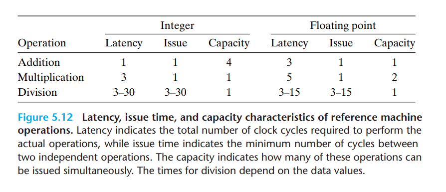
发射时间为 的功能单元是完全流水线化（fully pipelined）的，它表明每个时钟周期都可以开始一个新的运算。除法器不是完全流水线化的，它的发射时间等于延迟，这意味着在开始新运算之前，除法器必须完成整个除法。由于不同的除法计算需要的步骤不一样，所以除法的发射和延迟是一个范围。
最大吞吐量：容量与发射时间的比值。
| 界限 | 整数加法 | 整数乘法 | 浮点加法 | 浮点乘法 |
|---|---|---|---|---|
| 延迟界限 | 1.00 | 3.00 | 3.00 | 5.00 |
| 吞吐量界限 | 0.50 | 1.00 | 1.00 | 0.50 |
延迟界限给出了每条指令不重叠执行时的最小 CPE 值。
吞吐量界限根据功能单元产生结果的最大速率给出了 CPE 的最小界限。虽然整数加法的吞吐量是 ，但由于需要从内存读数据，而每个时钟周期只能读两个数据，因此吞吐量界限是 .
| 函数 | 整数加法 | 整数乘法 | 浮点加法 | 浮点乘法 |
|---|---|---|---|---|
combine4 |
1.27 | 3.01 | 3.01 | 5.01 |
| 延迟界限 | 1.00 | 3.00 | 3.00 | 5.00 |
| 吞吐量界限 | 0.50 | 1.00 | 1.00 | 0.50 |
检查一下 combine4 的 CPE 测量值，可以发现：除了整数加法的情况，测量值与处理器的延迟界限是一致的。这表明函数性能取决于求和 / 乘积运算。
计算 个元素的合并运算需要约 个时钟周期，其中 是合并运算的延迟界限， 表示调用函数、初始化以及终止循环的开销。因此，CPE 就等于 。
// Inner loop of combine4, data_t = double, OP = *
// acc in %xmm0, data+i in %rdx, data+length in %rax
.L25:
vmulsd (%rdx), %xmm0, %xmm0 // acc *= data[i]
addq $8, %rdx // ++i
cmpq %rax, %rdx
jne .L25
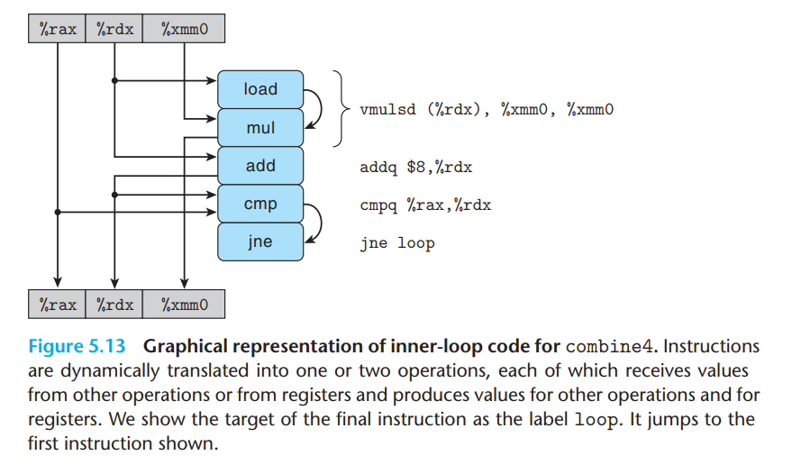
我们将循环代码片段中访问的寄存器分为四类：
%rax%rdx %xmm0循环寄存器之间的操作链决定了性能的瓶颈。
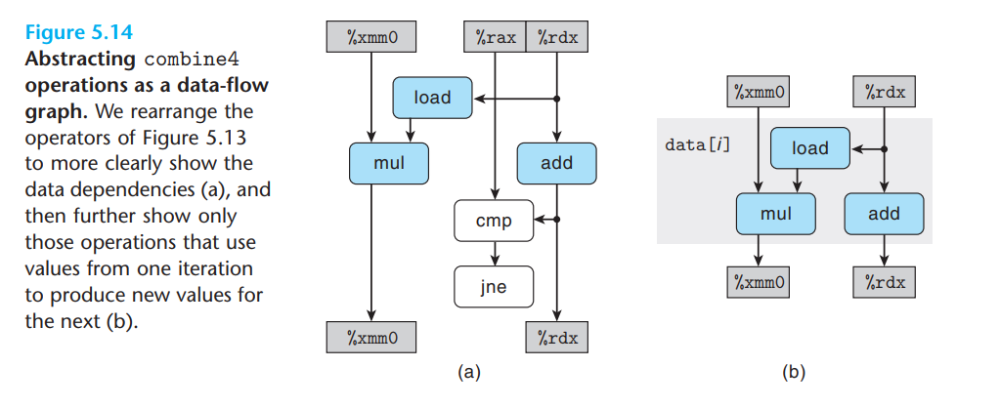
5-14a 中，不属于循环寄存器间的相关链的操作被标注为白色，例如 cmp 和 jne，我们假设它们被完成得足够快，不影响性能。去掉这些操作后，我们得到 5-14b，它只显示一次迭代中循环寄存器之间的数据相关。
将 次迭代的数据流表示串联起来，就得到图 5-15。程序有两条数据相关链，由于浮点乘法的延迟比整数加法大，所以左边的链是关键路径（critical path）。
除了整数加法的情况以外，combine4 的关键路径长度等于 ，这和之前的测试吻合。如何对程序做变换，使得唯一的限制变成吞吐量界限？
循环展开的上限是 ，每次迭代对索引 i 到 i+k-1 的 个元素进行计算，然后令索引 i += k。最后，对剩余的元素进行计算。
/* 2 * 1 loop unrolling */
void combine5(vec_ptr v, data_t* dest) {
long i;
long len = vec_length(v);
long limit = len - 2 + 1;
data_t* data = get_vec_start(v);
data_t acc = IDENT;
/* Combine 2 elements at a time */
for (i = 0; i < limit; i += 2) {
acc = (acc OP data[i]) OP data[i+1];
}
/* Finish any remaining elements */
for (; i < len; i++) {
acc = acc OP data[i];
}
*dest = acc;
}
| 函数 | 整数加法 | 整数乘法 | 浮点加法 | 浮点乘法 |
|---|---|---|---|---|
combine4 |
1.27 | 3.01 | 3.01 | 5.01 |
combine5 |
1.01 | 3.01 | 3.01 | 5.01 |
| 延迟界限 | 1.00 | 3.00 | 3.00 | 5.00 |
| 吞吐量界限 | 0.50 | 1.00 | 1.00 | 0.50 |
整数加法进步明显，但其他情况没有改进。
.L35:
vmulsd (%rax, %rdx, 8), %xmm0, %xmm0
vmulsd 8(%rax, %rdx, 8), %xmm0, %xmm0
addq $2, %rdx
cmpq %rdx, %rbp
jg .L35
可以看到，性能没有根本提升的原因在于 gcc 生成的代码中，每次迭代的两次乘法仍然不是并行的，它们之间存在数据相关，因此关键路径上仍然有 个乘法操作。
只要优化等级够高，编译器就会自动进行循环展开。
加法和乘法的单元是完全流水线化的，然而我们囿于数据相关，并未利用这一点。
/* 2 * 2 loop unrolling */
void combine6(vec_ptr v, data_t* dest) {
long i;
long len = vec_length(v);
long limit = len - 1;
data_t* data = get_vec_start(v);
data_t acc0 = IDENT;
data_t acc1 = IDENT;
/* Combine 2 elements at a time w/ 2 acculators */
for (i = 0; i < limit; i += 2) {
acc0 = acc0 OP data[i]; // even indices
acc1 = acc1 OP data[i+1]; // odd indices
}
/* Finish any remaining elements */
for (; i < len; i++) {
acc0 = acc0 OP data[i];
}
/* Combine the two accumulators */
*dest = acc0 OP acc1;
}
我们既做循环展开，又做两路并行，这提高了所有情况的性能，并且打破了延迟界限：
| 函数 | 整数加法 | 整数乘法 | 浮点加法 | 浮点乘法 |
|---|---|---|---|---|
combine4 |
1.27 | 3.01 | 3.01 | 5.01 |
combine5 |
1.01 | 3.01 | 3.01 | 5.01 |
combine6 |
0.81 | 1.51 | 1.51 | 2.51 |
| 延迟界限 | 1.00 | 3.00 | 3.00 | 5.00 |
| 吞吐量界限 | 0.50 | 1.00 | 1.00 | 0.50 |
关键路径的长度缩小到了 。
将循环展开 次，并且并行地累积 个值，就得到 循环展开。 足够大时，程序在所有情况下几乎都能达到吞吐量界限（这需要使能够执行运算操作的功能单元的流水线始终是满的）。对延迟为 ，容量为 的操作，这要求 。
对于整数运算，combine6 的结果和 combine5 一致。然而对于浮点运算，由于结合律不成立，combine6 的结果和 combine5 可能不一致（偶数索引都极大，奇数索引都极小）。有些编译器会对整数运算做类似的变换，但大部分编译器不会对浮点运算做此类变换。
/* 2 * 1a loop unrolling */
void combine7(vec_ptr v, data_t* dest) {
long i;
long len = vec_length(v);
long limit = len - 1;
data_t* data = get_vec_start(v);
data_t acc = IDENT;
for (i = 0; i < limit; i += 2) {
// different from combine5, which is
// acc = (acc OP data[i]) OP data[i+1];
acc = acc OP (data[i] OP data[i+1]);
}
/* Finish any remaining elements */
for (; i < len; i++) {
acc = acc OP data[i];
}
*dest = acc;
}
它与 combine5 的唯一区别只在括号的位置，这被称为重新结合变换（reassociation transformation），它可以带来意想不到的性能提升：整数加法的性能与 combing5 相当，而其他情况的性能与 combine6 相当，是 combing5 的两倍。
| 函数 | 整数加法 | 整数乘法 | 浮点加法 | 浮点乘法 |
|---|---|---|---|---|
combine4 |
1.27 | 3.01 | 3.01 | 5.01 |
combine5 |
1.01 | 3.01 | 3.01 | 5.01 |
combine6 |
0.81 | 1.51 | 1.51 | 2.51 |
combine7 |
1.01 | 1.51 | 1.51 | 2.51 |
| 延迟界限 | 1.00 | 3.00 | 3.00 | 5.00 |
| 吞吐量界限 | 0.50 | 1.00 | 1.00 | 0.50 |
重新结合变换减少了数据相关，只有 acc 与 data[i] OP data[i+1] 之间的 mult 运算存在迭代中的数据相关。本次迭代中 data[i] 和 data[i+1] 之间的 mult 不必等到上一次迭代结束才能执行，即下次迭代的第一个乘法和本次迭代的第二个乘法是重叠执行的。
循环展开的 CPE 随着 增大，也会趋近于吞吐量界限。
对于浮点，编译器一般不会做重新结合变换。
double aprod(double a[], long n) {
long i;
double x, y, z;
for (i = 0; i < n - 2; i += 3) {
x = a[i]; y = a[i+1]; z = a[i+2];
// How to reassociate?
r = r * x * y * z;
}
for (; i < n; i++) {
r = r * a[i];
}
return r;
}
r = ((r * x) * y) * z; // 关键路径有 3 个乘法
r = (r * (x * y)) * z; // 关键路径有 2 个乘法
r = r * ((x * y) * z); // 关键路径有 1 个乘法
r = r * (x * (y * z)); // 关键路径有 1 个乘法
r = (r * x) * (y * z); // 关键路径有 2 个乘法
// x, y, z 之间不会有数据相关，主要目的是消除 r 的数据相关
Intel 在 1999 年引入了 SSE 指令（Streaming SIMD Extension, 流 SIMD 扩展），其中 SIMD 即 Single-Instruction, Multiple-Data。SSE 历经几代，目前最新版本为 AVX（Advanced Vector Extension, 高级向量扩展）。
SIMD 执行模型是用单条指令操作整个向量数据，这些向量保存在向量寄存器（vector register）中，名字为%ymm0~%ymm15。目前的 AVX 向量寄存器长 32 字节，可保存整数或浮点数。AVX 指令可以对这些寄存器执行向量操作，如并行执行 8 组或 4 组数值的加法或乘法。
gcc 对 C 的扩展支持向量操作，使用向量操作可以获得比combine6更高的性能（向量操作有着不同的吞吐量界限）。
如果并行度 超过了可用的寄存器数量，那么编译器会诉诸溢出（spilling），将一些临时值存放在内存上（一般是运行时堆栈）。因此， 的循环展开的性能可能比 的循环展开差。
三目运算符是好的。
/* CPE = 13.5 */
void minmax1(long a[], long b[], long n) {
long i;
for (i = 0; i < n; i++) {
if (a[i] > b[i]) {
long t = a[i];
a[i] = b[i];
b[i] = t;
}
}
}
/* CPE = 4.0 */
void minmax2(long a[], long b[], long n) {
long i;
for (i = 0; i < n; i++) {
long min = a[i] < b[i] ? a[i] : b[i];
long max = a[i] < b[i] ? b[i] : a[i];
a[i] = min;
b[i] = max;
}
}
参考机有两个加载单元，每个可以保存 72 个未完成的读请求。它还有一个存储单元，可以保存 42 个写请求。它们通常可以每个时钟周期开始一个操作。
如果每个被计算的元素都需要加载 个值，那么 CPE 不可能小于 ，其中 为加载单元的数量。
之前的程序中，加载操作的延迟不会对 CPE 产生影响。如果设计一个遍历链表的程序，那么加载操作的延迟就会对性能产生影响。
long list_len(list_ptr ls);
// Inner loop of list_len:
.L3
addq $1, %rax
movq (%rdi), %rdi // bottleneck
testq %rdi, %rdi
jne .L3
// CPE == 4.00, 和 L1 Cache 的访问时间一致
没有加载，只有存储的操作不会产生数据相关。
写 / 读相关（write/read dependency）：一个内存读的结果依赖于一个最近的内存写。它会导致性能下降。
存储缓冲区包含已经被发射到存储单元但还未完成的存储操作的地址及数据。加载操作会先检查存储缓冲区，若地址匹配，则从缓冲区取出对应数据作为结果（类似转发）。
void write_read(long *src, long *dest, long n) {
long cnt = n;
long val = 0;
while (cnt) {
*dst = val;
val = *src + 1;
cnt--;
}
}
write_read(&a[0], &a[1], 3); // A
write_read(&a[0], &a[0], 3); // B
A 没有写 / 读相关，B 有写 / 读相关。
// Inner loop of write_read
// src in %rdi, dst in %rsi, val in %rax
.L3：
movq %rax, (%rsi)
movq (%rdi), %rax
addq $1, %rax
subq $1, %rdx
jne .L3
存储操作被分为 s_addr 和 s_data，前者在存储缓冲区建立条目并设置地址，后者设置此条目的数据字段。
s_addr 操作的地址计算必须在 s_data 之前；load 操作必须检查所有未完成存储操作的地址，因此也必须在 s_addr 之后。
s_data 和 load 之间也可能有数据相关：如果 load 和 s_data 操作的地址相同，那么 load 操作必须位于 s_data 操作之后。
对于 A，源和目的地址不同，load 和 s_data 之间没有数据相关，唯一的关键路径是 cnt-- 构成的；对于 B，源和目的地址相同，这使得 s_data 和 load 之间产生了数据相关，关键路径成为了存储、加载和增加数据的链。
局部性（locality）：具有良好局部性的程序倾向于多次访问相同 / 邻近的数据项集合，因此性能更好。
随机访问存储器（Random Access Memory, RAM）分为静态的（static, SRAM）和动态的（dynamic, DRAM）。
SRAM 比 DRAM 更快，但也更贵。
每个位被存储在一个双稳态的（bistable）存储器单元。每个单元用一个六晶体管电路实现，只要有电，它就可以无限期地保持在两个不同的电压配置（configuration）或状态（state）之一，类似于一个倒转钟摆。倒转钟摆有左稳态和右稳态，以及一个中间的亚稳态。虽然钟摆也可以保持在中间的亚稳态，但任何细微的扰动都会使它倒回左或右稳态。
即使有干扰扰乱电压，当干扰消除时，电路就会回到稳定值，但断电后，SRAM 的信息也会丢失。
SRAM 一般用作高速缓存存储器，一般不会超过数兆字节
每个位存储为对一个小电容（ 毫微微法拉， 法拉）的充电。每个单元由一个电容和一个访问晶体管组成，因此可以制作得很密集。
DRAM 对干扰敏感，电容的电压被扰乱后，它就永远无法恢复了。光会导致电容电压改变，数码相机和摄像机的传感器本质上也是 DRAM 阵列。
DRAM 需要刷新。DRAM 单元可能在 毫秒内失去电荷（幸运的是，时钟周期是以纳秒衡量的），内存系统必须周期性地通过读出，然后重写刷新内存的每一位。有些系统也使用纠错码，例如将 64 位字编码为 72 位。
| 存储器 | 每位晶体管数 | 相对访问时间 | Persistent? | Sensitive? | 相对花费 | 应用 |
|---|---|---|---|---|---|---|
| SRAM | 6 | 是 | 否 | 高速缓存存储器 | ||
| DRAM | 1 | 否 | 是 | 主存、图形系统的帧缓冲区 |
SRAM 使用的晶体管多于 DRAM，因而密集度更低。
DRAM 芯片中有 个超单元（supercell），每个超单元由 个 DRAM 单元组成，可以存储 位信息。 的 DRAM 总共存储 位信息。
下图展示了一个 的 DRAM 芯片的组织。 个超单元被组织成 行 列的矩形阵列。每个超单元有形如 的地址。信息通过称为引脚（pin）的外部连接器流入和流出芯片。每个引脚携带 1 位信号。
8 个 data 引脚：传送一个字节到芯片或从芯片传出一个字节
2 个 addr 引脚：携带 2 位的行和列超单元地址
还有其他的携带控制信息的引脚
每个 DRAM 芯片被连接到称为内存控制器（memory controller）的电路。这个电路可以一次传送 位到每个 DRAM 芯片，或从每个 DRAM 芯片传出 位。
内存控制器将行地址 RAS（Row Access Strobe，行访问选通脉冲）和列地址 CAS（Column Access Strobe，列访问选通脉冲）先后发送到 DRAM，DRAM 把超单元的内容发回控制器。RAS 和 CAS 请求共享相同的 DRAM 地址引脚
读超单元 时，内存控制器先从地址引脚发送行地址 ，DRAM 会将整个第 行复制到内部行缓冲区。接着，内存控制器发送列地址 ，DRAM 从行缓冲区中取出超单元 的 位内容，通过 data 引脚返回给内存控制器。
DRAM 被组织成二位阵列而不是线性数组是为了降低芯片上地址引脚数量，其缺点是必须分两步发送地址，增加了访问时间。
DRAM 芯片被封装在内存模块（memory module），它插在主板扩展槽上。
Core i7 系统使用 240 引脚的双列直插内存模块（Dual Inline Memory Module, DIMM）以 64 位为块传送数据进出内存控制器
例如，下面的一个内存模块用 8 个 64 Mbit（）的 DRAM 芯片存储 64 MB。8 个芯片编号为 。每个超单元存储主存的一个字节，用地址为 的 8 个超单元表示主存中特定地址 A 处的 64 位字。
取出内存地址 A 处的一个字：内存控制器将 A 转换为超单元地址 发送给 A 所在的内存模块，内存模块将 和 广播到每个 DRAM，每个 DRAM 输出它的超单元 的 8 位内容，模块电路将 8 个输出收集并合并成一个 64 位字，返回给内存控制器。
多个内存模块连接到内存控制器，就可以聚合成主存。
基于传统 DRAM 的改进。
快页模式 DRAM（Fast Page Mode DRAM, FPM DRAM）：传统 DRAM 将一整行超单元复制到其内部行缓冲区，只使用其一，丢弃剩余的。FPM DRAM 允许暂时保留行缓冲区的内容。为了读出同一行的 4 个超单元，内存控制器可以发送第一个 RAS/CAS 请求，后面跟三个 CAS 请求。初始的 RAS/CAS 请求将指定行复制到行缓冲区，并返回第一个要读取的超单元，后三个 CAS 请求直接中行缓冲区获得要读的超单元。
扩展数据输出 DRAM（Extended Data Out DRAM, EDO DRAM）：FPM DRAM 的增强，允许各个 CAS 信号在时间上靠得更紧密
同步 DRAM（Synchronous DRAM, SDRAM）：常规的、FPM DRAM、EDO DRAM 与内存控制器通信时使用的是一组显式的控制信号，因此可以说是异步的。SDRAM 用与驱动内存控制器相同的外部时钟信号的上升沿代替许多这种控制信号，提高输出速度
双倍数据速率同步 DRAM（Double Data-Rate Synchronous DRAM, DDR SDRAM）：SDRAM 的增强。使用两个时钟沿作为控制信号，使速度翻倍。不同类型的 DDR SDRAM 是用提高有效带宽的很小的预取缓冲区的大小划分的：DDR（2 位）、DDR2（4 位）、DDR3（8 位）
视频 RAM（Video RAM, VRAM）：用于图形系统的帧缓冲区。与 FPM DRAM 类似，主要区别是：VRAM 输出是通过依次对内部缓冲区的整个内容进行移位得到的；VRAM 允许对内存并行地读和写，系统可以在写的同时用帧缓冲区中的像素读（刷新屏幕）
直到 1995 年，大部分 PC 都使用 FPM DRAM。1996~1999 年，EDO DRAM 在市场上占据了主导，取代了 FPM DRAM。SDRAM 最早出现于 1995 年的高端系统，到 2002 年，大多数 PC 都已经采用了 SDRAM 和 DDR SDRAM。到 2010 年，大多数服务器和桌面系统都是用 DDR3 SDRAM 构造的。
断电后，DRAM 和 SRAM 的信息会丢失，所以它们是易失（volatile）的。非易失性存储器（nonvolatile memory）可以保持信息，即使断电也不会丢失。
虽然有的 ROM 既可以读也可以写，但是它们整体都被称为只读存储器（Read-Only Memory, ROM）。ROM 是以能够被重编程（写）的次数，以及对它们重编程所用的机制区分的。
可编程 ROM（Programmable ROM, PROM）：只能被编程一次。每个存储器单元有一种熔丝（fuse），只能用高电流熔断一次
可擦写可编程 ROM（Erasable Programmable ROM, EPROM）：有一个透明的石英窗口，允许光到达存储单元。紫外线光照射进窗口，EPROM 单元就被清零。对它的编程（写 1）通过一种特殊设备完成。可以被擦除和重编程约 次。
电子可擦除 PROM（Electrically Erasable PROM, EEPROM）：EPROM 的增强，不需要一个物理上独立的编程设备，EEPROM 可以被编程数万次。
闪存（flash memory）：基于 EEPROM。它无处不在：数码相机、手机、音乐播放器、PDA、笔记本电脑、台式机和服务器等。
存储在 ROM 设备中的程序称为固件（firmware）。当计算机系统通电后，固件被运行。一些系统在固件中提供了基本的输入输出函数，例如 PC 的 BIOS（Basic Input/Output System）例程。复杂的设备如图形卡和磁盘驱动控制器，也依赖固件翻译来自 CPU 的 I/O 请求。
数据流通过称为总线（bus）的共享电子电路在 CPU 和 DRAM 主存间传送。每次传送经过的一系列步骤称为总线事务（bus transaction）。读事务（read transaction）从主存传送数据到 CPU，写事务（write transaction）从 CPU 传送数据到主存。
总线是一组并行的导线，可以携带地址、数据和控制信号。地址和数据可以共享同一组导线，也可以不。不同的设备也可以共享同一组导线。控制线携带的信号会同步事务，并标识出当前正在执行的事务的类型。
I/O 桥接器（IO bridge）是一个包括内存控制器的芯片组，将系统总线的控制信号翻译成内存总线的电子信号。I/O 桥也将系统总线和内存总线连接到 I/O 总线，磁盘和图形卡等 I/O 设备共享 I/O 总线。
Intel 系统使用北桥（northbridge）和南桥（southbridge）芯片组，分别将 CPU 连接到内存和 I/O 设备。在较老的 Pentium 和 Core 2 系统中，前端总线（Front Side Bus, FSB）将 CPU 连接到北桥。AMD 系统将 FSB 替换为超传输（HyperTransport）互联，而更新一些的 Intel Core i7 系统使用快速通道（QuickPath）互联。
当指令 movq A, %rax 执行时：
%rax同样的，当指令 movq %rax, A 执行时，CPU 发起写事务，步骤相仿。
磁盘容量很大，但速度为毫秒级，比 DRAM 慢 万倍，比 SRAM 慢 万倍。
磁盘由盘片（platter）构成，每个盘片有两个表面（surface），上面覆盖着磁性记录材料。盘片中央有可以旋转的主轴（spindle），使得盘片以固定的旋转速率（rotational rate）（一般为 RPM）旋转。
表面由称为磁道（track）的同心圆组成，每个磁道被划分为扇区（sector），每个扇区存储相等容量的数据（一般为 512 字节）。扇区之间由间隙（gap）分隔，间隙不存储数据位，而是存储用来标识扇区的格式化位。
多个盘片叠放在一个密封的包装里，整个装置称为磁盘驱动器（disk drive），简称磁盘（disk），也称旋转磁盘（rotating disk）。
柱面（cylinder）是所有表面上到主轴中心距离相等的磁道的集合。例如，三个盘片六个表面的磁盘，一个柱面就会包含 个磁道。
磁盘的最大容量由
最初，每个磁道拥有的扇区数相同，由最内侧的磁道能记录的扇区数决定。随着技术提升，面密度快速提高，这种设计的磁盘的外侧磁道上的间隙变得不可接受地大。
现代大容量磁盘采用多区记录（multiple zone recording）技术，所有柱面的集合被划分成数个不相交子集，称为记录区（recording zone）。每个记录区包含一组连续的柱面。同一记录区中的每个柱面的磁道拥有相同数量的扇区，此数量由该区最内侧的磁道所能包含的扇区数决定。
对于 DRAM 和 SRAM 的容量，通常以 为单位
而对于磁盘和网络等 I/O 设备的容量，通常以 为单位。
磁盘用读 / 写头（read/write head）来读写存储在磁性表面的位，读写头连接到一个传动臂（actuator arm）的一端。
通过径向转动传动臂，驱动器可以将读写头定位在盘面上的任何磁道上。定位磁道的过程称为寻道（seek）。
寻道成功后，读写头可以读出或修改它所指的位。每个盘面（而不只是每个盘片）都有一个读写头，它们竖直排列，一致行动，永远位于同一个柱面上。
读写头在盘片表面高约 微米处的一层薄薄的气垫上飞翔，速度约 km/h。盘片必须无尘，否则会造成读 / 写头冲撞（head crash）。
磁盘以扇区大小的块读写数据，对扇区的访问时间（access time）主要可以分成三个部分：
寻道时间和旋转延迟是性能的主要瓶颈，传送时间相比之下很短。
寻道时间和旋转延迟大致相等，估计时可以直接以寻道时间的 2 倍作为总的访问时间。
访问 SRAM 中的一个 64 位字约需要 4ns，DRAM 约为 60ns。从内存中读一个 512 字节扇区大小的块的时间，SRAM 为 256ns，DRAM 为 4000ns，而磁盘需要 10ms，是 SRAM 的 40000 倍，DRAM 的 2500 倍。
物理磁盘扇区被映射成一个 个扇区大小的逻辑块的序列，编号为 。磁盘控制器负责维护逻辑块号和物理扇区的映射关系。
当操作系统想要执行一个 I/O 操作时，例如读一个磁盘扇区的数据到主存，它向磁盘控制器发送一个命令，让它读某个逻辑块号。控制器执行一个快速表查找，将逻辑块号翻译成一个 的三元组，控制器解释此三元组，将读写头移动到目标柱面，等待扇区移动到读写头下，将读出的位放入控制器上的一个小缓冲区中，并将其复制到主存。
磁盘控制器需要先对磁盘格式化，然后才能存储数据。
格式化包括用标识扇区的信息填写扇区之间的间隙、标识出故障的扇面并且不使用它们、在每个区中预留一组备用柱面。由于备用柱面，格式化容量要小于最大容量。
图形卡、监视器、键盘、鼠标等 I/O 设备由 I/O 总线（例如 Intel 的外围设备互联（Peripheral Component Interconnect, PCI））连接到 CPU 和主存。系统总线和内存总线与 CPU 相关，但 PCI 这样的 I/O 总线被设计成与 CPU 无关。I/O 总线比系统总线和内存总线慢，但它更通用。
I/O 总线是一个简单的抽象，它是基于 PCI 总线的，在 2010 年前使用广泛。PCI 模型中，系统所有设备共享总线，同个时刻只有一台设备访问这些线路。
现在，共享的 PCI 总线已经被 PCIe（PCI express）总线取代。PCIe 是一组高速串行、通过开关连接的点到点链路。PCI 总线的最大吞吐率只有 533 MB/s，而 PCIe 总线的最大吞吐率达 16 GB/s。
CPU 使用内存映射 I/O（memory-mapped I/O）技术向 I/O 设备发射命令。地址空间保留一块用于与 I/O 设备通信的地址，每个这样的地址称为一个 I/O 端口（I/O port）。当一个设备被连接到总线时，它被映射到一个或多个端口。
设磁盘控制器被映射到端口 0xa0，为了发起磁盘读，CPU 执行三个对 0xa0 的存储指令：
在等待磁盘读的时候，CPU 可以执行其他指令。
磁盘控制器接收到读命令后，将逻辑块号翻译成扇区地址，读扇区内容并将其直接传送到主存。从硬盘中读出的数据被传送到主存的过程不需要 CPU 干涉。
硬件设备可以自己执行读或写总线事务（访问系统主存），而不需要 CPU 干涉的过程，称为直接内存访问（Direct Memory Access, DMA）。这种数据传送称为 DMA 传送（DMA transfer）。
DMA 传送完成后，磁盘控制器给 CPU 发送一个中断信号。中断信号会发送到 CPU 芯片的一个外部引脚上，导致 CPU 暂停当前工作，跳转到一个操作系统例程，这个程序会记录下 I/O 的完成，将控制返回到 CPU 被中断的地方。
固态硬盘（Solid State Disk, SSD）基于闪存。SSD 插在 I/O 总线上的标准硬盘插槽（USB 或 SATA）上。
一个 SSD 封装由一个或多个闪存芯片和闪存翻译层（flash translation layer）组成。闪存芯片替代传统机械硬盘的机械驱动器，而闪存翻译层是一个硬件 / 固件设备，替代磁盘控制器，将对逻辑块的请求翻译成对底层物理设备的访问。
SSD 读比写快，随机读和随机写的性能差别由底层闪存决定。
一个闪存由 个块组成的序列组成，每个块有 页。页的大小一般为 512 字节 4 KB，块由 页组成，大小为 KB。
数据以页为单位读写，只有在一页所属的块被整个擦除（通常指所有位都被设置为 1）之后，这一页才能开始写入。不过，一旦一个块被擦除了，那么块中的每一个页都可以不需要擦除地写一次。进行大约 次重复写后，块会被磨损坏，不再可用。
随机写很慢，这有两个原因：
SSD 由半导体存储器构成，无移动部件，因此随机访问时间比旋转磁盘快，且能耗和物理强度更好。
闪存翻译层中的平均磨损（wear leveling）逻辑试图通过将擦除操作分散到所有块上来最大化寿命。闪存翻译层还试图通过将写操作聚集到同一个块中，减少擦除操作的次数。
不同的存储技术有不同的价格和性能折中。
不同的存储技术的价格和性能以截然不同的速率变化。1985 - 2015 年间，SRAM 的成本和性能基本上同步改善；DRAM 的成本下降更快（超四个数量级），但访问时间改善不大；磁盘成本暴跌（超六个数量级），但访问时间改善得更慢。增加密度比降低访问时间容易得多。
DRAM 和磁盘的性能滞后于 CPU 的性能。
虽然 SRAM 的性能滞后于 CPU，但还是在保持增长。DRAM 和磁盘性能与 CPU 性能在加大。多核处理器出现前，这个性能差距是延迟的函数；之后，这个性能差距越来越与吞吐量相关。
局部性（locality）：多次引用邻近于最近引用过的数据的数据。
时间局部性（temporal locality）：被引用过的内存位置很可能在不远的将来再被引用
空间局部性（spatial locality）：被引用过一次的内存位置的附近位置很可能在不远的将来被引用
int sumvec(int v[N]) {
int i, sum = 0;
for (i = 0; i < N; i++)
sum += v[i];
return sum;
}
变量 sum 在循环迭代时被重复地引用，因此有好的时间局部性，但 sum 作为一个标量，没有空间局部性。
向量 v 的元素被顺序地读取，因此有好的空间局部性，但时间局部性很差。
函数 sumvec 中的变量要么有好的空间局部性，要么有好的时间局部性，所以它有良好的局部性。
函数 sumvec 具有步长为 1 的引用模式（stride-1 reference pattern），又称顺序引用模式（sequential reference pattern）。一般地，步长越大，空间局部性越差。
对于二维数组，双重嵌套循环按照行优先顺序（row-major order）读取数组元素，步长为 ，访问顺序和它在内存中的存储顺序相同，有良好的空间局部性；而如果按列顺序扫描数组，那么步长为 ，空间局部性很差。
函数 sumvec 的指令在内存中是连续的，因此有良好的空间局部性；循环体被执行多次，有良好的时间局部性。
对取指令来说，循环有好的时间空间局部性，循环体越小、迭代次数越多，局部性越好。
典型的存储器层次结构（memory hierarchy）：
硬件和软件在这方面完美地互补。
上一层的存储设备作为本层的存储设备的缓存。
第 层的存储器被划分为连续的数据对象组块（chunk），称为块（block），被一个唯一的地址或名字标识。块的大小可固定可变化。
第 层的存储器被划分为与第 层相同大小的块，但数量更少。
任何时刻，第 层的缓存包含第 层块的子集的副本。
数据总是以块大小为传送单元（transfer unit）在两层之间来回复制。L1 和 L0 之间通常使用 1 个字大小的块，L2 和 L1 之间通常为几十个字节，因此不存在 “L1 的块大小”这种说法。
程序需要下层的数据时，首先在本层查找，若找到则称为缓存命中（cache hit）
若未找到，则称为缓存不命中（cache miss）。需要从下层取出相应的块，复制到本层。如果本层已满，需要先将一个块替换（replacing）或驱逐（evicting），被替换的块称为牺牲块（victim block）。
缓存的替换策略（replacement policy）决定该替换的块。随机替换策略会随机选择，而最近最少使用（least recently used, LRU）策略会选择最后访问时间最远的块。
若本层缓存是空的，则称为冷缓存（cold cache）。此时任何访问都不会命中，称为强制性不命中（compulsory miss）或冷不命中（cold miss）。冷不命中通常发生在程序开始执行时。冷不命中通常短暂，不会在反复访问存储器使得缓存暖身（warmed up）后的稳定状态发生。
只要不命中，本层的缓存就必须执行放置策略（placement policy），确定下层的目标块会被放在本层的什么位置。通常，下层的块被限制放置在本层块的一个小子集。例如，上图中下层的块 只能放在本层的块 中，这可以降低在本层中查找块的成本——不需要遍历所有块。
这种限制性的放置策略会引起冲突不命中（conflict miss），例如程序不断交替引用块 0 和块 8，则每次引用都会不命中。
程序每个阶段访问缓存块的某个相对稳定的集合，称为此阶段的工作集（working set），当工作集的大小超过缓存容量时，会造成容量不命中（capacity miss）。
由什么来管理缓存如何划分为块、如何在不同层传送，以及判定并处理命中和不命中的情况？
L1 高速缓存需要约 4 个时钟周期访问，L2 约 10 个，L3 约 50 个。我们假设 CPU 和主存之间只有一个 L1 高速缓存。
考虑一个计算机系统，其地址有 位，形成 个不同的地址。
高速缓存被组织成一个有 个高速缓存组（cache set）的数组。每组有 个高速缓存行（cache line）。
每个高速缓存行包含
元组 可以描述高速缓存的结构。其大小（容量） 为所有块大小的和（不包括标记位和有效位），
和 必须是 的正整数次幂，但 不用是。
当 CPU 需要从主存地址 A 中加载数据时，地址 A 会被发送到高速缓存。
高速缓存将地址 A 按照参数 和 划分成三个字段：标记、组索引、块偏移。高速缓存中确定请求是否命中，并抽取出被请求的数据的过程分为三步：组选择、行匹配、字选择：
行数 的高速缓存称为直接映射高速缓存（direct-mapped cache）。
组选择后，由于每组只有一行，所以行匹配时只需要检查这一行的标记位和有效位。
若行匹配时未命中，则需要从下一层抽出被请求的块，并将新的块存储在当前组的某一行中。若组中的行都为有效行，就要驱逐一个已有的行。
对于每组只有一行的直接映射高速缓存，替换策略就是驱逐出当前的行。
对于 的高速缓存（即， 个组，每组 行，每个块 字节，地址 位）来说，其地址空间如下：
标记位和索引位加起来唯一地标识内存中的每个块。
一共有 8 个内存块，但只有 4 个高速缓存组，所以两个块可能有相同的组索引（不断交替引用块 0 和块 4 会导致冲突不命中），这样的两个块依靠标记位唯一标识。
float dotprod(float x[8], float y[8]) {
float sum = 0.0;
int i;
for (i = 0; i < 8; i++)
sum += x[i] * y[i];
return sum;
}
假设浮点数 个字节，块 字节，组数为 ，行数为 ，x 首地址为 0，y 首地址为 32，sum 存放在寄存器中。
那么对任意的 i，x[i] 和 y[i] 都拥有相同的组索引，由此造成冲突不命中。高速缓存反复地加载和驱逐相同高速缓存块的组，在 x 和 y 的块之间抖动（thrash）。
为了修正抖动问题，可以在数组 x 后面放 字节的填充，例如将 x 定义为 float[12]，从而使得 x 与 y 的组索引错开。（保证相邻的块拥有不同的组索引）。
高速缓存用中间的位作为组索引，而不是高位，也是为了保证相邻的块拥有不同的组索引。
上文中的冲突不命中问题源于直接映射高速缓存每个组只有一行。
组相联高速缓存（set associative cache）的每个组有多行。 的高速缓存称为 路组相联高速缓存。
组选择过程与直接映射高速缓存相同。
行匹配的逻辑略复杂。我们把每个组看成一个相联存储器，它是一个键值对数组，其中键即标记位和有效位，值为块的内容。
组中的每一行都被搜索。若未命中，且该组无空行，则需要进行行替换。最不常使用（Least-Frequently-Used, LFU）策略会替换过去某个时间窗口内引用次数最少的一行，最近最少使用（Least-Recently-Used, LRU）策略会替换最后一次访问时间最远的一行。
全相联高速缓存（fully associative cache）只有一个组，包含所有高速缓存行（）。
只有一个组，所以组选择直接选择组 0。地址中没有组索引位，只被划分为标记和块偏移两部分。
行匹配过程与组相联高速缓存中一样。由于必须并行地搜索标记，因此又大又快的相联高速缓存造价昂贵。全相联高速缓存只适合做小的高速缓存，例如虚拟内存系统中的翻译备用缓冲器（TLB）。
在高速缓存更新了某个值的副本之后，还需要更新下一层中它的副本。
若本层写命中：
若本层写不命中：
直写高速缓存通常是非写分配的，写回高速缓存通常是写分配的。
我们一般简单地认为高速缓存是写回且写分配的。一方面，较低层的缓存受限于较长的传送时间，更可能使用写回，而非直写。另一方面，写回的高复杂性在现在也不再是棘手的问题。而且，写回的逻辑试图利用局部性，和处理读的方式是对称的。
i-cache 只保存指令，d-cache 只保存程序数据，统一的高速缓存（unified cache）二者都保存。
i-cache 和 d-cache 独立的好处：
i-cache 通常是只读的，比 d-cache 更简单i-cache 和 d-cache 可以有不同的块大小、相联度和容量。
不命中率（miss rate）：不命中数量 / 引用数量
命中率（hit rate）： - 不命中率
命中时间（hit time）：命中的情况下，从高速缓存传送一个字到 CPU 的时间。对 L1 高速缓存来说通常为数个时钟周期
不命中处罚（miss penalty）：由于不命中所需要的额外时间。L1 不命中需要从 L2 得到数据的处罚通常为数十个时钟周期；从 L3 为约 个；从主存约 个
高速缓存大小：
块大小：
相联度：即每组中的行数 的影响。
传统上，争取高时钟频率的高性能系统为 L1 缓存选择较低的相联度，因为不命中处罚较轻，而在不命中处罚较高的较低层上使用较小的相联度。
Core i7 中，L1 和 L2 是 8 路组相联的，而 L3 是 16 路
写策略：
层次结构越低，传送时间越长，减少传送数量越重要，越多采用写回。
读吞吐量（read throughput），又称读带宽（read bandwidth），是程序从存储系统中读数据的速率，以 MB/s 为单位
// Test function for measuring read throughput
long data[MAXELES]; // global array we'll be traversing
int test(int elems, int stride) {
long i, sx2 = stride * 2, sx3 = stride * 3, sx4 = stride * 4;
long acc0 = 0, acc1 = 0, acc2 = 0, acc3 = 0;
long length = elems;
long limit = length - sx4;
for (i = 0; i < limit; i += sx4) {
acc0 = acc0 + data[i];
acc1 = acc1 + data[i + stride];
acc2 = acc2 + data[i + sx2];
acc3 = acc3 + data[i + sx3];
}
for (; i < length; i += stride) {
acc0 = acc0 + data[i];
}
return ((acc0 + acc1) + (acc2 + acc3));
}
// return read throughput (MB/s)
// size = total array size (in bytes)
// stride in array elements
// Mhz = clock frequency in Mhz
double run(int size, int stride, double Mhz) {
double cycles;
int elems = size / sizeof(double);
test(elems, stride);
cycles = fcyc2(test, elems, stride, 0);
return (size / stride) / (cycles / Mhz);
}
test 函数以步长 stride 扫描数组的头 elems 个元素产生读序列，使用 循环展开。
run 函数运行 test 函数，返回读吞吐量。
run 函数第三行调用 test 是对高速缓存的预热，fcyc2 以 CPU 周期为单位测量 test 在参数 elems 和 stride 下的运行时间。
size 参数越小，得到的工作集越小，预热后工作集仍然在缓存中，可以再次访问，因此时间局部性越好
stride 参数越小，空间局部性越好。
以不同的参数调用 run 可以得到一个读带宽的时间和空间局部性的二维函数，称为存储器山（memory mountain）。
垂直于 Size 轴的是四条山脊，分别对应于工作集完全在 L1 高速缓存、L2 高速缓存、L3 高速缓存和主存内的时间局部性区域。
L1 山脊的最高点（14 GB/s）与主存山脊的最低点（900 MB/s）之间的差别有一个数量级。
在 L2、L3 和主存山脊上，随着步长的增加，有一个空间局部性的下降斜坡。即使当工作集很大、无法装进任何一个高速缓存时，主存山脊的最高点也比最低点高 8 倍。因此，即使程序的时间局部性很差，空间局部性仍然能补救。
步长为 1 时，有一条读吞吐量保持在 12 GB/s 的平坦的山脊线，即使工作集超出了 L1 和 L2 的大小。这是由于 Core i7 存储器系统的硬件预取（prefetching）机制。预取机制自动地识别顺序的、步长为 1 的引用模式，试图在一些块被访问之前就将它们取到高速缓存里。
大小固定时，随着步长增加，L2 读不命中次数的比例增加；一旦步长达到了 8 个字（i.e. 达到了块的大小），则 L2 每次读请求都不命中，于是读吞吐量速率变为常数。
假设：
double[n][n] 且 siezeof(double) == 8n 很大，以至于矩阵的一行不能完全装入高速缓存6 个版本形成了 3 个等价类。ijk 和 jik 都是类 AB 的成员，因为它们在最内层的循环里引用的都是矩阵 和 。
以 ijk 版本为例，一个块可以容下 个 double，所以最内层的循环每次迭代中，A[i][k] 会不命中 次；由于 n 很大，对 B[k][j] 的每次访问都不会命中，因此总不命中次数是每次迭代 次。
同理，jki 版本每次迭代不命中 次；而 kij 版本每次迭代只不命中 次。
最快的版本比最慢的版本快几乎 40 倍。
属于同一个等价类的代码性能差距很小。
在这个情况中，与内存访问总数相比，不命中率是一个更好的性能预测指标。
kij 版本由于采用了步长为 1 的访问模式，配合硬件的预取机制，其性能在 n 值超出高速缓存容量后仍能保持不变